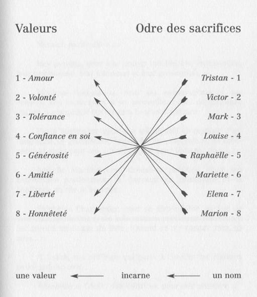

— Assurément... compatit Marinette. Cependant, aux dires de ta mère, j’ai cru comprendre que son homosexualité n’était plus un problème pour toi et que depuis votre mise au point, tu l’avais acceptée.
— C’est vrai. Je m’en fiche qu’elle soit goudou.
— Alors, c’est quoi ton problème ?
— Tu es vraiment lourde, mamy ! Ce n’est pas ce qu’elle est qui me dérange, c’est Louise ! Je ne peux pas l’encadrer ! En plus, je les ai vues, nues... collées... gluées... Tu veux des détails ?
Devinant l’inconfort de sa petite-fille, Marinette écoute, impassible.
— Tu piges ? scande Marion, au cœur de son argumentation. À chaque fois que je croise cette nana, la scène me revient en tête. C’est insupportable !
— D’accord, mon petit chat. J’admets que cet aspect de la réalité auquel tu n’aurais jamais dû assister m’avait totalement échappé. Malgré tout, il est absolument vital pour toi de dépasser ce stade et de transposer ce tableau dans son contexte : l’amour. Bien sûr, je peux comprendre qu’il est difficile pour toi, à ton jeune âge, d’appréhender ce concept encore inexploré, ainsi que les évidences qui en découlent, mais pour te mettre sur la voie, je ne te dirai qu’une chose : ta maman et Louise sont amoureuses et quand une telle alchimie opère, elle se traduit obligatoirement par un passage à l’acte physique et...
— Sexuel... Oui, je sais, mamy ! Encore une fois, je ne suis pas demeurée !
— Ah... tu connais ?
— Je vais avoir 16 ans, mamy, pas 6 ! Je regarde la télé, je surfe sur Internet à l’école, je lis des magazines... L’éducation sexuelle a évolué depuis ton époque, tu sais...
— Je vois, oui... Tu es une pro de la théorie mais pas encore de la pratique, n’est-ce pas ?
Énigmatique, Marion laisse planer un doute raisonnable et rassure sa grand-mère, au bord de la crise cardiaque.
— Évidemment : théorie, à fond...
— Dieu merci, reprend Marinette, soulagée. Revenons au problème qui te préoccupe. Si tu crois que ton agressivité, ton arrogance et tes colères à répétition vont pousser Louise à quitter ta mère, tu te mets le doigt dans l’œil jusqu’au coude. Non seulement ça ne marchera pas, mais tu risques de rentrer en conflit avec ta maman. Si tu veux un conseil, je pense qu’il faudrait que tu te calmes, que tu prennes un peu de recul pour que cette image insupportable finisse par s’estomper et disparaître. Là, tu pourras déterminer objectivement si, oui ou non, tu as des atomes crochus avec Louise et si vous êtes capables de cohabiter.
Marion prend sur elle. Le message est clair et ne suppose aucun écart. Il va falloir jouer serré.
— J’imagine qu’on passe le Nouvel An chez toi, conclut la jeune rebelle, en haussant les épaules.
— Oui et je te préviens : Louise est invitée et prendra le petit déjeuner avec nous, le lendemain matin. Je compte sur toi pour ne pas faire d’esclandres, d’accord ? Il est vraiment temps que tu mûrisses un peu, mon ange.
Marion quitte la cuisine sans broncher et regagne sa chambre. Passablement énervée, elle se laisse choir sur le lit à côté de Tristan.
— Salut, bredouille celui-ci, à peine réveillé.
Marion ne répond pas.
— Tu boudes ? tente le jeune homme, captant sa mauvaise humeur.
Marion esquive le baiser habilement proposé, se redresse et s’installe à son bureau, face à l’ordinateur.
— Louise est dans le lit de ma mère ! À partir d’aujourd’hui : changement de tactique. Je prends sur moi. Elle veut la guerre ? Elle sera froide.
7 h 47
Victime de son horloge interne, Louise ouvre les yeux. De l’autre côté du lit, Elena dort encore. Sa respiration lente et régulière laisse présager un de ces rêves en demi-teinte dont la douceur porte aux nues. Captivée par ce tableau vivant, Louise la contemple et imprime au fond de ses rétines, chaque parcelle d’ombre et de lumière sculptant le velouté de sa peau. Troublée, elle se laisse guider par son émotion et dans un mouvement indolent, se love contre son amante. Subtilement extirpée de son sommeil, Elena s’anime au ralenti, ses sens reprennent peu à peu possession de son être et ses paupières battent tel un papillon prêt à l’envol. Instinct viscéral, chaque millimètre de son corps laissé à l’abandon cherche un refuge avec une précision infaillible. Entre rêve et réalité, Elena se délecte, prolonge son état d’apesanteur. Invitation au voyage, au partage, au largage des amarres. Son excitation gravit un à un les échelons. Louise capte les ondes, déchiffre les codes, s’accorde à l’unisson et s’enfiévré. Les paumes de ses mains s’arrondissent sur la poitrine d’Elena tandis que sa bouche progresse. Un mouvement de tête et les lèvres d’Elena s’entrouvrent pour recueillir le baiser pressant.
— Aime-moi, articule-t-elle, dans un souffle presque inaudible.
Louise s’exalte, mais un claquement de porte dans le couloir l’arrache à son enchantement.
— Tu as fermé à clé ? s’inquiète-t-elle aussitôt.
— À double tour, mon amour...
***
Vendredi 2 février, 18h00
— Vas-y, sélectionne le CD, clique sur « ajouter au panier » et laisse-moi faire.
Averti, Tristan prend place devant son ordinateur, tape son nom, prénom, le mode de paiement, l’adresse de livraison, chez Marion, et sort sa carte de crédit de son portefeuille.
— Qu’est-ce que tu fais ? demande Marion.
— Je paie en ligne.
— Tu vas l’acheter ?
— Oui... Cadeau !
— Pour mon anniversaire, le mois prochain !
— Non. Pour le plaisir. Le 9 mars, tu en auras un autre.
— C’est génial ! Tu es trop cool ! Merci.
À peine le temps d’un baiser de remerciement que le portable de Marion impose sa présence. Agacée, celle-ci vérifie le nom de l’appelant et commence à râler.
— Allô... salut maman... oui, désolée, j’ai oublié de te prévenir... Non, on n’a pas eu cours cet après-midi... La prof de gym était malade. Là ? Je suis chez Tristan, on fait des trucs sur l’ordi...
Monocorde, Marion affiche une désinvolture à la limite de l’incorrection.
— OuIIi, c’est bon, j’ai pigé... j’ai plus 3 ans, OK ! J’ai le droit de respirer un peu, non ? ... Attends, ce n’est pas la fin du monde, je ne suis pas morte, non plus ! Oui, vous partez demain en week-end... comment l’oublier ! D’accord : je prends le prochain bus... oui... à plus...
Absences ponctuelles, retards savamment orchestrés, rendez-vous manqués ou ignorés, oublis récurrents, mensonges manifestes... Depuis ce fameux matin de Noël, Marion a développé une stratégie qu’elle s’attache à perfectionner à la moindre occasion : désintéressement systématique de la vie amoureuse de sa mère, éloignement physique prémédité dès que l’occasion se présente et absence de dialogue relatif à sa vie privée. À la maison, l’ambiance s’est presque métamorphosée : plus aucun cri, plus de sautes d’humeur, de portes qui claquent ou d’agressivité concentrée à l’annonce du passage de Louise pour la journée. Plus de conflits, de chantages inutiles, de bouderies interminables ou de colères destructrices lorsque celle-ci s’éternise pour la nuit. Plus de soirées laborieuses au mutisme destructeur, de coups de gueule inévitables au moindre mot de travers, ni de regards noirs traduisant l’humeur massacrante du moment. La vie change, une autre histoire s’écrit, bien que pour Marion, quelle qu’en soit la forme, le fond reste immuable : éradiquer l’ennemie par n’importe quel moyen. Loin d’être dupe de ses manœuvres désespérées, mais victime de son attachement pour la demoiselle, Tristan ne peut, une fois de plus, ignorer l’incident.
— Je suis sûr que tu l’as fait exprès !
— De quoi tu parles ? réplique Marion, feignant difficilement l’innocence.
— De planter ta mère à l’arrêt du bus !
— N’importe quoi !
— Arrête, je ne suis pas débile, Marion ! Je te vois faire. Et d’ailleurs, plus le temps passe et plus je me demande si tu restes avec moi après les cours pour le plaisir, ou pour faire flipper ta mère !
— Tu es dingue ! conteste l’adolescente, le regard fuyant. Quand je suis avec toi, je ne pense qu’à toi et j’oublie l’heure !
— C’est vrai ce mensonge ? ironise Tristan, tandis que Marion essaie de comprendre la question. Je ne suis ni un prétexte, ni un moyen de punir ta mère ou de la rendre un petit peu plus folle qu’hier. Tu jures que tu ne m’utilises pas pour arriver à tes fins...
— Tu es bête... J’aime bien être avec toi. C’est mon égoïste de mère qui veut me garder pour elle toute seule. Tu vois, ce soir, par exemple : sous prétexte qu’elle se tire demain en week-end, avec son boulet, il faut que je rentre dîner illico presto ! C’est super-injuste parce que j’aurais préféré passer la soirée avec toi...
— Moi aussi. Malheureusement, je ne suis pas libre ce soir.
— Pourquoi ?
— Je dîne avec mon père et Camille.
— C’est ce soir ?
Vague à l’âme. Déception évidente. Marion se laisse choir sur le lit, suscitant chez Tristan un début de culpabilité.
— Ne fais pas la tête, tente l’amoureux dépité. On peut se voir demain, si tu veux ?
— Pas sûr. Ma grand-mère va me chaperonner jusqu’à dimanche soir. Et tu commences à la connaître ! Elle a dû prévoir dix mille choses à faire. C’est qui cette Camille, déjà ?
— Une femme que mon père a connue trois ans après le décès de ma mère. Un vrai coup de foudre ! Ils sont restés deux ans ensemble et puis...
— Ça a cassé...
— Oui. Camille voulait se marier et avoir un gamin. Mon père, lui, n’était pas en phase. Résultat : ils ont rompu. Camille est partie travailler dans le Sud et papa s’est retrouvé complètement largué. Il était inconsolable.
— Pourquoi il n’est pas parti la chercher, si elle lui manquait autant ?
— Il l’a fait, un an plus tard, un an trop tard. Il la trouvée mariée et enceinte de deux mois. C’était mort.
— Et après ?
— Papa s’est fait une raison et puis, il a décidé de passer à autre chose. Il a recommencé à sortir, à butiner un peu, jusqu’à l’année dernière où il a rencontré Myriam. Une gentille nana, divorcée, comme lui, et qui ne voulait pas d’enfants. Ils se voient régulièrement, s’aiment beaucoup, certainement... Et puis, la semaine dernière, quand il est rentré de son séminaire à Berlin, je n’ai pas eu le temps de lui demander ce qui lui arrivait qu’il m’a pris dans ses bras et m’a dit : « mon petit gars, tu ne devineras jamais sur qui je suis tombé ce matin, en arrivant à l’aéroport !! ! »
— Camille ! propose Marion, d’un ton assuré.
— Exact. Ils ont dîné en tête à tête dès le lendemain et, ce soir, il veut que je me joigne à eux. Je ne sais pas exactement où ils en sont, mais je suis curieux de le savoir.
Flash immédiat. Idée lumineuse. Trouvant un intérêt démesuré pour cette histoire inhabituelle, les yeux de Marion pétillent.
— Depuis combien de temps ils ne se sont pas vus ?
— Six ou sept ans. Pourquoi ?
— Tu crois qu’on peut rester amoureux de quelqu’un après autant de temps ?
— Pourquoi pas ? Quand il est question d’amour...
— Il a quel âge, ton père ?
— 43.
— Et Camille ?
— Aucune idée... 36, 37...
— Et Myriam ? Elle est au courant qu’il la revoit ?
— Ça m’étonnerait.
— Tu crois qu’il va lui dire ?
— C’est ses oignons. Je n’ai pas à m’en mêler.
— Tu ne culpabiliserais pas si tu apprenais que ton père trompait Myriam avec Camille ?
— Pourquoi je devrais culpabiliser ?
— Parce que tu connais Myriam, que tu la côtoies régulièrement, qu’elle dort chez toi...
— Tu sais, même si elle passe pas mal de temps ici, je n’ai pas beaucoup d’atomes crochus avec elle. Nous ne sommes absolument pas proches. Et puis de toute façon, mon père n’est pas comme ça. C’est un mec bien. S’il se passe un truc entre lui et Camille, il ne se défilera pas. Il parlera à Myriam.
Contrarié, Tristan tournoie sur sa chaise d’ordinateur.
— Pourquoi ces questions ? Où veux-tu en venir ?
— Nulle part. C’était juste pour savoir. Tu les rejoins à quelle heure ?
— 19h 30, à la Marina. D’ailleurs, il faut que j’aille prendre ma douche et toi, ton bus, si tu ne veux pas te faire remonter les bretelles !
— T’inquiète !
— Vas-y... continue de faire ta tête de cochon. En attendant, si tu rates celui-là, je ne donne pas cinq minutes à ta mère pour me pourrir de messages ! T’es pénible, Marion. C’est débile ton jeu !
— Écoute, ma mère me veut docile, gentille et compatissante avec Louise mais, comme toi avec Myriam, je n’ai aucun atome crochu avec elle. Alors, je biaise, je compose.
— C’est ce que je craignais : tu te sers de moi depuis le début !
— Tu me fatigues avec tes conclusions débiles !
Provocateur, Tristan tente la carte de l’homme blessé qu’il faut consoler, mais sa tentative n’a pas l’effet escompté. Au contraire. Marion le fixe bizarrement comme si, inconsciemment, il avait ouvert une brèche dans laquelle, elle seule, pouvait s’engouffrer.
— Je peux regarder un truc sur Internet pendant que tu te fais beau ?
— Oui, si tu veux.
Tristan s’éloigne vers la salle de bains. Marion se pince les lèvres tandis que ses doigts s’agitent sur le clavier.
Moteur de recherche, barre de tâche, taper le nom...
— Raphaëlle... heu... Raphaëlle comment ?? ? C’est quoi son nom de famille ? Mornet ?... Marey ? ... Zut, je l’ai sur le bout de la langue ! Money ? Non, j’y suis : Raphaëlle Marley !
Ouverture du portail. Divers choix sont proposés : Bibliographie, actualité, photos, interviews... écrire à l’auteur...
***
18h45
— Elle le fait exprès ! s’indigne Elena, en dressant la table dans le salon. Elle veut me pousser à bout.
Silence dans le canapé. Louise et Marinette se contentent d’échanger un regard en sirotant leur apéritif.
— Ça ne vous paraît pas étrange, à vous, ce changement radical d’attitude ? reprend Elena, en quête d’un appui moral qui ne vient pas. C’est dingue que cette gamine, si bavarde d’habitude, si avide de confidences avec moi et si facile à deviner, se renferme dans un tel mutisme, une telle absence de communication. C’est un mur ! Insolente et indifférente pardessus le marché ! C’est insupportable.
— C’est l’adolescence, ma petite fille, s’autorise Marinette, téméraire. À son âge, on a un jardin secret, un journal intime auquel on se raconte sans honte et sans tabous.
— De quoi tu parles, maman ? Un journal intime ne remplace pas l’écoute et les conseils d’une mère.
— Ça dépend de ce qu’on vit... intervient maladroitement Louise.
Elena se retourne et toise sa compagne.
— Qu’est-ce que tu insinues ?
L’atmosphère s’alourdit, éveillant, de concert, l’inquiétude d’Elena et la curiosité de Marinette.
— Ma chère Louise, sur ce coup-là, vous en avez trop dit ou pas assez, s’autorise celle-ci, suspicieuse.
— Maman a raison. Parle !
Victime de sa spontanéité, Louise se sent coincée. Mère et fille ne lui autorisent plus aucune dérobade.
— Tu en as parlé à l’instant, Elena : Tristan.
— Quoi, Tristan ? C’est lui qui la manipule ?
— Non, ce que je veux dire c’est que Tristan est le jardin secret de Marion. Ils ont une histoire ensemble.
Rires nerveux, étouffés, puis libérés en grimaces imperceptibles. Elena pose les derniers couverts sur la table et vient rejoindre ses invitées.
— Non, non, non... tu te trompes complètement. Si Marion sortait avec ce garçon, j’aurais été la première au courant. Elle serait venue me le raconter. Elle sait que ma porte est toujours ouverte pour elle, que...
— Pas toujours, ma chérie, la coupe Marinette, en se servant un autre verre de vin. Et, si je peux me permettre, de moins en moins souvent, ces derniers temps. Oh, ce n’est pas un reproche, loin de là, car il est évident que tu dois préserver ton intimité, mais c’est la réalité.
Elena se laisse aspirer par le dossier du canapé. Le film de ces dernières semaines file dans sa mémoire. Quelque chose lui aurait-il échappé ?
— OK, Louise. Dis-m’en plus. Tu as des doutes ou des preuves de ce que tu avances ?
— Je les ai surpris... À mon insu.
Coup de théâtre. Goût acidulé au fond de la gorge. Elena allume une cigarette.
— Racontez ! trépigne Marinette. Vous avez vu quoi ? Où ? Quand ?
— La semaine dernière, quand je suis allée...
— La semaine dernière ! la coupe Elena. Et c’est seulement maintenant que tu déballes ton sac ?
— Calme-toi, Elena. Si je n’ai rien dit c’est que j’ai estimé que ce n’était pas à moi d’en parler la première, OK ? Je peux continuer ?
Silence évocateur. Elena opine du chef. Louise valide.
— La semaine dernière, quand je suis allée à Arromanches...
— Pourquoi Arromanches ? l’interrompt de nouveau Elena.
— Je suis allée voir Nathalie.
— Nathalie ?
— Oui, ma copine qui tient un cours de danse, modem jazz, en centre-ville.
— Ah, oui... La fameuse Nathalie. Ton ex ! Je n’avais pas fait le rapprochement. Et tu comptais aussi m’en parler un jour, j’imagine...
Une tension malsaine s’installe dans la pièce. Curieuse, sans être suicidaire, Marinette préfère se tenir en retrait, sans pour autant perdre un mot de la conversation qui s’avère fort instructive.
— Elena, ne commence pas à extrapoler, s’il te plaît, reprend Louise. Je connais Nathalie depuis le lycée, et ce n’est pas mon ex, comme tu dis. C’était juste un flirt d’adolescentes ! 11 y a prescription.
Elena encaisse et se contient. Marinette ne respire plus qu’un coup sur deux et Louise tente de recouvrer son calme.
— Bon, puisqu’il faut en passer par là, allons-y : je suis allée voir Nathalie pour lui proposer une association. Inutile de te rappeler que les affaires ne marchent pas fort pour moi depuis le début de l’année. Comme c’est pareil pour elle, on s’est dit que si on montait une structure ensemble, on aurait moins de frais de gestion, de loyer pour la salle, etc. J’attendais sa réponse pour t’en parler. Il ne faut pas vendre la peau de l’ours avant de l’avoir tué.
— D’accord, continue, soupire Elena, dissimulant sa contrariété. Tu es allée à Arromanches, et... ?
— Sur le coup de midi, en traversant Cabourg, je suis passée devant le lycée de Marion. Il y avait des embouteillages et je suis restée coincée un moment au carrefour. Et là, je les ai vus sortir. Tristan la tenait par l’épaule. Ils se sont assis sur un banc, à l’entrée du square et ils se sont embrassés.
— OK. Épargne-moi les détails, s’il te plaît.
— Écoute, Elena, intervient Marinette en sortant de sa réserve. Tu ne vas pas en faire un plat ! Ta gamine va avoir 16 ans ! Tu ne crois pas qu’il est normal de flirter un peu à son âge ?
— S’il te plaît, maman, ne t’en mêle pas. Si tu ne lui avais pas mis ces idées en tête, toi aussi !
— Quelles idées ? De quoi tu parles ? La dernière fois que j’ai eu l’occasion de discuter avec ma petite fille, c’était le matin de Noël. Et je te prie de croire que je lui ai fait la morale à ce sujet.
— Le matin de Noël ?
— Parfaitement. Je sortais des toilettes et je l’ai trouvée devant la porte de ta chambre. Tu sais : celle que tu laisses toujours ouverte d’habitude... Comme je savais que Louise était avec toi, je me suis débrouillée pour l’entraîner dans la cuisine et nous avons discuté. Pour ce qui est de Tristan, elle m’a juré qu’ils n’avaient pas couché ensemble. Elle était presque offusquée que j’aie pu l’imaginer.
Elena est atterrée. Pourquoi fallait-il qu’elle soit la dernière au courant de ce qui se passait, ou se disait, sous son propre toit ? Pourquoi les personnes les plus proches s’acharnaient-elles à ne rien partager avec elle, en temps et en heure ? Pourquoi les événements lui échappaient-ils sans cesse ? Abasourdie par ces révélations tardives, Elena se lève d’un bond, regarde sa montre et ramasse son sac.
— Bien. Si vous n’avez plus rien à dire, je vais chercher Marion à l’arrêt du bus. Merci de surveiller le poulet dans le four.
Clefs de voiture à la main, elle se dirige vers la porte d’entrée. Les talons de ses chaussures pilonnent le parquet, extériorisant une colère farouchement contenue.
— Ne vous inquiétez pas, je ne piperai pas un mot de cette conversation à Marion. Je vais d’abord prendre le temps d’assimiler et de me calmer. Maintenant, je ne vous cacherai pas que je trouve votre attitude impardonnable. On dirait presque que vous vous êtes donné le mot pour m’exclure purement et simplement de la réalité ! Sachez que je n’apprécie pas.
***
Dimanche 4 février, 16 h 02
Week-end en demi-teinte pour Elena qui, malgré les efforts de Louise, sa générosité, sa bonne humeur et sa tendresse, n’a pu éradiquer de sa mémoire les perturbations de ce vendredi noir, au pays des cachotteries. Après un samedi relativement tendu, une communication difficile et une réserve volontaire, Elena avait décidé de baisser sa garde, reconnaissant ainsi son inclinaison démesurée pour la tragédie. Car là était le problème : Elena et ses drames ! Pointilleuse, à l’affût de chaque détail, capable du meilleur, comme du pire, sous prétexte d’une virgule oubliée, elle avait, au fil des années, développé ce sens aigu de l’exagération qui, détournant l’attention de son entourage, palliait ce manque de confiance en elle dont elle souffrait amèrement. Anciens réflexes de sauvegarde, de protection de soi, récurrences du passé, d’actes mal évalués, qui avaient conduit à des blessures et une culpabilité indélébiles. Des erreurs à ne jamais reproduire, que l’amplification de ses humeurs lui permettait de mieux cerner, appréhender et maîtriser, mais qui, paradoxalement, l’incitait à des rancunes disproportionnées, entravant sa qualité de vie et son engagement personnel. Point faible de sa personnalité si entière qui, finalement, la rendait otage de ses contradictions : besoin qu’on lui donne une direction à suivre, mais refus de se laisser guider. Envie de légèreté, d’insouciance et de fraîcheur, mais nécessité de logique, de rationalité et de certitude. Ambiguïté totale, alchimie explosive dont l’amour pouvait s’avérer le moteur et la peur, le carburant.
— Je dois faire le plein avant de prendre l’autoroute, annonce Louise en bifurquant dans la zone d’activité, en périphérie de Chartres.
Elena approuve d’un geste évasif de la main et en profite pour appeler Marinette.
— Allô, maman... c’est nous. On vient de quitter Chartres. On se ravitaille et on prend la route. Oui, c’était parfait... une excellente table et un hôtel magnifique. Merci encore pour ce cadeau. C’était une fabuleuse idée. Et Marion ? ... Chez toi ? Depuis ce matin ? Ah bon ! Pour quoi faire ? Ah... Internet... Tu sais, je ne pense pas que ce soit une bonne idée de lui offrir l’abonnement pour son anniversaire. Elle va passer son temps à papoter avec ses copines et elle ne va plus bosser à l’école... Oui, je sais, c’est le progrès ! Et sinon ? Vous avez parlé un peu ? ... J’espère que tu as su rester à ta place cette fois-ci ? ... Oui, je préfère que tu t’abstiennes. Exactement : c’est à moi de le faire... on en reparle quand je serai rentrée... Oui, je suis un peu en colère contre toi, maman... parce que j’aimerais que tu me tiennes au courant quand il y a des sujets sur le feu avec Marion. D’accord... je te rappelle quand on arrive.
— On y va ? propose Louise en reprenant le volant de son antique Laguna. À moins que tu préfères me débaucher sur la banquette arrière, baby !
Moment mal choisi, même si, d’évidence, le ton de la plaisanterie est indiscutable. Elena n’apprécie pas et le fait savoir. Ceinture de sécurité bouclée, elle cale sa nuque contre l’appui-tête, tend ses jambes devant elle et ferme les yeux.
— OK... Qu’est-ce qu’il y a encore ? demande Louise. Tu t’es frittée avec ta mère ?
Pas de réponse.
— Tu sais, ce serait génial si tu arrêtais de te prendre la tête et que tu profitais du moment présent. Ce qui est fait est fait. On ne peut pas revenir en arrière. Je serais à ta place, je...
— Tu n’es pas à ma place, Louise. Si c’était le cas, tu ne m’aurais pas caché ton projet de travail.
— Et voilà ! Tu recommences ! Retour au point de départ. Je t’ai déjà expliqué pourquoi je ne t’en avais pas parlé. Ce n’est pas évident pour moi d’aborder mes problèmes de boulot et de fric avec toi. C’est mon business, pas le tien. Je pense que tu as suffisamment de préoccupations avec Marion pour que je ne vienne pas te prendre la tête. Et puis, arrête de dire que je t’ai caché les choses ! Il ne s’agit pas d’un secret ou d’une manigance derrière ton dos. Juste une idée pour améliorer mon quotidien et, à plus long terme, si ça marche, le nôtre !
— Ah oui ? Et comment tu comptes t’y prendre ? Tu vas aller vivre à Arromanches ? Nathalie va venir habiter avec toi ? C’est quoi votre deal, au juste ?
Dialogue de sourdes. Agacée, Louise se résigne.
— Remarque, elle doit être plutôt contente que tu lui proposes une association, relance Elena, dont la mauvaise fois n’a plus de limites. Une occasion de renouer avec le passé. Bizarre qu’elle n’ait pas encore répondu, d’ailleurs... je serais à sa place, je...
— Tu sais quoi, Elena : tu me fatigues.
Louise est en colère. C’est la première fois.
***
Mardi 6 février. 16 h 02, Cabourg
Garée en double file, Elena patiente devant la sortie de l’école. Emportée par la rythmique de la chanteuse Pink, omniprésente sur les ondes ces dernières semaines, elle se laisse aller à fredonner un refrain dont la plupart des paroles lui échappent totalement. Il faut dire que le rock populaire, ainsi que la langue anglaise n’ont jamais fait partie de ses points forts. Encore une minute d’attente et Marion apparaît sous le préau. Elena éteint la radio et baisse sa vitre. Bientôt, elle devra faire preuve de tact, du détachement qui s’impose pour amener Marion à lui faire la confidence qu’elle attend depuis vendredi soir, l’aveu de sa liaison avec le fameux Tristan et, espérons-le, la négation d’une relation sexuelle dont la seule pensée la terrifie.
— Coucou, ma chérie ! Vas-y, grimpe.
Marion monte dans la voiture, claque la portière et attache sa ceinture.
— Alors, cette journée ?
— Cool.
— Tu as eu des notes ?
— Non.
— Tu as beaucoup de devoirs pour demain ?
— Pas trop. Il y a du courrier aujourd’hui ?
— Non, pourquoi ?
Déception furtive. Marion semble contrariée.
— Tu attends quelque chose ? questionne innocemment Elena.
— Non, rien. Juste un truc...
— Quel genre de truc ?
— Rien...
Le dialogue s’annonce difficile. Elena fait craquer la boîte de vitesses.
— Hmmm... cet embrayage ! À chaque fois, je me fais avoir ! Tu as faim ?
Réponse mitigée. Elena n’en fait aucun cas.
— Qu’est-ce qui te ferait plaisir ? Pâtisseries, chocolat chaud, viennoiseries ? Dis-moi ! Aujourd’hui, c’est toi qui commandes !
Malicieuse, Marion se retourne vers sa mère, tandis que celle-ci réalise son erreur de langage.
— OK, valide l’adolescente. C’est moi qui commande. Si on allait en centre-ville, à la fête foraine ? Il y a un stand avec des churros, des crêpes et des gaufres.
— Bonne idée ! J’adore les churros. En parlant de fiestas : tu as une idée pour ton anniversaire ? C’est dans un peu plus d’un mois et je me disais qu’on pourrait peut-être organiser une petite soirée à la maison, avec tes nouveaux copains ?
Le virage est amorcé, dans tous les sens du terme, mais des travaux de voirie aux abords de l’avenue principale obligent Elena à emprunter la déviation. Pourvu qu’il n’en soit pas de même dans l’esprit de Marion.
— Je n’ai pas de nouveaux copains. Trop compliqué pour moi de faire confiance, de laisser quelqu’un mettre son nez dans mes affaires, dans ma vie, notre vie...
Explication minimaliste qui pourtant a le mérite d’être claire. Inutile de développer. Elena a capté le message.
— Et si on faisait comme d’habitude ? reprend Marion, consciente que sa franchise a sensiblement ébranlé sa mère. Une fête entre nous.
— Tu veux dire : mamy, toi et moi ? demande Elena que ce « entre-nous » excluant Louise, attriste sans vraiment l’étonner.
— Évidemment. Plus Tristan.
Retour au cœur du sujet, noyau dur de la conversation.
— Tristan... oui, c’est normal. Il est gentil ce garçon. Très attachant.
— Très.
— Tu passes beaucoup de temps avec lui.
— Pas mal, oui.
— Il est en terminal, si j’ai bonne mémoire ?
— Terminale L. Il a redoublé Rond-point. Elena s’engage.
— Tu n’es pas obligée de me répondre, Marion, mais si tu dis que tu n’as pas de nouveaux copains, dans quelle catégorie places-tu Tristan ? Un camarade, un confident, un ami... un petit ami ?
Feu rouge. La voiture stoppe in extremis. Elena cale. Plusieurs secondes de réflexion et Marion se décide à ouvrir la bouche.
— Tout ça à la fois.
Elena tourne la clé de contact. Le moteur tousse, repart. Le pied sur la pédale d’accélérateur, elle s’imprégne de cette vibration pour calmer ses nerfs.
— Je m’en doutais un peu... lâche-t-elle, avec sang-froid. À Noël, j’avais senti que vous étiez très proches.
Marion confirme d’un regard, étonnée par la complaisance de sa mère. Cette attitude positive et tempérée, cette ouverture au dialogue l’invite presque à se livrer, à renouer avec cette complicité qu’elles partageaient par le passé, cette confiance que le choc de ces derniers mois avait corrompue, salie et partiellement détruite. Le feu passe au vert. Elena embraye.
— Et, tu es... amoureuse ?
— Je ne sais pas trop. Disons qu’on se comprend, on discute de plein de trucs, on rigole beaucoup.
— Il est gentil avec toi ?
— Ouais. Des fois, il me fait des cadeaux.
— Des cadeaux, c’est chouette ! Et sinon, dans les moments... je veux dire : physiquement... tu...
Elena patine, passe en roue libre.
— J’aime quand il me prend dans ses bras... quand il m’embrasse...
Elena se sent rougir.
— Oui, c’est important les baisers. Parfois, ça peut provoquer des envies... dans l’intimité...
— Arrête de tourner autour du pot, maman ! Qu’est-ce que tu veux savoir, au juste ? Si on couche ensemble ?
Les mots sont lâchés. Le moteur rugit, la culasse résiste. Elena se gare le long de l’avenue et fait face à sa fille.
— Oui. Je veux savoir si vous couchez ensemble.
— On a essayé... une fois...
Marion fixe sa mère droit dans les yeux. Elena se décompose.
— Tu dis ça pour me provoquer ?
— Non. C’est vrai. On a essayé et j’ai dit stop.
— Tu as dit stop ?
— Oui.
Grâce du ciel. Elena n’arrive plus à se contenir et se répand en flot de paroles.
— Tu as eu raison, ma petite fille. Tu es encore un peu jeune pour la bagatelle. En plus, si tu n’es pas vraiment amoureuse... Ce n’est pas une chose qu’on fait à la légère, dans le feu de l’action. Il peut y avoir des conséquences terribles ! Je sais que Tristan est plus âgé que toi, mais ce n’est pas une raison pour que tu te laisses faire, tu...
— Si je ne l’ai pas fait, c’est parce que je n’en avais pas envie, maman. Arrête de flipper et de jouer les mères poules ! Je ne suis pas gogole et Tristan ne cherche pas à me forcer. Et puis, coucher ensemble, ce n’est pas le seul moyen de se faire plaisir...
Après la libération, une poussée d’adrénaline électrise Elena.
— Comment ça : se faire plaisir ?
— Désolée, c’est mon jardin secret, s’autorise Marion, pudique. Est-ce que je te demande, moi, ce que tu fabriques sous la couette avec ta copine ? Et pourtant, j’en aurais des questions !
Coup bas légitime qu’Elena encaisse sans broncher, tandis que Marion regrette instantanément son agressivité.
— Pardon... Je ne voulais pas être méchante. Je n’aurais pas dû... même si ce n’est pas faux.
Face à l’assurance de sa fille, Elena ne se sent plus d’attaque. En quelques mois, la gamine un peu naïve qui venait se blottir dans ses bras à la moindre occasion, posant des questions innocentes et affichant une timidité presque maladive, avait grandi, mûri, appris à délimiter son espace et à se faire respecter.
— Tu as raison, Marion. Tu as le droit d’avoir un jardin secret. Par contre, promets-moi que si tu changes d’avis en ce qui concerne Tristan, que si tu te décides à passer à l’acte, tu viendras m’en parler. Nous irons voir un gynécologue ensemble pour que tu prennes la pilule.
— D’accord. Si tu n’as plus d’autres questions, on peut peut-être aller les manger ces crêpes !
***
Samedi 10 février, 12 h 06
Journée magnifique en perspective, avant-goût de printemps, comme les aime Elena. Les arbres commencent à retrouver leurs couleurs chatoyantes, le chant des oiseaux se mêle au bruissement des feuilles, le soleil réchauffe les vieilles pierres, et le vent, telle une valse à quatre temps, s’infiltre à travers les persiennes en courant d’air douillet. Louise vient de partir, occupée pour la journée à diverses démarches administratives et ménagères. Tristan ramène Marion après les cours et doit rester déjeuner. Ils ne devraient plus tarder. Elena vient de finir de préparer le repas lorsque le facteur frappe à la porte. Selon les consignes obsessionnelles de sa fille, depuis le début de la semaine, elle accueille le préposé avec prévenance et, à la faveur d’un rayon de soleil persistant, s’installe dehors pour évaluer le butin. Entre factures, publicités et prospectus, une imposante enveloppe à bulles, adressée à Marion, sort du lot, et une autre, au format normal, lui glisse des mains. Elena la ramasse, découvre son nom de jeune fille écrit en lettres majuscules, détaille le cachet de la poste, tamponné à Paris, puis revient sur l’écriture, imperceptiblement familière. Ses mains tremblent. Encore une minute d’hésitation et elle tire sur le rabat. Telle une confirmation qui n’a pas lieu d’être, elle cherche la signature : Raphaëlle. Son pouls s’accélère.
« Paris, le 9 février.
Léna,
J’imagine que tu dois être surprise de lire ces mots, même si tu ne peux l’être autant que moi de les écrire. Mais la vie est étonnante, et il n’est jamais trop tard pour bien faire.
Douze ans... Toutes ces années de silence, dont la nécessité ne faisait aucun doute lors de notre séparation et qui sont devenues, à mon sens, autant d’années perdues à s’ignorer, à s’effacer au fil d’un temps qui ne nous appartenait plus.
Alors, tu me diras : pourquoi aujourd’hui plutôt qu’hier ou avant-hier ? Parce que le hasard du calendrier fait que samedi prochain, je dois me rendre à Deauville pour une dédicace et qu’en écoutant mon éditrice me parler du programme établi, mon passé avec toi est devenu plus présent que jamais.
Oh, rassure-toi, je ne viens pas en « conquérante » ! Seulement cette expédition de dernière minute, ce plongeon au cœur de mes souvenirs, m’a permis de me rendre à l’évidence que depuis longtemps, je ne sais plus rien de toi, que cela me manque et m’a toujours manqué.
Comment vas-tu ? Que deviens-tu ? As-tu des projets ? Les galeries d’art se disputent-elles tes toiles ? Autant de questions qui me... »
Coup de klaxon. Elena relève la tête. La Renault 5 de Tristan débouche dans l’allée. À peine le temps d’enfouir la lettre dans la poche ventrale de son tablier de cuisine, d’évacuer son trouble et de retrouver un semblant de naturel que Marion est sur ses talons.
— Salut maman.
— Bonjour, ma chérie. Regarde ce qui est arrivé pour toi !
Fébrile, Elena exhibe l’enveloppe à bulles que Marion lui arrache pratiquement des mains.
— D’accord ! Je commence à piger pourquoi ça a pris la semaine pour arriver ! Il y a une erreur de frappe dans l’adresse ! constate la gamine, avant de s’intéresser au contenu.
— Bonjour madame, lance poliment Tristan en s’approchant de son hôte.
— Salut, jeune homme. Viens me faire une bise. Et appelle-moi Léna... je veux dire : Elena, ce sera plus sympa.
— Waouh ! C’est génial ! exulte Marion, qui n’a pas relevé le lapsus. En plus de la musique du film Roméo et Juliette, il y a le DVD de Molière ! J’adore Luchini !
— Je sais, réplique Tristan, fier de sa surprise. Et ce film est trop sympa.
— Mais comment tu as fait ? Je croyais que tu n’avais pris que le CD, moi ?
— J’avais sélectionné le film avant que tu arrives.
Marion jubile, se jette au cou de son amoureux et l’embrasse sur la bouche. Elena accuse le coup. Pour la première fois de sa vie de mère, elle se trouve spectatrice des élans de sa fille envers un garçon. Décidément, la matinée est riche en émotions. Beaucoup d’émotions...
— Allez ! À table, lance-t-elle, pour couper court à ces débordements affectifs dont elle ne maîtrise pas encore la spontanéité. Installez-vous, j’arrive.
Déroutée, Elena rejoint ses fourneaux, s’écroule sur une chaise, reprend sa respiration, tandis que sa main glisse dans la poche de son tablier. La caresse du papier glacé attise son impatience, mais le déjeuner est prêt. Il lui faudra attendre.
— Toi aussi, tu as du courrier, la surprend Marion.
— Non... rien... des prospectus...
— Ah oui ? C’est quoi cette enveloppe qui dépasse de ta poche ?
Elena éclate d’un rire exagéré, ouvre la porte du frigo et y plonge la tête pour éviter la confrontation.
— C’est la facture d’électricité, ma chérie. Pas vraiment de la prose ! Tiens, prends la moutarde et file à table !
Marion ne relève pas, Dieu, merci.
D’ordinaire, Elena aurait préconisé de ne pas se jeter sur la nourriture, de prendre le temps de déguster, de mâcher lentement pour mieux digérer, de profiter de cet instant convivial pour communiquer et échanger des idées. Aujourd’hui, sa seule préoccupation est de voir les deux jeunes gens dévorer le contenu de leur assiette en silence, et s’installer, repus, devant le petit écran. Sitôt dit, sitôt fait. L’entrée à peine avalée, Marion et Tristan se jettent sur les tomates farcies, qu’ils engloutissent en un éclair et, cerise sur le gâteau, proposent de reporter le dessert à l’heure du goûter. Elena est ravie. Rompant la tradition du partage des tâches, elle expédie les tourtereaux devant leur film et, prétextant un léger coup de fatigue, s’éclipse dans sa chambre. Prudente, elle tourne la clé dans la serrure, s’assoit sur son lit et reprend sa lecture. Retrouver le fil...
« Comment vas-tu ? Que deviens-tu ? As-tu des projets ? Les galeries d’art se disputent-elles tes toiles ? Autant de questions que je n’avais jamais eu le courage de me poser et qui, aujourd’hui, me paraissent essentielles, pour ne pas dire vitales.
Au-delà des événements qui nous ont éloignées, de nos atomes crochus, de notre entente et notre complicité, je dois admettre que nos discussions à bâton rompu jusqu’au bout de la nuit, tes points de vue sur la vie, ton amour inconditionnel pour Marion (qui doit être une magnifique jeune fille à présent...), ta joie de vivre, tes coups de folie, ta passion pour la peinture et ta créativité en la matière, me laissent un goût amer d’ignorance qui me désole.
Beaucoup d’eau a coulé sous les ponts, Léna, et si je me décide enfin à rompre ce silence stérile, à t’écrire noir sur blanc ce que je ressens, c’est pour te dire combien je pense que ce temps oublié peut se rattraper. Te dire que, si tu le désires autant que moi, et seulement dans ce cas, nous pouvons peut-être trouver ensemble un terrain propice à la communication, établir un contact, renouer le dialogue et, si les anges nous sont favorables, nourrir une relation des plus amicales.
Voilà. Je n’ai plus rien à dire. Je joins à ma lettre ce carton d’invitation reprenant le jour, le lieu et l’heure de la manifestation ainsi que mes coordonnées personnelles.
En espérant que tu n ‘as pas changé d’adresse (ou dans ce cas : que tu as fait suivre ton courrier...) et qu’à ton tour, tu décides de me « surprendre », je t’embrasse affectueusement ainsi que Marion.
Raphaëlle. »
***
Dimanche 11 février. 18 heures, Honfleur.
Après-repas dominical, fin de journée chez Marinette avec Marion, Louise et la pluie. Selon la formule consacrée : les jours se suivent et ne se ressemblent pas. Depuis leur arrivée, Elena est absente, peu disponible, presque muette. Les tentatives d’approches de Louise, coups d’épée dans l’eau, ne font qu’accroître son éloignement. C’est la première fois, depuis leur rencontre, qu’Elena laisse paraître ce côté obscur, insaisissable et impénétrable. La fatigue, la saison, le travail, sont autant de prétextes pour elle que de fausses excuses pour Louise. Il se passe quelque chose. Son sixième sens ne la trompe jamais, ou rarement. Marion a-t-elle, comme de coutume, sa part de responsabilités dans l’affaire ? Sa franchise, après coup, sur sa découverte du jeune couple, a-t-elle ébranlé la confiance instaurée ? Louise se creuse les méninges, cherche un réconfort dans le regard de son amante, mais n’y trouve que lassitude et désintéressement.
— On va rentrer, maman, annonce Elena. Ce temps me déprime et je suis crevée.
Et s’il ne s’agissait que d’un coup de fatigue, un passage à vide, un jour sans ? Louise essaie de s’en persuader, embrasse Marinette et s’installe au volant de la Laguna. Dans l’habitacle, si ce n’est le grésillement s’échappant des écouteurs du MP3 de Marion, le silence est pesant. Chacune reste figée dans ses pensées, son intimité. La pluie, incessante, frappe le pare-brise avec violence, invitant Louise à redoubler de prudence à l’amorce du dernier virage en direction de la ferme. Journée ratée, désolante, à rayer du calendrier. Seule une bonne nuit de sommeil, invitation au rapprochement, à la chaleur et à l’apaisement, saura y mettre fin.
— Je suis désolée, Louise. Je crois qu’il est préférable que tu rentres chez toi, ce soir...
Elena vient d’ouvrir la bouche et annonce l’inconcevable. Sans demander son reste, Marion ouvre la portière et court se réfugier dans la maison. Coup de massue pour Louise qui n’ose revendiquer. Déjà la veille au soir, Elena s’était excusée, avait renvoyé Louise dans ses appartements. Argument de choix : la migraine. L’odeur de la peinture à l’huile, des diluants... En effet, Elena avait peint tout l’après-midi. « Une envie subite », avait-elle expliqué. Un délire instantané et finalement, une toile effacée, lessivée, décapée au white spirit. Ce soir, l’addition est semblable. Besoin de dormir seule, de retrouver des forces, d’enrayer les prémices d’une pseudo-grippe qui commençait à lui piquer la gorge. Sirop pour la toux, médecine douce, bouillotte aux pieds et demain sera un autre jour. Louise ne bronche pas, ne râle ni ne conteste. Au contraire. Malgré sa déception, elle rassure, compatit, confirme la sage décision, approuve le repos bienfaiteur. Elle embrasse les lèvres fébriles, caresse la main inerte, sourit bêtement et disparaît au bout de l’allée.
21h33
Après un dîner sur le pouce, un coup d’œil aux affaires préparées pour le lendemain, le bisou de « bonne nuit » à Marion, et la mise en place du petit déjeuner, Elena s’effondre sur son lit. Les bras en croix, les yeux rivés au plafond, elle laisse dérouler le film de ses souvenirs. Mais le kaléidoscope devient vite insupportable. Sans attendre, elle se dirige vers son bureau, sort le tiroir de ses rails et décolle l’enveloppe de Raphaëlle, scotchée sous le contre-plaqué. Appliquée, elle déplie la lettre, lit et relit chacune des phrases, comme pour en mémoriser l’écriture, les mots et les ponctuations. Elle n’en revient toujours pas. Pourquoi ? Elena cherche, détaille les aveux, les attentes pudiquement orchestrées. L’effet est redoutable. Certes, le message est clair : « Te dire que, si tu le désires autant que moi, et seulement dans ce cas, nous pouvons peut-être trouver ensemble un terrain propice à la communication, établir un contact, renouer le dialogue et, si les anges nous sont favorables, nourrir une relation des plus amicales ».
Elena s’interroge : une relation amicale ? Le voulait-elle ? Le souhaitait-elle autant que Raphaëlle ? D’un coup, ses notions d’amitié la laissent dubitative. Depuis son divorce, elle n’avait pas vraiment eu d’amis avec qui échanger, de confidents à qui se révéler. Encore moins d’oreilles attentives à ses désillusions ou d’épaule sur laquelle poser sa tête, vider son cœur et ses larmes. Personne pour croire en elle, la guider dans le brouillard, lui insuffler une énergie, une direction, un soutien dans l’épreuve. Et pour cause ! Son manque de confiance en elle, sa honte déplacée et ses secrets de vie l’avaient empêchée de se laisser aller. Sauf avec Raphaëlle. Seule cette femme avait su ponctuellement tenir ce rôle, ce rang, que leur séparation avait éradiqué. Elena poursuit sa lecture : « Oh, rassure-toi, je ne viens pas en conquérante. » Pourquoi une telle précision ? Pour démystifier l’invitation, le message, les souvenirs et lui donner un premier gage de cette amitié espérée ? Ou la provoquer, piquer son orgueil, bousculer son ego, insinuer que si elle l’y autorisait, la séduction pourrait être au rendez-vous ? Elena devient folle. Ses extrapolations la dépassent. Pourquoi décortiquer, chercher des sous-entendus où il n’y en a pas et anticiper des situations farfelues, au lieu de prendre les mots comme ils viennent, dans leur simplicité et leur sincérité ? Tant de questions qui l’empêchent d’y voir clair, d’évacuer ses émotions et d’apaiser sa conscience. « Au-delà des événements qui nous ont éloignés, de nos atomes crochus, de notre entente et notre complicité... » Encore une vérité pudiquement exprimée. L’osmose qui régnait entre elles ne supposait effectivement aucune contestation. Des âmes sœurs, une connivence affirmée, des élans partagés, des humeurs accordées, un peu comme... comme... comme avec Louise...
***
Lundi 12 février. 16 h 29
Elena déballe, estime, énumère et catalogue le trésor glané pendant le week-end par son infatigable patron. Si elle ne participe que très rarement aux brocantes et vide-greniers de fin de semaine, c’est que celui-ci, peu tyrannique sur les horaires et le planning de travail, avait su s’adapter à ses obligations de mère célibataire assidue. « L’occupation physique contribue toujours à une plus grande liberté de l’esprit », lui répétait souvent Victor, lorsqu’il la sentait préoccupée. Et aujourd’hui, c’était le cas. Ancrée flans ses réflexions de la veille au soir, Elena pose un dernier carton à terre et déroule, un à un, ses éléments de réponse. À la question n° 1 : allait-elle se rendre à la dédicace et surprendre Raphaëlle ? La réponse était positive. D’abord, parce qu’entre elles, se surprendre était un moteur, un mode de fonctionnement. Ensuite, parce qu’au-delà de leur passion, de leur amour contrarié et des conséquences détestables qui en étaient résultées, elles avaient toujours eu beaucoup de respect et d’affection l’une envers l’autre et qu’aucun reproche, aucune animosité, tromperie ou trahison ne s’était immiscé dans leur histoire. À la question n° 2 : fallait-il en informer Louise ? La réponse tombait également sous le sens : oui. Leur actualité, basée sur la confiance et l’honnêteté, nécessitait une visibilité de chaque instant même si, de son côté, Louise n’était pas toujours au fait de partager ses problèmes personnels, de communiquer sur ses projets et, parfois, sur ses découvertes hasardeuses... Elena secoue la tête. Cette référence à Marion et Tristan à la sortie de l’école n’est pas digne d’elle. Ah, rancune ! Quand tu nous tiens ! Quoi qu’il en soit, sa décision est prise : après son week-end d’isolement, son inertie volontaire, son absence de disponibilité, il fallait parler à Louise, l’informer de ce qui se passait. Comment ? Elena se creuse les méninges. Lui laisser lire la lettre ? La commenter ? La résumer ? Quel impact cela allait-il avoir sur elle, sur son moral ? Suffisamment éprouvée depuis leur rencontre, confrontée au rejet systématique de Marion, se débattant entre cabale professionnelle et difficultés financières, Louise allait s’inquiéter, se sentir en danger, en prise avec cette menace potentielle que constitue souvent le passé de l’être aimé. Bien qu’elle ne connaisse pas les détails de cette période de sa vie avec Raphaëlle — car Elena avait eu le tact de n’en livrer que les grandes lignes —, elle savait que sa rencontre avec cette femme avait représenté le point de départ de son identité, que cet amour n’avait jamais démérité et que la séparation, obligation indépendante de leurs sentiments, n’en avait été que plus douloureuse. Grandes lignes, certes, mais Elena réalise que ce raccourci pouvait amener une certaine confusion. En ces circonstances, comment Louise allait-elle prendre la nouvelle ? Allait-elle être jalouse, soupçonneuse ? Non... Elle n’avait aucune raison tangible de l’être et, de plus, ce n’était pas dans son tempérament. Pour le peu qu’elle lui en avait dit, Pénélope, son ex petite-amie de Paris, l’avait copieusement essorée sur le sujet. En deux ans de relation, elle avait trompé Louise à outrance, sous le prétexte fallacieux de se nourrir de ses propres expériences’, de découvrir son potentiel et d’explorer son imaginaire ainsi que sa sexualité, soi-disant un peu trop conventionnelle. Un programme auquel Louise, plus dégoûtée que jalouse, avait préféré se soustraire en s’installant en Normandie, loin de son amante à la perversité déguisée, fatiguée de louvoyer, Elena se laisse tomber sur un canapé Louis XV. L’Atelier ferme dans une demi-heure et il ne lui reste pas beaucoup de temps. Peu importe ses craintes, ses inquiétudes, ses zones d’ombre et de lumière, elle doit se secouer. Au-delà du souvenir de Raphaëlle et de la tentation de la revoir, elle aime Louise. Portable en main, Elena affiche son répertoire et lance l’appel. Messagerie.
— Louise, c’est Elena. Je pensais passer te voir chez toi après la fermeture. Disons... d’ici une petite heure. Rappelle-moi si tu as un contretemps, d’accord ? Je t’embrasse.
Elena raccroche. Le compte à rebours s’enclenche lorsqu’une idée, une solution qui balaierait interrogations, inquiétudes et autres ambiguïtés, s’impose à elle : inviter Louise à l’accompagner à la dédicace...
17h28
Au volant de sa Polo, Elena déroule le fil des minutes à venir. Louise ne l’a pas rappelée et doit l’attendre avec impatience. Après leur discussion, Elena lui proposera de rentrer avec elle, de se glisser sous les draps, dans ses bras, car, après ses heures de trouble et de controverse, Louise lui a manqué. Un dernier feu rouge, un virage à gauche, et le toit de chaume apparaît. Comme d’habitude, Elena amorce la manœuvre pour se garer sous le porche, mais une Austin rouge, immatriculée dans le département, a pris sa place. Contrariée, elle s’arrête en contrebas du jardin, coupe le moteur et s’avance à pied vers la maison. À qui appartient cette voiture ? Louise a-t-elle des invités et, en ce cas, pourquoi ne pas l’avoir appelée pour reporter leur rendez-vous ? En posant sa main sur la poignée de la porte, Elena hésite. Entrer sans s’annoncer ? Non, ça ne lui ressemble pas. Écouter à la porte ? Pourquoi pas... Détestant être prise au dépourvu, elle plaque son oreille contre le bois verni et distingue de petits rires saccadés. Enfin décidée, elle sonne. Attente trop longue, puis la poignée tourne. Surprise, Louise ébouriffe ses cheveux, masse vigoureusement sa nuque et lance finalement un « Bonsoir ! » enthousiaste.
— Je ne te dérange pas ? demande Elena. Tu as eu mon message ?
— Ton message ? Non...
Tandis que Louise entre dans la maison et consulte son portable, Elena se retrouve face à une inconnue, littéralement vautrée dans le canapé.
— Désolée... Ma batterie est naze. J’ai dû oublier de la recharger, explique Louise avant de faire les présentations. Elena, voici Nathalie, mon amie d’enfance. Nathalie : ma compagne, Elena.
Poignée de main rapide. Elena est déstabilisée. Outre le fait qu’elle n’avait pas prévu cette présence étrangère, quelque chose l’incommode. Quoi ?
— Depuis le temps que Louise me parle de vous, je suis ravie de faire votre connaissance, s’emballe la prof de danse. Vous trinquez avec nous ?
La réponse est affirmative mais muette. Elena ne se sent décidément pas à l’aise. Discrètement, elle détaille l’intruse : jeune femme de type méditerranéen, pulpeuse, pommettes saillantes, cheveux bruns bouclés mi-longs, yeux noirs et sourire omniprésent. De l’allure, du charme, bref : rien d’exceptionnel.
— On porte un toast ? propose Louise, coupant court à l’évaluation sauvage dont son amie est la cible.
Nathalie brandit son verre au-dessus de sa tête.
— À l’aventure !
L’aventure ? Elena halluciné. Que se passe-t-il dans cette maison dans laquelle elle se sent presque étrangère ?
— Après un siècle de silence, Nathalie a dit oui, explique Louise. Nous sommes associées !
L’information est surprenante. Elena trinque mais le cœur n’y est pas. Voici donc la raison de cette petite fête improvisée à laquelle elle n’a pas été conviée.
— Un siècle ! Tu exagères ! claironne Nathalie. Tu oublies mon appel de la semaine dernière. Ça commençait à sentir bon, comme on dit.
Contrariée, Elena écoute avec attention, cherche une contenance, un point d’appui ou de repli, et finalement, s’attarde sur le désordre ambiant : table maculée de miettes, couteaux gisant dans le beurre fondu, charcuterie transpirant dans son emballage, canettes de bière vides à moitié compressées, cendrier plein de mégots de cigarettes, de cigarillos, de tabac roulé... à filtres... creux ! Deuxième choc. Elena percute. L’odeur ! Voilà ce qui la dérange depuis son arrivée. Cette odeur sournoise, si caractéristique, qui avait perturbé son enfance, pourri son adolescence, chez elle, dans sa propre maison et, plus particulièrement, au contact de sa mère. Cette odeur, synonyme d’oublis récurrents, de laxisme excessif et de désintéressement intolérable ! Cette odeur et ses effets pernicieux, pour celui ou celle qui les subit. Autant de blessures morales enfouies dans sa mémoire et sur lesquelles, son sens du discernement butait irrémédiablement. Louise perçoit instantanément la désapprobation mais préfère l’occulter.
— Figure-toi que Nathalie m’a cueillie sans prévenir, en début d’après-midi, à la sortie de mon cours, avec...
— ... avec ce qu’il faut pour célébrer l’événement ! s’interpose l’exubérante. C’est un principe chez moi : débarquer les mains pleines, sans rien oublier !
Provocatrice, Nathalie attend des félicitations pour son initiative. Imperméable, Elena se dérobe et entre dans le vif du sujet.
— Vous vous êtes mises d’accord sur le lieu d’exploitation ?
— Pas encore, reprend la pipelette, monopolisant la conversation. Personnellement, je suis très attachée à l’espace que j’occupe à Arromanches. Le bâtiment est de plain-pied, avec d’immenses baies vitrées donnant une totale visibilité sur l’extérieur. C’est très stimulant pour le modem jazz, la street-dance, le rock, la salsa... Par contre, je reconnais que pour une salle de théâtre, cette promiscuité n’est pas recommandée. Et puis, Lou pense qu’il serait pertinent de trouver un endroit à mi-chemin qui permettrait à nos derniers et fidèles adhérents encore en course, de ne pas se démobiliser. Qu’en pensez-vous ?
Lou ? Elena réprime un petit rire nerveux. Cette démonstration d’intimité, d’amitié intouchable, lui paraît des plus déplacées. La danseuse semble vouloir affirmer ses positions, marquer son territoire et en imposer.
— Je suis d’accord avec Louise, se permet Elena. C’est effectivement un point majeur. Pour démarrer votre projet, il ne faut perdre aucun de vos élèves actuels et trouver un compromis, une formule, suffisamment neuve, attrayante et diversifiée, pour augmenter les effectifs. Pour le peu que j’en sais, c’est le but de votre association, non ?
— Justement, intervient Louise, réalisant à quel point son manque de transparence sur le sujet a pu blesser sa compagne. Je pense avoir déniché ce qu’il nous faut, à Cabourg, à l’entrée de la zone commerciale.
— Cabourg ? ricane Elena. Tu as déjà prospecté à Cabourg ? Décidément, tu as le sens de l’anticipation ! Cette ville va devenir le centre de tous mes intérêts !
Ironie à double tranchant pour Louise qui, au-delà de l’indulgence dispensée, accentue sa culpabilité.
— Pourquoi ? Il y a quelque chose de spécial, à Cabourg ? s’informe la curieuse Nathalie, qui ne semble pas apprécier qu’on la mette à l’écart.
— Ma fille y est scolarisée. Mais, ce n’est pas le sujet.
Elena cherche le regard de Louise.
— Et ce local ? Tu l’as déniché quand, si je ne suis pas trop indiscrète ?
— En revenant de chez Nathalie, la première fois que je suis allée la voir. J’avais aperçu un écriteau sur la façade d’un immeuble en prenant la rocade. J’y suis retournée samedi dernier, pour jeter un œil. Le proprio était là. La location est raisonnable, la surface correcte et l’espace totalement modulable.
— Vous voyez, Elena, c’est ce que j’aime, chez Lou ! Un vrai sous-marin ! Quand une idée lui trotte dans la tête, il est pratiquement impossible de lui tirer les vers du nez. Et puis, un jour, elle débarque, bafouille à peine trois mots pour aiguiser votre appétit, lance ses appâts et déroule son fil au gré des flots. En fait, sous ses airs décontractés, et parfois désintéressés, elle ne laisse rien au hasard. Chaque question a sa réponse, sa solution, j’allais dire : son cahier des charges ! Comment ne pas mordre à l’hameçon dans ces conditions ! Enfin, vous connaissez le phénomène...
— Pas aussi bien que vous, Nathalie. Je suis encore en apprentissage...
Bouillonnante, Louise porte son verre à sa bouche et jette un regard noir à Nathalie. Elle n’apprécie guère qu’on analyse ses comportements et qu’on divulgue ses modes de fonctionnement.
— Quoi qu’il en soit, on a rendez-vous mercredi pour une visite du site, annonce-t-elle, en revenant au sujet principal.
Mercredi, 14 février, le jour des Valentines. Elena cogite. Sous l’effet de l’excitation et des volutes toxiques ambiantes, Louise aurait-elle oublié cette date, comme elle a oublié de recharger son portable et de l’informer des changements radicaux qui allaient intervenir dans sa vie professionnelle ? Avant l’explosion, la fuite s’impose. Elena se lève.
— Bon, et bien je vais vous laisser poursuivre.
— Tu pars ?
— Oui. Je n’aime pas laisser Marion seule.
— Elle n’a pas eu cours, aujourd’hui ?
— C’est les vacances scolaires, Louise...
— C’est vrai, oui... J’avais oublié. Je te raccompagne à ta voiture.
Pressée de quitter les lieux, Elena salue Nathalie d’un geste évasif de la main et tourne les talons. Quelques pas en silence, un regard fuyant... Louise n’est pas à l’aise.
— Elena, je suis désolée pour...
— Ton portable ?
— Oui... je n’ai pas fait gaffe. J’aurais dû penser à le recharger. Excuse-moi encore. Sinon, mercredi soir, après ma visite à Cabourg... on dîne ensemble ? Au Feu Follet, 20 heures ?
Elena retrouve le sourire ! Louise n’a pas totalement perdu la mémoire.
— D’accord. On s’attend au bar.
***
Mercredi 14 février. 19 h 44
Des couples de filles et de garçons se pressent à l’entrée du restaurant, espérant ainsi obtenir une table avec vue sur la mer et, si le temps le permet, caresser l’espoir d’un coucher de soleil romantique. Elena vient d’arriver, s’installe au bar et commande un verre de bourgogne aligoté. Aucune inquiétude en ce qui la concerne, car Louise a forcément pris soin de téléphoner pour réserver. Un peu en avance sur l’horaire, Elena en profite pour se détendre et observer les allées et venues incessantes du personnel de salle, véritable fourmilière en cette soirée spéciale. Gainée de jupes noires moulantes, de chemisiers blancs ajustés et de tabliers rouge carmin, cette armée de jeunes femmes, triées sur le volet, ne démérite pas. Une seule aberration aux yeux d’Elena : le port des talons hauts. Supplice de chaque instant, au vu du kilométrage parcouru en salle durant une soirée, mais obligation ne supposant aucune discussion, selon la patronne des lieux, elle-même perchée sur une paire de talons aiguilles jaune canari. Aux yeux de cette femme d’une cinquantaine d’années, ancienne danseuse de cabaret et lesbienne anti-costume trois pièces, la féminité prenait source dans une chaussure haut perchée, y insufflant cambrure, galbe et démarche adéquate à la tenue et à la personnalité d’une femme en société. Chaque entretien d’embauche ressemblait donc plus à un parcours du combattant qu’à une simple et soigneuse expertise des capacités professionnelles des candidates. En effet, pour décrocher un contrat de travail dans cet établissement, ainsi qu’un salaire plus stimulant qu’ailleurs, chaque fille devait se soumettre à cette torture plantaire et adopter le port du chignon, qui - toujours selon la maîtresse de maison - finalisait cette courbe ininterrompue des pieds jusqu’à la pointe des cheveux. Le Feu follet, restaurant plus chic que guindé, recensé dans les guides gays de France et de Navarre et non sectaire, proposait une cuisine française variée, goûteuse et conséquente, damant le pion à ces ersatz nouvelle cuisine dont on quittait souvent la table, la faim au ventre. Perdue dans ses pensées, Elena finit son verre de vin et se laisse aborder par l’une de ces courageuses travailleuses extrêmement cambrée.
— Excusez-moi de vous déranger, madame. Vous avez une réservation ?
— Oui, absolument... J’attends quelqu’un.
Elena jette un coup d’œil à sa montre. 20hl6.
— Je pense qu’elle ne devrait plus tarder.
— Puis-je vous demander à quel nom, s’il vous plaît ?
— Gance. Louise Gance.
La jeune femme consulte sa liste.
— Je vois, oui. Réservation pour 20 heures, c’est cela ?
— Oui. Elle a dû avoir un contretemps. Je vais essayer de la joindre pour savoir.
— Je vous remercie, madame, parce qu’en cette soirée de Saint-Valentin, la demande afflue plus que d’habitude et vous comprendrez que je ne peux pas me permettre de faire attendre trop longtemps.
Elena acquiesce, fouille son sac, attrape son portable qui s’ébranle sous ses doigts. Transmission de pensées. Louise a senti l’urgence.
— Allô, Elena ? C’est moi...
— Louise ! J’allais t’appeler. Je suis au restaurant. Malheureusement, ils ne peuvent pas conserver la réservation éternellement. Je pensais m’installer à table en t’attendant. Tu arrives quand ?
— Justement... je... j’ai un contretemps... En fait, on est en pleine discussion avec le propriétaire... il est arrivé avec deux heures de retard... et du coup...
Le sourire d’Elena retombe comme un soufflet.
— D’accord, je vois...
— Je sais, j’aurais dû te prévenir avant seulement je n’ai pas trouvé le moment...
— Et là, tu l’as trouvé...
— Oui, j’ai réussi à m’éclipser aux toilettes... Écoute, je suis désolée de te faire faux-bond, mais je ne peux décemment pas me tirer maintenant. Ce serait malvenu, tu comprends ?
— Oui, je comprends. Que faire d’autre !
Silence à l’autre bout de la ligne puis un déferlement résonne dans le combiné. Elena grimace.
— C’est quoi, ce bruit ? Est-ce que, par hasard, tu serais en train de... de...
— Non ! C’est-à-dire que... je suis enfermée au petit coin... et à un moment ou un autre, il faut bien que je tire la chasse d’eau pour être crédible. Bon, je dois te laisser. Excuse-moi encore... On remet le dîner à demain ?
Elena le prend mal. Très mal. Ses joues se creusent et son regard s’obscurcit.
— Impossible, dit-elle d’un ton sec. Je t’ai dit, hier soir, que c’était les vacances scolaires. Ma mère garde Marion ce soir, mais demain et après-demain, j’ai promis de rester avec elle.
— Et samedi ? Je passe te prendre dans la matinée et...
— Non, samedi... je ne suis pas libre. Je...
Elena suspend sa phrase. Entre vexation, précipitation et perdition, elle jette son regard sur l’horizon enflammé et revient sur ses escarpins.
— Je travaille ce week-end, Louise. Je fais un vide-grenier avec mon boss. On s’appelle plus tard, d’accord ? Je t’embrasse.
Râle d’approbation, retour de baiser contrarié puis l’écran digital signale la fin de l’appel. Mécaniquement, Elena range son téléphone et fixe son reflet dans le miroir du bar. Ses dernières paroles résonnent en boucle dans sa tête, et si sa déception, pour cette soirée qui ne sera pas, l’attriste au plus haut point, la réalité de son mensonge, à l’instant proféré, la consterne outrageusement.
— Madame ! S’il vous plaît...
La serveuse, très assidue, sort Elena de son introspection.
— Votre table ? Vous pensez...
— Non. Vous pouvez en disposer. Faites des heureux !
Soucieuse de ne pas se donner en spectacle, Elena règle sa consommation, saute de son tabouret et rejoint la sortie du restaurant.
***
Samedi 17 février. 18h36
— C’est sympa, ici. Je ne connaissais pas.
Marion sautille sur le bord du trottoir, entraînant Tristan dans son jeu enfantin.
— Bof, réplique le jeune homme. Pas vraiment fun, comme quartier. Et hors de prix ! C’est quoi ton délire du jour : vider mon compte en banque ?
— Pas du tout ! C’est les vacances, on est ensemble, on se promène... Qu’est-ce que tu vas imaginer !
Tristan suit le mouvement, ni contraint, ni forcé, simplement étonné de traîner dans cette partie de la ville, très éloignée des habituels magasins de jeux vidéo, boutiques de fringues ou de babioles inutiles qu’affectionne particulièrement sa petite amie. Depuis une demi-heure, les amoureux arpentent le pavé, se moquent des mannequins habillés à la dernière mode, bavent devant les bijouteries aux étals indécents, et discourent devant les librairies affichant les prix Goncourt et autres découvertes littéraires de l’année. L’humeur est à la caricature et aux singeries espiègles lorsque Marion lâche précipitamment la main de Tristan et enclenche la marche arrière.
— Qu’est-ce qui te prend ?
— Viens ! Ne reste pas devant la vitrine !
Tristan rejoint Marion, accroupie dans l’embrasure d’une porte.
— Regarde ! lance celle-ci en donnant la direction.
— Regarder quoi ?
— Ma mère ... Elle est dedans...
Tristan se penche, balaye l’intérieur de la librairie et aperçoit, effectivement, Elena, radieuse, une coupe de champagne à la main.
— Qu’est-ce qu’elle fait là ?
— Je n’en sais rien...
— Elle est avec Louise ?
Marion vérifie d’un coup d’œil circulaire.
— Non... je ne la vois pas.
— Elle n’était pas censée travailler, ta mère, aujourd’hui ?
— C’est ce qu’elle m’a dit. Elle a dû changer d’avis.
Tristan oblique de nouveau et détaille prudemment la salle. Que des femmes, de milieux et styles différents. Une sorte de réunion, d’inauguration, de manifestation privée. Une journée « dédicace », comme il le lit sur l’affiche suspendue au plafond. Téméraire, le jeune homme s’incline encore. Le nom de l’heureuse élue lui saute aux yeux.
— Dis-moi, Marion... Tu es vraiment sûre que tu n’étais pas au courant, pour ta mère ?
Marion traverse en courant et se dissimule sous un porche d’où l’on peut voir sans être vu. Les yeux grands ouverts, elle observe sa mère, éblouissante, en pleine conversation avec une femme dont elle distingue à peine le profil.
— Marion ! C’est quoi ce délire ? la relance Tristan.
— Chut ! Viens par là avant qu’elle nous voie...
Tristan obtempère, mais la crispation se lit sur son visage.
— Arrête de faire l’innocente, tu veux ! C’est quoi ce plan malsain ? Pourquoi on est là ?
— De quoi tu parles ! Il n’y a aucun plan. Je suis surprise, comme toi...
Tristan s’agace.
— D’accord. Tu veux jouer au plus malin ? Allons-y ! On est donc ici par hasard, tu ne connais ni cette adresse, ni cette librairie, ni les gens qui sont à l’intérieur !
— Absolument.
Soudain, le dos si activement espionné se meut, se plie, se redresse et se retourne. Les yeux de Marion se collent sur ce visage inconnu, dont elle espère secrètement arracher un souvenir, une empreinte, une étincelle, infime sensation de son passé.
— Et le nom, écrit en gros, sur la banderole, là... juste sous ton nez : « Raphaëlle Marley » ! persévère Tristan. Ça ne te dit rien non plus, j’imagine !
Marion secoue la tête.
— Non... et toi ?
— Arrête, Marion ! Tu as consulté son site web chez moi, l’autre jour ! C’est dans mon historique !
L’historique de l’ordinateur ! Oubli stupide de sa part. Cette fois-ci, Marion décroche.
— Oui. C’est vrai. C’est elle.
— OK. C’est ce que je craignais. Qu’est-ce que tu as manigancé, au juste ?
— Ne monte pas sur tes grands chevaux avec moi, s’il te plaît ! Je croyais que tu étais mon ami, dans cette histoire, pas mon ennemi !
— De quoi tu parles ?
— Ton père... Il a bien retrouvé Camille, lui ? Pourquoi ma mère ne pourrait pas retrouver Raphaëlle ?
Tristan n’en croit pas ses oreilles et voit ses craintes se métamorphoser en preuves tangibles.
— Mon père n’a rien calculé, lui ! Il n’a rien prémédité ! C’était un pur hasard !
— Et les coups de pouce, alors ? C’est fait pour les chiens peut-être ?
— Bon sang, Marion ! Tu es tombée sur la tête ? Qu’est-ce que tu as foutu à la fin ?
Marion boude, se renferme.
— Je te préviens, si tu ne parles pas, je me casse !
Butée, Marion ne baisse pas pavillon.
— Tu l’auras voulu.
Énergique, Tristan sort de la cachette et remonte la rue en direction du parking. Ses grandes enjambées traduisent l’exaspération qui l’anime. Partie à sa poursuite, Marion revient peu à peu à sa hauteur, s’efforce de soutenir le rythme imposé et s’essouffle rapidement.
— D’accord, tu as gagné ! Je t’explique si tu jures de ne pas me crier dessus ?
Le jeune homme ralentit sa course, essuie son visage en sueur et, sans un regard, rejoint sa voiture. Une fois à l’intérieur, il ouvre la portière passager et laisse Marion s’installer.
— Je t’écoute.
L’adolescente se tâte et comprend très vite que Tristan n’est plus d’humeur.
— C’est tout ce que j’ai trouvé pour que Louise dégage de ma vie, voilà !
Tristan démarre et contourne le rond-point.
— Continue.
— L’autre jour, quand tu m’as raconté l’histoire avec ton père, j’ai eu une idée. Je me suis dit que si ma mère retrouvait Raphaëlle, elle retomberait forcément amoureuse d’elle et que Louise disparaîtrait définitivement de mon paysage. Alors, oui, c’est vrai : j’ai consulté son site Internet et là, j’ai découvert qu’elle se baladait en France pour présenter son dernier bouquin. Au début, j’ai pensé embarquer maman à Paris, sous un prétexte bidon genre : shopping, soldes, un truc entre filles. L’avantage c’est que Louise ne nous aurait pas suivies dans notre délire. L’inconvénient c’est que c’était compliqué à organiser. Maman risquait de sentir l’embrouille. J’ai laissé tomber. Ensuite, j’ai vu que Raphaëlle avait une date ici, à Deauville, et j’ai décidé de lui laisser un message dans sa boîte mail.
— Qui disait quoi ?
— Que maman serait contente d’avoir de ses nouvelles et qu’elle ne devait pas lui parler de mon mail.
Tristan est médusé. Au-delà de son inconscience, de sa désinvolture et de son immaturité, l’égoïsme de Marion l’effraie plus qu’il ne le désole.
— Ce qui veut dire que grâce à ta machination diabolique, Raphaëlle a repris contact et que, pour aller à ce rendez-vous, ta mère nous a menti à tous, y compris à Louise.
— Pas forcément...
— S’il te plaît, Marion ! Arrête de délirer. Si ta mère en avait parlé à Louise, pourquoi te mentir à toi et à ta grand-mère ?
— Aucune idée.
Mauvaise foi évidente. Tristan a de plus en plus de mal à conserver son sang-froid.
— Tu sais, Marion, que tu ne réfléchisses pas à ce que tu dis ou ce que tu fais, c’est une chose. Que tu sois assez naïve pour croire qu’en organisant ces retrouvailles, ta mère va automatiquement se remettre avec Raphaëlle, c’est du domaine de la science-fiction. Par contre, que tu décides, délibérément et sournoisement, de faire du mal à Louise, je ne suis absolument pas d’accord. Ça me met hors de moi !
Marion se cale contre le dossier et prend l’accusation de plein fouet.
— Je peux comprendre pourquoi tu ne supportes pas Louise, poursuit le jeune homme en colère. Tu me l’as expliqué mille fois, en long, en large et en travers. Mais là, tu dépasses les bornes ! Franchement, tu ne crois pas que tu devrais arrêter de ne penser qu’à ta tronche ? Tu sais que Louise n’a eu qu’un tort, depuis qu’elle te connaît : celui de se trouver au mauvais endroit quand tu as ouvert cette porte ! Si, ce jour-là, tu avais trouvé ta mère avec Raphaëlle, c’est elle que tu voudrais bousiller aujourd’hui. En plus, pour ce que je peux en juger, Louise n’a jamais rien fait contre toi ! Au contraire, elle est plutôt cool et compréhensive, non ? Elle fait fort, cette nana, parce qu’avec ce que tu lui as mis dans la tête, elle aurait eu des raisons de répliquer ! D’ailleurs, moi, à sa place, je t’aurais plombée comme il faut ! Quand je pense qu’au début, quand on s’est rencontré, tu m’as avoué que tu adorais ses cours, que tu la trouvais super délirante... Tu es vraiment une hypocrite de première !
— Arrête, j’ai l’impression d’entendre ma grand-mère.
— Ah oui ! Sauf que moi, je suis bien moins cool qu’elle. Je ne suis pas du tout prêt à accepter ce genre de comportement débile et tordu de la part de ma petite amie.
Tristan bifurque sur l’artère principale. Marion est abasourdie.
— Ça veut dire quoi, ça ?
— Ça veut dire que si tu continues de vouloir avoir raison, que tu ne craches pas rapidement le morceau à ta mère avant que la situation ne dégénère, ou que Louise découvre le pot aux roses, nous n’aurons plus grand-chose à nous dire.
— Mais ça n’a rien à voir avec nous, cette histoire !
— Pour moi, si. Je n’aime pas ta façon de faire, de conspirer, de manipuler les gens.
— N’exagère pas ! J’ai juste écrit à Raphaëlle... Ce n’est pas de ma faute si elle a répondu et si ma mère a décidé de mentir à tout le monde !
— Marion, c’est toi qui as ouvert le feu ! Maintenant, il faut assumer, parce que si tu ne réagis pas très vite, il n’y a pas que Louise qui risque de morfler !
— Ne me menace pas, OK !
— Je ne te menace pas ! Seulement, je n’ai pas vraiment l’impression que tu as anticipé les conséquences de ton acte. Tu joues gros dans cette affaire. Plus que tu ne le penses !
Marion avale la pilule, se tortille sur son siège mais, au grand désespoir de Tristan, reste figée dans son obstination. À court d’arguments, le jeune homme vide ses dernières cartouches.
— Imagines que mon père, pour une raison ou une autre, ne te supporte plus et qu’il décide, dès que tu as le dos tourné, et sans me prévenir non plus, de reprendre contact avec mon ex-copine, de l’inviter à dîner à la maison, ou dans n’importe quel endroit où elle pourrait me croiser...
— Tu ferais quoi ? s’inquiète Marion.
— Peu importe, ce que je ferais ! Ce qui est important, c’est comment, toi tu réagirais envers mon père. Tu ne te sentirais pas trahie par ses manœuvres perverses pour te virer de « son paysage » ? Tu ne serais pas dégoûtée qu’il te juge et te jette sans vraiment te connaître ? Tu ne trouverais pas ça injuste de sa part ?
Marion sert les dents, ne lâche rien. Tristan insiste.
— Et moi ? Qu’est-ce que tu crois que je penserais de mon père après ça ? Comment crois-tu que je pourrais continuer de l’aimer en sachant qu’il veut décider à ma place et contrôler ma vie ! Que crois-tu que ta mère va penser de toi, Marion, quand elle va découvrir ce que tu as fait ?
Confronté à un mur, Tristan frappe le volant avec le plat de sa main et s’engage sur la corniche en direction de Honfleur. Marion reconnaît la route. Pas la peine de lui faire un dessin : à la place de la dînette prévue en amoureux, elle passera la soirée chez sa grand-mère, à ruminer au fond de son lit. Cette fois-ci, Tristan est furieux et ne reviendra pas en arrière. Et d’ailleurs : reviendra-t-il ? Après un long silence, la Renault 5 s’arrête devant chez Marinette. Tristan se penche et ouvre la portière de Marion.
— Descends. Et pas la peine de m’appeler avant que tu aies recouvré la raison.
19h35
Les dernières invitées enchaînées à leurs débats littéraires quittent la librairie en traînant des pieds tandis que dans l’arrière-salle, Raphaëlle parlemente avec son éditrice. Un peu à l’écart devant le rideau de fer, Elena patiente. Après les embouteillages, la course au stationnement, la précipitation et l’excitation, l’appréhension tant redoutée de ces jours passés s’est finalement dissipée. Certes, dès le premier regard échangé, le cliché en noir et blanc relégué dans l’album de ses souvenirs s’était brusquement animé de couleurs identiques aux contours du passé. Mais l’effervescence ambiante, plusieurs gorgées de champagne avalées à la hâte et la proximité inespérée des toilettes, véritable échappatoire propice à l’isolement, avaient su balayer ce léger vent de panique. De son côté, Raphaëlle était imperturbable, égale à elle-même et fidèle à sa nature profonde : un tempérament affirmé, prévenant et chaleureux, un caractère entier, vif et enjoué, qu’un esprit espiègle, taquin et toujours aussi enjôleur rendait purement et simplement inoffensifs. En effet, si pour beaucoup, la flatterie générait forcément une ambiguïté latente, l’expérience d’Elena avec Raphaëlle lui rappelait que le seul danger potentiel, en ce personnage somme toute charismatique, eût été qu’elle n’en use pas. Non, la capacité de séduction de cette femme ne s’inscrivait décidément pas dans ses excès de verve, ses bravades ou son humour, mais plutôt dans ses abstinences verbales, sa gestuelle, la chaleur de ses mains, l’intensité de certains regards et inflexions de voix, dont les impacts isolés ou cumulés pouvaient vous happer au moment le moins prévisible. Fort heureusement, ce soir, Elena est rassurée. Le périmètre sentimental semble sécurisé car si, depuis son arrivée à la librairie, Raphaëlle ne l’avait pas asticotée une dizaine de fois déjà, elle aurait non seulement été en droit de soupçonner l’usurpation de son identité mais surtout, de prendre immédiatement ses distances. Perdue dans ses pensées, Elena arrange le col de son pull-over, ajuste son écharpe, lisse sa jupe en laine, boutonne sa veste en cuir et profite du reflet de la porte vitrée pour redonner quelques couleurs printanières à ses lèvres.
— N’en fais pas trop, s’il te plaît. Je ne suis qu’une faible femme...
Nouvelle provocation anodine, marque de fabrique au label contrôlé à laquelle Elena, réplique par un battement de cils exagéré. Le ton de la soirée est donné et l’échange, conforme à ses attentes : connexion instantanée, reconnaissance manifeste, connivence immédiate, sens du propos facile, sourires et rires incontrôlés, dépourvus de gestes déplacés, de sous-entendus équivoques ou autres intentions tendancieuses. Autant d’ingrédients qui, en l’extrême confusion du moment, offrent aux retrouvailles parfois auréolées de méfiance, le réconfort tant espéré.
Le restaurant, combinant plaisirs de la table et service hôtelier, choisi pour sa réputation et son côté pratique pour Raphaëlle, n’est qu’à une centaine de mètres à pied de la librairie. Les deux femmes s’y pressent, intimidées par leur intimité soudaine. Les commerçants ont fermé boutique, les rues se sont vidées et la nuit a pris possession de l’horizon. L’heure n’est plus à la parade, aux bavardages intempestifs ou à la superficialité des conversations. Le moment est à présent choisi, souhaité, fort en émotions et en proximité. Arrivées dans l’établissement, Raphaëlle invite Elena à patienter au bar, le temps pour elle de troquer son habit d’apparats, pourtant d’une rare sobriété, en une tenue décontractée, plus proche de sa personnalité sans fard ni paillettes. Profitant de son isolement, Elena consulte la messagerie de son portable. Un appel de Marinette. Marion est rentrée plus tôt que prévu et semble s’être disputée avec Tristan. Comme d’habitude, elle s’est enfermée dans sa chambre et a décidé de bouder. Elena soupire. Décidément, Marion a hérité du caractère de son père !
— Notre table est prête, annonce Raphaëlle. Et toi ?
— Oups, tu m’as fait peur... sursaute Elena en éteignant son portable.
— Je n’en demande pas tant. Tu viens ?
La table est rectangulaire et, comme le veut la tradition, le vis-à-vis inéluctable. Pourtant, Raphaëlle choisit la proximité, le presque côte à côte. L’emplacement et la circulation en salle le permettant, le chef de rang autorise la manœuvre.
— Tu ne changeras jamais ! pouffe Elena, ravie de cette initiative qui, démystifiant le protocole, lui octroie une totale liberté d’action et de comportement entre profil et tête à tête.
Après plusieurs lectures du menu et sa redondante poésie culinaire, la commande est passée et le vin servi. La saveur du breuvage parle de lui-même et si la première gorgée impose le silence, Elena s’empresse de le rompre.
— Si ma mémoire est bonne, c’est ton vin préféré, non ?
Fuyant les affres du passé, refusant la moindre allusion à un souvenir commun qui pourrait avoir raison du détachement émotionnel qu’elle s’est imposé, Raphaëlle acquiesce sans pour autant commenter. Malheureusement, Elena cherche son regard et s’appesantit.
— C’est le seul vin blanc que j’arrive à avaler, tu sais !
— Je sais, oui... À part ça, comment va ta vie ?
Tourbillon de paroles, d’anecdotes et d’apartés. Elena raconte, explique, divulgue et, comble de la torture, ponctue chacun de ses récits, d’incontournables : « tu te souviens quand nous étions... ? C’est comme le jour où nous avons... Je me rappelle encore quand tu m’as dit que... »
Entre maîtrise et délectation, Raphaëlle se concentre. Elena est magnifique, magnétique, formidablement attractive, captivante et si sa décontraction mérite respect et pondération, sa présence et sa sensualité deviennent très difficiles à gérer. Au supplice, Raphaëlle se félicite d’avoir astucieusement évité un face à face qu’elle n’aurait décemment pu assumer mais ne sait comment se comporter. Croiser les bras, tripoter ses couverts, baisser les yeux, fixer raisonnablement ce visage ensorceleur avant de reprendre le large ? Parler ou se taire ? De son côté, Elena semble très éloignée de ces considérations. Elle rit de bon cœur, ondule adorablement, lance des regards malicieux, chuchote et s’esclaffe sans retenue. Aisance ou malaise ? Raphaëlle s’interroge, car si l’objet de son désir s’enflamme sur la richesse de son activité professionnelle, ironise sur l’exubérance récurrente de Marinette et ne manque pas d’éloquence quant à l’exceptionnelle évolution de Marion, elle reste volontairement évasive quant au départ de son mari et définitivement laconique sur sa vie intime. À peine quelques allusions à la témérité de certains prétendants masculins rapidement évincés, des rencontres féminines sans lendemain, des coups de cœur éphémères et romances avortées, mais aucun épanchement sur son implication sentimentale du moment ou la confirmation explicite d’une relation stable et durable dans sa vie actuelle. Discrétion, mystères et non-dits semblent de mise. Raphaëlle écoute, s’intéresse, intervient parfois sans poser de questions. Sous le charme, définitivement revenue à la case départ, elle s’attache à conserver ses distances, surveille l’intonation de sa voix, chacun de ses mots, gestes ou regards qui pourraient trahir son trouble renaissant.
20h25
La fatigue de cette dernière semaine s’est imprimée sur le visage de Louise comme un slogan sur une banderole de manifestants. De retour de Cabourg où, après soixante-douze heures de négociations, la signature du bail tant convoité vient d’avoir lieu, elle n’a qu’une seule idée en tête : Elena. La voir, lui parler, la toucher et ainsi, couper court aux malentendus, aux concours de circonstances et contrariétés récentes. Les roses rouges, déposées sur le siège passager et les mots griffonnés à la hâte sur la carte achetée chez le fleuriste, en sont les manifestations les plus probantes. Déterminée à rompre le schéma d’une communication reléguée depuis près de deux jours aux bons soins d’une boîte vocale, elle quitte la route côtière encombrée, se faufile en ville et s’engage dans la rue de L’Atelier. Avec un peu de chance, Elena sera peut-être encore sur place et ne pourra refuser son invitation à dîner. Sinon, elle foncera à la ferme, espérant arriver avant que la fatigue n’ait eu raison de ses courbatures. Parvenue à hauteur du magasin, Louise ralentit. La vitrine est plongée dans le noir, la fourgonnette, garée sur le parking, et la Polo d’Elena, introuvable. Plan B, Louise appuie sur l’accélérateur. Un feu, un conducteur fébrile, un autre au milieu de la route. Experte, elle contourne les obstacles et profite des ralentissements pour brancher son kit mains libres.
— Allô, Elena... je...
Messagerie. Louise s’impatiente. Décidément, Elena est injoignable. Inutile d’insister. Dans un moment de colère, elle coupe la communication sans laisser de message. Tant pis. La visite sera improvisée et, si besoin, les fleurs plaideront en sa faveur. Lisière du bois, ultime croisement, Louise s’engage dans l’allee privée, passe le portail, négocie le dernier virage et débouche devant le bâtiment. Comme à l’entrepôt, la place est vide, la maison éteinte et la voiture d’Elena, invisible. 20h52. Où est-elle ? Chez Marinette ? Impossible. Elle a demandé à sa mère de garder Marion pour le week-end pour pouvoir se reposer avant sa journée chargée de dimanche. Alors ? Un dîner avec Victor, l’employeur généreux qui, malgré ce qu’Elena affirme, perpétue le mythe du dragueur invétéré, du soupirant habile et assidu, dès qu’il s’agit de son employée modèle ! Louise s’échauffe. Depuis le début de leur relation, aucune jalousie ne l’avait animée à ce point, mais ce soir, privée de son besoin de réconciliation et du pardon pour son attitude lointaine de ces derniers jours, son cerveau bouillonne. Elena avait connu des hommes dans sa vie, en avait épousé un et aujourd’hui encore, ne les laissait que très rarement indifférents. Pourquoi pas Victor ? Louise croise son regard dans le rétroviseur.
— Arrête de délirer, ma pauvre fille ! Elle n’en a rien à faire de ce type. C’est toi qu’elle aime !
Recouvrant sa confiance, Louise entrouvre la fenêtre, allume une cigarette et se décide à patienter. Elena ne devrait plus tarder. La fatigue aidant, le dîner sur le pouce avec son boss adoré ne l’emmènera pas jusqu’au bout de la nuit ! Campée dans ses certitudes, Louise recule son siège et étire ses jambes. Le temps ne compte plus, mais après une demi-heure d’attente, de nouvelles évidences excitent pourtant son cerveau. Et si Elena avait eu d’autres projets pour la soirée ? Si elle en avait profité pour prendre son temps, se promener sur la plage, se vider la tête ? Peut-être que son planning du lendemain n’était pas aussi chargé que prévu et que la perspective d’une grasse matinée lui avait été octroyée à la dernière minute ? Et si elle avait décidé de rester seule ou... d’aller boire un verre quelque part ! L’idée, bien qu’impromptue, se matérialise peu à peu. L’Appart, ce bar gay et lesbien, où après moult discussions et argumentations, elle avait réussi à entraîner Elena, un soir, juste après leur rencontre. Elena y était peut-être. Fière de sa trouvaille, Louise ramasse les fleurs, descend de voiture, dépose le bouquet dans un pot en grès qu’elle installe devant la porte d’entrée et reprend le volant en direction de Deauville. La température, relativement douce pour la saison, et les lampadaires chauffants arborant les terrasses des restaurants incitent les touristes encore indécis à prendre place. Louise, elle, n’a pas faim. Journée productive et soirée contrariée la conduisent directement au bar où, peut-être, elle retrouvera sa belle pour un moment de détente approprié. Malheureusement, dès son arrivée dans les lieux, sa déception est à la hauteur de ses espérances.
— Salut, Louise. Ça fait longtemps !
Petite blonde décolorée et rondelette montée sur ressort, la patronne, affable, arbore un sourire radieux.
— Tu attends quelqu’un ? Tu veux une table ?
— Non, merci, réplique Louise. Je reste au bar.
— Adelscott ?
— Oui, s’il te plaît.
— Améliorée ?
Particularité de la maîtresse des lieux, Québécoise d’origine, qui, dans son pays, avait pour habitude d’agrémenter la bière d’un verre de tequila, Claudie s’est finalement convertie aux préférences normandes en matière de calvados.
— Non, pas d’alcool fort, confirme Louise. Je suis crevée. Une bière suffira.
Ambiance décontractée, électrique et particulièrement chaude, ce soir. Le bar est plein, la musique explosive et plusieurs groupes de filles, adeptes de mélanges alcoolisés et de polygamie affirmée, délirent au fond de la salle. Louise observe, détaille, estime la moyenne d’âge et constate que les quadragénaires de son espèce font figure d’exceptions en ces lieux de rencontres. Peu importe, elle n’est pas venue pour s’encanailler mais pour changer de décor, traîner un peu, décompresser, se vider la tête et tuer le temps qui la ramènera au lit de sa belle dans un élan d’amour véritable et de franche monogamie.
— Tu viens au concert, ce soir ? demande Claudie.
— Quel concert ? répond Louise, sortant de sa méditation.
— T’es vraiment niaiseuse, toi ! Ça n’te réussit pas d’être en amour ! T’es plus dans le coup, ma vieille.
D’une main experte, Claudie arrache un prospectus de son présentoir et le plaque sur le zinc.
— Tiens, commence par t’informer de c’qui s’passe dans ton patelin et dans ton milieu. Ensuite, on décide.
Flattée de l’intérêt que la barmaid lui témoigne, ce « on » arrache un petit sourire à Louise.
— Il se passe quelque chose en ville, ces jours-ci ?
Ce manque d’intérêt flagrant pour les manifestations organisées par les associations militantes de la région ne semble pas provoquer l’hilarité de la patronne.
— Juste un festival, ma cocotte. Regarde page 2. Si tu aimes le rock, le vrai, le pur, le dur : faut t’bouger !
Disciplinée, Louise consulte la page en question, passe sur le contenu des débats, le sujet des films, les lectures conseillées, les lieux à visiter, et se canalise sur le principal : photos amateurs au goût douteux, slogans racoleurs et témoignages poignants précèdent un article de presse, sans équivoque, encensant un groupe de jeunes femmes disjonctées, plus hirsutes les unes que les autres.
— C’est à 23 heures, insiste Claudie entre deux commandes. Dans à peine une heure... Tu n’vas pas me dire que c’est trop tard pour toi, mère-grand !
— Je n’aime pas le hard rock Claudie... même lesbien ! Désolée...
— Pff... tu n’y connais rien ! Si t’étais venue me voir à Toulouse, quand j’travaillais au Tabernacle[1], t’aurais halluciné !
Amusée, Louise replie le tract et parcourt machinalement le programme du jour. En première page, un encart fluorescent attire son attention : « samedi 17février, 18 heures : Librairie des Atomes, séance de dédicaces en compagnie de Raphaëlle Marley. » Vide sidéral. Louise bloque sur le nom imprimé. Encore une seconde de flottement, un coup d’œil rapide et désordonné sur l’assistance, un retour concentré sur la feuille de chou et les poumons inertes retrouvent leur fonction vitale. Raphaëlle est à Deauville... Louise avale sa salive. Les effluves de malt de sa bière rousse remontent en aigreur du fond de son estomac. Elle pâlit, relit l’article, se remémore les derniers jours et tente de conserver une logique parfaite, exsangue d’interprétations susceptibles de l’induire en erreur. Elena est-elle au courant ? Et le vide-grenier : réalité, mensonge ou coup monté ?
— Tu vas bien ? s’inquiète Claudie, à l’affût. Tu n’finis pas ta bière ?
Louise lève le coude, avale les dernières gorgées et frappe le cul du verre vide sur le comptoir.
— Dis-moi, tu la connais, cette Raphaëlle Marley ?
— Pas franchement, non. J’ai lu ses bouquins, comme beaucoup. S’tu veux en savoir plus, j’ai des copines au fond d’la salle qui l’ont croisée aujourd’hui. Elles disent qu’elle est super, trop sympa. Pourquoi ? Elle t’intéresse ?
Mutisme total pour Louise. Libre interprétation pour Claudie.
— Bon, si tu veux rencontrer c’te fille, t’as qu’à t’pointer au concert ce soir, ma belle ! Il m’semble qu’elle doit y passer... Sinon, sûr qu’elle sera à l’exposition d’peinture demain, à 14 heures. Elle doit participer au cocktail.
Louise mémorise les informations, règle sa note et ramasse le prospectus. 22 h 23. Partagée entre confiance et suspicion, ses conclusions encore brouillonnes l’incitent à une nouvelle expertise.
— Tu t’casses ? s’esclaffe Claudie. Tu n’viens pas au concert ?
— Si... j’ai juste un truc à faire avant. Je te rejoins là-bas.
Pressée, Louise quitte le bar, gagne sa voiture et fonce en direction de la ferme. Elle doit en avoir le cœur net. Prudente, elle se gare à la hauteur du portail et poursuit à pied. Si Elena est rentrée, elle ne veut ni la déranger, ni être le sujet d’une jalousie indigne. Si, par contre, le bouquet de roses gît encore sur le palier, elle foncera à ce concert démoniaque, priant pour que ses craintes et ses doutes ne se matérialisent pas en vérités inéluctables.
22h32.
Dernière bouchée de fondant au chocolat. Elena savoure et prête une oreille attentive à Raphaëlle qui, depuis la fin du plat de résistance, se raconte à son tour. Après quatre années passées sous le soleil de Madrid, elle avait réintégré la France, réemménagé à Paris et s’était installée à son compte. Grâce à l’explosion d’Internet et ses antennes qui poussaient de par le monde comme des champignons hallucinogènes, elle jouissait ainsi d’une totale liberté d’action géographique et temporelle, lui permettant de satisfaire sa clientèle commerciale ainsi que sa passion pour l’écriture. Équilibre tangible, réussite concrète en la matière qui, malheureusement, ne semblait pas avoir déteint sur sa vie privée. En effet, ces dernières années portaient le poids de réflexions intenses et profondes sur l’existence et le genre humain. Récit en demi-teinte, pudique et dépouillé, pétri de vérités déconcertantes, d’humour désopilant, de dérision, de sentiments tantôt vagabonds, tantôt affirmés, parfois fulgurants, souvent trompeurs et toujours inachevés. Voyage au cœur du réel, expériences éprouvées et réalisme déroutant. Comme dans un roman de Sarah Waters, Elena est captivée car Raphaëlle est une oratrice et une conteuse née. Qu’il s’agisse d’anecdotes, de paraboles, d’événements heureux, de déceptions ou d’amertumes, l’histoire vit et si chaque détail revêt une épaisseur inattendue, une densité ou une légèreté particulière, la chute conserve ce côté ironique et sarcastique qui donne aux désillusions des envies de renouveau et d’espoir en suspens. Elena s’imprègne. Raphaëlle l’attendrit. Sous ses airs assurés et imperturbables, cette fragilité déguisée lui revient en mémoire. Non, Raphaëlle n’a pas changé, le tiède n’est toujours pas sa tasse de thé. Seulement, aujourd’hui plus qu’hier, en amour comme en amitié, la défaillance d’autrui, la fourberie de certains et la perversité de beaucoup semblent avoir ébranlé ses certitudes, exacerbé sa sensibilité et renforcé sa méfiance. Réflexes conditionnés, accrocs légitimes et défiance compréhensible qui, s’ils l’ont endurcie, n’ont cependant pas entamé son infatigable quête de bonheur inconditionnel. Elena est émue. Ces confessions à mots couverts la touchent.
— Je suis heureuse qu’on se retrouve, tu sais... murmure-t-elle, timidement.
Premier silence, première retenue. Raphaëlle baisse les yeux, tente de se ressaisir et se laisse emporter par son émotion. La paume de sa main se pose délicatement sur le poignet de sa voisine, car si l’absence de vis-à-vis, si confortable en début de repas, lui permet encore quelques distances visuelles, sa frustration tactile n’est plus contrôlable.
— Moi aussi, je suis ravie...
Effet imprévisible. Tiraillée entre plaisir et appréhension, Elena panique sans oser se soustraire. Dire quelque chose de pertinent, de sécurisant qui pourra chasser cette attirance dont elle ne saurait maîtriser les effets. Trouver les mots justes, précis, rationnels... Ceux qui ne laissent aucune place au doute, à l’équivoque. Ceux qui rassurent, qui la rassurent...
— Tu avais raison, bredouille-t-elle. Je crois qu’on peut devenir amie maintenant...
La douche est froide, glaciale et légitime. Au grand soulagement d’Elena, Raphaëlle confirme, et démystifie sa caresse au profit d’un tapotage insignifiant. Flottement, une plaisanterie ou deux, un signe discret au garçon de salle et le café est servi. Ultime moment d’intimité pour Elena tandis que pour Raphaëlle, la soirée ne fait que commencer.
— Que dirais-tu d’aller écouter de la musique ? propose-t-elle, innocemment.
Elena éclate d’un rire nerveux.
— Ne me dis pas que tu as l’intention de me traîner à ce concert de hard rock mentionné dans le programme !
— Non, ne t’inquiète pas. J’ai négocié avec Cécile, mon éditrice. C’est elle qui s’y colle.
— Ouf ! On va où ?
— À une petite soirée privée, calme et intimiste, organisée par une association d’artistes divers et variés. L’endroit est totalement atypique, magique et propice à la découverte. Tu devrais aimer.
Mystère, énigme, mise en bouche explosive dont seule Raphaëlle a le secret. Consciente du danger qui la guette, mais incapable de refuser cette mise à l’épreuve inévitable, Elena capte le regard de son hôte.
— On prend ma voiture ?
— Pas la peine. C’est juste derrière l’hôtel.
Un remerciement au chef de rang, un pourboire discret, un passage rapide au vestiaire, et les deux jeunes femmes se dirigent vers la sortie. Le vent s’est levé et le mercure du thermomètre a dégringolé. Elena remonte le col de sa veste tandis que, refrénant un instinct protecteur, Raphaëlle plonge ses mains au fond de ses poches. En quelques enjambées, elles contournent la bâtisse et débouchent sur une petite place cernée de maisons aux toits pointus. Une vingtaine de mètres encore et Raphaëlle stoppe devant une porte en fer forgé et tape un code. Droit devant, un escalier en colimaçon.
— Merci d’être venues, s’esclaffe la maîtresse des lieux.
Raphaëlle l’embrasse.
— Bonsoir Isabelle. On n’arrive pas trop tard ?
— Absolument pas.
— Je te présente Elena, une... amie...
— Enchantée, Elena. Venez vous installer. Il fait meilleur à l’intérieur. Je vous sers une coupe de champagne ?
— Volontiers, réplique Elena.
Raphaëlle pénètre la première dans le salon et laisse à Isabelle le soin de faire les présentations. Après un accueil chaleureux, Elena détaille l’espace qui s’offre à elle. La décoration mêlant verdures anarchiques, canapés disparates, tapis chatoyants, peintures avant-gardistes et objets hétéroclites l’impressionne. La musique acoustique, prodiguée par deux guitaristes en quête d’harmonie, se mêle aux discussions et assure une ambiance conviviale et relaxante. Le temps s’égrène, la bienveillance est à l’honneur. Raphaëlle n’avait pas tort : l’endroit et les invités sont formidablement atypiques. Elena se sent à l’aise, confiante et presque loquace. Raphaëlle, discrète, ne la quitte cependant pas des yeux.
— Léna ?
— Oui...
— Viens, j’ai un truc à te montrer.
Inutile de supplier. Elena accourt, suit Raphaëlle en haut de l’escalier qu’elle descend, sans discuter. En bas, perpendiculaire à la porte d’entrée, une issue dissimulée derrière un épais rideau de velours grenat. Raphaëlle tourne une clé dans la serrure et actionne l’interrupteur. Une lumière diffuse dégouline des plafonniers, inonde la pièce, offrant à la vue ses multiples trésors. Elena reste bouche bée. Fusains, sanguines, peintures contemporaines, naïves ou élaborées, natures mortes, collages improbables et sculptures insolites s’imposent dans une organisation millimétrée. Une galerie d’art des plus abracadabrantes.
— C’est incroyable !
— Je ne te le fais pas dire. Isabelle est géniale ! Viens...
Spontanément, Raphaëlle saisit la main d’Elena et l’entraîne au fond de la salle d’exposition. Là, sur le mur ouest, un drap de coton noir est tendu entre deux accroches.
— Qu’est-ce que c’est ? s’enquiert Elena. Un concept original ?
— Pas exactement, non.
Elena se penche, active ses méninges et constate le subterfuge.
— Il y a quelque chose derrière ?
— Absolument.
— Quoi ?
— Tu ne devines pas ?
Silence évocateur. Raphaëlle s’étire sur la pointe des pieds et détache un coin du tissu qui tombe à terre. Le sort en est jeté. Elena halluciné. Sous ses yeux ébahis, neuf toiles de sa composition que Raphaëlle avait conservées, encadrées et mises en valeur.
— Tu es folle... soupire Elena, en portant ses deux mains devant sa bouche.
— Pas plus qu’Isabelle...
— Largement plus, si... Tu ne te rends pas compte...
— De quoi ? Que ton travail mérite qu’on y accorde un peu d’intérêt ? Que contrairement à ce que tu peux penser, tu as du talent et que, pour progresser, tu dois te confronter à un public, t’ouvrir au regard des autres, amateurs et professionnels.
— Le regard des autres ?
— Oui. Si tu es d’accord, dès demain, tu participes à cette exposition, en qualité d’artiste.
Ahurie, Elena scrute le mur d’images et détaille chacune de ses œuvres avec circonspection.
— Je ne sais pas, dit-elle, c’est tellement... je ne suis pas sûre que j’ai vraiment ma place dans ce genre de...
— Si c’est le festival qui te pose problème, je te rassure : cette expo n’a aucune connotation homosexuelle. Il s’agit d’un collectif féminin qui profite de l’occasion pour créer un événement visuel. Il n’y a rien à vendre ni à revendiquer. Tu ne seras pas cataloguée.
— Non, tu n’y es pas. Je m’en fiche de ça.
Surprise de taille. Raphaëlle plisse les yeux, en attente d’une explication à la hauteur de sa curiosité mais Elena se ravise, ne tenant pas à lui en fournir les tenants ni les aboutissants.
— Ce serait un peu long à expliquer, embraye-t-elle. Disons que les temps ont changé. Aujourd’hui, je ne me cache plus comme avant et je me fiche éperdument de ceux qui penseront que ma participation à cette exposition est une provocation ou un besoin d’affirmation de ma part. Non, ce qui m’inquiète c’est plutôt la qualité de mon travail...
— Il est très bon, ton travail, Léna ! Fort, instinctif, sensible, prometteur, et je ne suis pas la seule à le penser. Isabelle a été littéralement emballée.
Incrédule, Elena fixe ses créations et remonte dans le passé. Au fil du pinceau, des touches de couleur, des intentions retenues, maladroites ou affirmées, une sensation trop longtemps oubliée réveille son enthousiasme et galvanise son esprit conquérant. Cet instant de pur bonheur étire bientôt un sourire flamboyant sur ses lèvres, et du regard qu’elle pose sur Raphaëlle, émane une lueur éclatante.
— Raphaëlle... Je peux te poser une question.
— Je t’écoute.
— Comment savais-tu que je viendrais au rendez-vous à la librairie ?
— Je n’en avais aucune idée.
— Et tu as emballé ces toiles pour les transporter jusqu’ici, sans savoir ?
— Léna, si j’avais baissé les bras à chaque fois que j’ai eu un doute dans ma vie, je n’aurais pas vécu grand-chose de palpitant. Alors, même en n’ayant qu’une chance sur un million de te voir aujourd’hui, je n’allais pas prendre le risque de me priver de cet instant, de contempler ce merveilleux sourire et ce regard plein d’étoiles qui illuminent ton visage. Tu es magnifique...
À force de redouter le pire, Elena devient soudain l’instigatrice de ses propres peurs, de ses pulsions. En apesanteur, elle se rapproche de Raphaëlle, frôle sa joue et murmure à son oreille.
— Je ne suis pas magnifique, Raphaëlle... c’est toi qui me rends ainsi.
Nouveau face à face délicat, échange de regards. Telle une chorégraphie improvisée dont la répétition ne suppose aucune défaillance, Raphaëlle se penche à son tour, s’imprègne du parfum retrouvé et susurre à l’oreille d’Elena.
— Je n’en demandais pas tant...
Jeu improvisé, mots choisis, gestes subtils, rituel entendu auquel les deux femmes se prêtent nonchalamment. Chacune stimulant l’audace, l’ingéniosité et l’appétit de l’autre, elles savourent ces secondes qui libèrent leurs consciences, échauffent leurs sens et aimantent leurs corps. Après plusieurs chassés-croisés habillement dispensés, le prétexte à la confidence se meut en une seule et même caresse.
— Tu me manques... chuchote Raphaëlle, dont la voix se brise sur la nuque offerte.
Elena sent le sol s’ouvrir sous ses pieds. Grisée, sa joue s’appesantit contre celle de Raphaëlle, sans se résoudre à s’en défaire. Instant crucial. Issue incontournable. La séparation, douloureuse et inévitable, agit sur elle comme un aphrodisiaque. Paupières closes, sa raison mise à mal l’abandonne. Fondu enchaîné. Alors qu’elle prolonge sa divine étreinte et amorce un déchirement auquel elle voudrait se soustraire, ses lèvres échappent à son contrôle et capturent celles de Raphaëlle. Le contact est poignant et velouté. Aussitôt, les bavardages intempestifs provenant de l’étage s’estompent, la musique s’assourdit et la lumière, embrasant sol et plafond, se répand en paillettes électriques. Fusion absolue, mélange d’ondes sensuelles, de chaleur vibrante et charnelle défiant la gravité. Pression divine, enjôleuse et insistante. L’extrême sensualité de ce baiser mordant et subtil, moelleux de légèreté, de pulsions conquérantes, d’élégance et de convoitises, infiltre les corps et brave les émotions. Raphaëlle vacille, s’adosse contre le mur sans relâcher sa ferveur. Avides du souvenir de cette peau satinée, mille fois désirée, câlinée et explorée, ses doigts frôlent les genoux chancelants, soulèvent un pan de la robe, glissent sous le tissu protecteur, serpentent jusqu’à la taille et s’y arrondissent langoureusement. Ivres de cette longue et cruelle abstinence, ils s’y attardent un instant puis, retrouvant leur chemin, ondulent sur les hanches étroites, en sculptent le contour, papillonnent en haut des cuisses, s’engouffrent dans le sillage, infiltrent la chair brûlante, alanguie et accueillante, s’émerveillent de la rosée naissante et provoquent la secousse. Elena tressaille. Le contact est puissant et soyeux, absolu et onctueux, intimement délicieux. Son pouls s’accélère, son corps s’anime et sa bouche redouble d’intensité. À son tour, elle agrippe le cou de Raphaëlle, dégrafe aveuglément les boutons du chemisier, dégage les épaules contractées par les caresses prodiguées et se presse contre la poitrine haletante. La chaleur des mains de Raphaëlle, son toucher magnétique, précis et envoûtant, l’étourdissent. Valse à mille temps, quête interminable d’un absolu retrouvé. Raphaëlle n’a pas oublié... Malgré l’affolement d’Elena, elle ne cède ni à la précipitation ni aux suppliques muettes. Au contraire, elle s’imprègne, se fond, recule les limites, réclame l’abandon et ranime l’inconscience. Lente agonie aux portes de l’extase, frêle équilibre au bord du précipice, état second en quête d’éternité. Elena bascule, se laisse happer, capturer. Sa respiration s’emballe, des gouttelettes de sueur perlent entre ses seins, son ventre se creuse, ses reins se cambrent, cherchant une attache, un refuge à sa jouissance imminente. Vertige tangible au bord de la rupture. Chacun de ses sens se réveille d’un long sommeil enterré vivant.
***
Dimanche 18 février, 04 h 05 du matin
Recroquevillée au volant de sa voiture, Louise a froid. Trois heures qu’elle attend, garée devant le portail d’Elena. Le cendrier est plein, l’atmosphère viciée, son haleine fétide et ses orteils ne trouvent plus la force de se mouvoir au fond de ses bottes en cuir. L’escapade au concert n’a rien donné. Pas de Raphaëlle et encore moins d’Elena. Au mieux, une ribambelle de jeunes gens désinhibés, gesticulant sur des rythmes anarchiques et convulsifs insupportables. Un supplice dont elle se serait bien passée. Quatre-vingt-dix minutes à surveiller, épier et espionner sans aucun résultat. L’heure est maintenant au doute, celui qui, par le passé, et à plusieurs reprises, lui avait déjà révélé l’extrême malhonnêteté d’amantes manipulatrices auxquelles elle avait ouvert son cœur et offert sa confiance. Elena faisait-elle partie de ses femmes trompeuses ? Lui avait-elle délibérément menti ? Jouait-elle un double jeu ? Était-elle capable de préméditation, de duplicité ? À chaque question, Louise évalue, dissèque les événements et trouve une réponse cohérente, une explication sensée. Mais si elle reconnaît que l’engagement d’Elena, ses preuves d’amour et sa volonté de désamorcer les conflits et les attaques démesurées de Marion sont réels, le constat de ces dernières heures la ramène inévitablement à la même conclusion : Elena n’est pas rentrée et Raphaëlle est à Deauville. 04h32. Louise est à bout. La fatigue, les courbatures et la tension extrême qui attisent son cerveau l’épuisent. Assez d’extrapolations, de scénarios qui ne mènent à rien, si ce n’est à accentuer son angoisse persistante. Dans un élan d’agacement, Louise s’éjecte de sa voiture, descend l’allée, ramasse le bouquet de roses cristallisées par le givre et repart comme elle est venue. Sa décision est prise. Si demain matin Elena ne lui donne pas signe de vie, elle s’invitera à l’exposition de peinture signalée dans le prospectus. Y sera-t-elle ?
10h44
Un rai de soleil filtre par-delà les rideaux de la chambre d’hôtel et s’épanche sur le front d’Elena. Chahutée par le clair-obscur, elle cligne doucement des yeux et s’éveille à la vie. À ses côtés, couchée sur le flanc, un bras enroulant ses hanches dénudées, Raphaëlle dort. Flash-back auquel Elena a du mal à résister. En une poignée de secondes, un sourire gourmand au coin des lèvres, elle descend le drap et contemple le corps nu. Raphaëlle est belle, de cette beauté qui ne souffre pas des années mais s’en imprègne, les ingère et les accapare, affichant à la face du monde la fleur ainsi cultivée, le fruit récolté et les disgrâces qui en font la saveur et l’attrait. Aucun artifice, aucune dissimulation. Chaque millimètre de sa peau est vivant, palpitant, prêt à embrasser la vie, à l’éprouver. Même les rares cicatrices qui balafrent ses articulations, témoignages de son combat perpétuel sur la matière. Elena s’attendrit et tandis que sa main frôle un genou meurtri, privilège d’antan, Raphaëlle s’étire et bascule sur le dos. Sa joue grimace, ses fossettes se creusent et ses bras aveugles attirent à elle le visage bienveillant. Étreinte saisissante, délectable et silencieuse, à l’image de cette nuit blanche, où les cœurs à corps ont comblé leur mémoire. Telle une parenthèse arrachée à la conscience, ces heures d’abandon ont installé les deux amantes dans une dimension parallèle, un couloir intemporel au-delà de toute contrainte, dont chacune, pour des raisons qui lui appartiennent, semble refuser de s’extraire. Encore une poignée de secondes, un soupir en suspens et la sonnerie du téléphone brise l’enchantement. Raphaëlle décroche.
— Allô ? Salut Cécile !... Non, je n’ai pas encore allumé mon portable... Pourquoi ? Parce que je me réveille à peine... L’heure ? Aucune idée... Ah, d’accord ! Je crois que je peux faire une croix sur le petit déjeuner...
Brusque retour à la réalité. Elena saute du lit, retourne ses vêtements éparpillés sur le sol, fouille ses poches. Incapable de retrouver sa montre, elle plonge au fond de son sac, allume son portable et constate les dégâts : 10h53.
— Il faut que j’y aille, mime-t-elle avant de s’enfermer dans la salle de bains.
— Léna, non ! Attends !... Oui, Cécile, je t’écoute... Midi ? D’accord, sans faute. OK. Je te laisse... Oui, promis... je t’ai dit OUI ! Pas de problème... Je te dis que... Oh et puis, crotte !
Au fait de ses priorités, Raphaëlle raccroche au nez de son interlocutrice, saute du lit et tambourine à la porte de la salle de bains.
— Léna ! Je peux entrer ?
Pas de réponse. Raphaëlle frappe une seconde fois et s’autorise l’intrusion.
— Pourquoi tu t’actives comme ça ? L’expo n’est qu’à 14 heures. On a du temps devant nous.
Elena ne répond pas. Le jet de la douche, formidable excuse à son silence, ne suffit cependant pas à laver la culpabilité naissante qui s’imprime sur ses joues, car après la découverte de l’heure, un signal caractéristique s’était affiché sur l’écran fluorescent du portable : hier, 20h52. Appel manqué. Louise. Pas de message.
— Pourquoi tu ne viens pas déjeuner avec nous, au Feu Follet ? propose Raphaëlle, en tirant un coin du rideau de douche. Il paraît que c’est à voir. Bonne cuisine et service de qualité perché sur talons hauts ! Nous serons en petit comité.
Le Feu Follet ! Impossible, inconcevable, impensable. Raphaëlle insiste. Elena doit s’échapper, fuir, esquiver. Louise connaît ce restaurant. Elle pourrait y passer, s’y attarder pour prendre un verre, discuter avec la patronne, la voir... Non ! Interdiction formelle d’accepter et, plus radicalement encore : de penser à Louise. Pas encore, pas tout de suite... Demain, Raphaëlle sera partie. Il sera temps, alors, de plonger au cœur du débat et de combattre les démons qui ne manqueront pas de la hanter. Elena gagne du temps, fait mousser le shampoing. Égoïstement, elle se focalise sur elle : profiter de son évasion, prolonger son rêve, savourer son insouciance, cette folie dont elle ne sait, et ne veut pas savoir, où elle l’entraînera. S’abandonner au cou de Raphaëlle, recueillir ses baisers et sa force. Se nourrir de son feu, de son imagination débordante quand il s’agit de bousculer les habitudes et de leur donner une saveur particulière. Pour quelques heures encore, elle veut s’égarer, se laisser guider, goûter à ce qu’aurait pu être son histoire avec cette femme qu’elle avait tant aimée et se laisser troubler. En un mot : vivre le présent.
— Si je viens déjeuner avec toi, tu peux me dire quand j’aurai le temps de passer chez moi pour me changer et me faire belle ? répond enfin Elena, des bulles plein les yeux. Tu t’en fiches si je ne ressemble à rien ?
Sans commentaire. Raphaëlle abdique.
14 h 13
À l’intérieur de la galerie, Isabelle vogue sur tous les fronts. Aimable et professionnelle, elle accueille ses premiers invités, assure les présentations avec les artistes chevronnés et apaise les angoisses de celles dont le trac et le manque de confiance tétanisent le regard. Dehors, un gobelet de café à la main, Raphaëlle tourne en rond. Elena est en retard. En temps ordinaire, elle ne se serait pas inquiétée, seulement son départ précipité de l’hôtel, ses excuses peu convaincantes concédées en dernier recours pour ne pas l’accompagner au restaurant et ses regards fuyants, exacerbent ses craintes. Aurait-elle pris peur, changé d’avis, deviné qu’après leur échappée secrète de la soirée chez Isabelle, leur retour à l’hôtel en catimini, leur nuit d’ivresse réinventée et cette participation improvisée à l’exposition, Raphaëlle allait lui ouvrir son cœur et prononcer des mots dont elle préférerait peut-être, sous le prétexte futile d’un moment d’égarement, démystifier le sens et ignorer l’implication ? Car tel était effectivement le dessein de Raphaëlle : se mettre à nu, expliquer le pourquoi de sa lettre, provoquer le destin, tenter sa chance et, forte de cette énergie commune retrouvée, espérer un « oui », franc, massif et sans concession. Dernière gorgée de caféine, ronflement de moteur dans le virage. La voiture d’Elena apparaît sous le porche et s’immobilise sur la place.
— Désolée... je suis en retard, mais j’ai des circonstances atténuantes !
Effectivement, si son agitation désordonnée camoufle son appréhension légitime, sa beauté est à la hauteur de la parole donnée. Moulée dans une robe fuseau en lin beige ourlée au-dessus du genou, les épaules couvertes d’une étole en cachemire marron chocolat, les cheveux sculptés en chignon bas couvrant sa nuque délicate et des escarpins chaloupant une démarche sensuelle presque assurée, Elena rejoint Raphaëlle sur le pas de la porte et la considère fièrement.
— Je suis pardonnée ?
— Quelqu’un t’aurait-il fait un reproche ?
— On ne sait jamais. Comment me trouves-tu ?
— Tu es... tu ressembles à... je ne trouve plus mes mots.
— Ton regard suffit...
Sourire partagé, baiser volé non dissimulé. Raphaëlle est rassurée et aux petits soins.
— Vestiaire, madame ?
— Non merci. Comme tu peux le constater, ma tenue n’est pas très adaptée à la saison. En clair, je suis frigorifiée !
— Si tu as besoin de chaleur, je suis là.
— Je m’en souviendrai.
D’un pas qu’elle aurait souhaité moins fébrile, Elena passe la porte d’entrée, se dirige vers son espace d’exposition et retrouve son émotion de la veille. Il ne faut pas craquer. Son maquillage, bien que léger, n’y résisterait pas.
— Nous y voilà, jubile Raphaëlle, marchant dans ses pas. Ça va aller ?
— Je crois, oui...
— Bon, alors je te laisse profiter pleinement.
— Tu t’en vas ?
— Non, je m’éloigne un peu. Rassure-toi, Isabelle va te présenter. C’est une experte. Tu es en de bonnes mains.
— Attends...
Réflexe inconditionné. Elena accroche la manche de Raphaëlle, l’attire contre elle et se blottit dans ses bras lorsque son regard, perdu dans le vide, s’accroche sur la baie vitrée où une silhouette immobile la dévisage intensément : Louise.
Réaction chimique incontrôlable. Elena repousse Raphaëlle d’un mouvement sec et brutal, perd ses moyens et se statufie.
— Qu’est-ce qui t’arrive ! s’exclame l’amante rabrouée.
Silence radio. Elena semble l’avoir totalement oubliée, effacée, éradiquée. Tout son être converge vers cette apparition, cette femme dépitée dont l’effondrement n’a d’égal que la consternation. Raphaëlle suit le regard d’Elena. Elle a compris. Encore quelques secondes interminables, puis, dans un élan mécanique, l’intruse tourne les talons. Elena se réveille. Sans donner la moindre explication, elle court vers la sortie et se lance à sa poursuite.
— Louise !!! Attends !!!
Le souffle court, handicapée par ses escarpins qui entra vent sa course, Elena traverse la place, débouche sur le carrefour et aperçoit Louise claquer violemment la portière de sa voiture. Demi-tour : Elena revient sur ses pas, grimpe dans sa Polo et démarre en trombe. Faire vite, repérer la direction, la rattraper. Aidée par la faible circulation dominicale, Elena remonte l’artère principale, seule possibilité autorisée par le Code de la route. À deux cents mètres, un feu tricolore.
— Rouge, rouge, rouge ! Passe au rouge, bon sang !
La chance est avec elle. La Laguna est bloquée à l’intersection, dans la ligne de mire. Elena pile à sa hauteur, descend la vitre côté passager pour engager le dialogue mais Louise l’ignore. Sa colère est sourde et patente. Feu vert. Inutile d’insister. Sans un regard, l’âme blessée embraye au quart de tour. Elena l’imite. À défaut de la persuader de s’arrêter, elle la suivra jusqu’à sa destination, contrainte d’affronter la réalité, son inconséquence, cette perte de contrôle qui ne lui ressemble pas. La Laguna file au-delà de la vitesse autorisée, obligeant Elena à bousculer ses règles de conduite sécuritaires. L’urgence est à ce prix. Traversée de Trouville, la mairie, le Casino, le pont, virage à gauche... Louise rentre chez elle, sur son terrain. Elena s’accroche, colle au pare-chocs. Son euphorie inconsciente de la matinée a viré au cauchemar. L’échéance se rapproche. Virage à droite, coup de volant exagéré, dérapage contrôlé, Louise est pied au plancher, pile in extremis devant la balançoire, fonce jusqu’à la maison et glisse la clé dans la serrure. Elena s’élance derrière elle avant que la porte ne lui claque au nez.
— Louise, je t’en prie... laisse-moi te parler.
Les yeux humides, Louise cède, s’écroule sur le canapé et fixe le plancher.
— Je ne suis pas sûre qu’il y ait grand-chose à dire, Elena.
— Si, au contraire. Je te dois des explications et des excuses. Je n’ai pas voulu ce qui est arrivé. Oui, je t’ai menti, mais ce n’était pas intentionnel.
— Permets-moi d’en douter.
Elena referme la porte derrière elle et reste debout, au milieu du salon.
— Je te jure que j’ai voulu t’en parler...
— Et, manifestement, tu as échoué !
— C’est vrai. Je suis lamentable. Pourtant, quand j’ai reçu cette lettre, mon but n’était pas de me défiler.
Louise redresse la tête, prête à l’affrontement.
— De quoi tu parles ?
— De Raphaëlle. Après douze années de silence, elle m’a écrit. J’ai reçu sa lettre samedi dernier.
Louise accuse le coup.
— D’accord. Ton humeur exécrable chez ta mère le week-end dernier, ton isolement, ta peinture... Je commence à piger. Quand je pense que c’est moi qui t’ai acheté ce chevalet, pour Noël ! Quelle nouille je suis !
— Ne dis pas ça. C’est un cadeau magnifique. Il m’a profondément touchée.
— Tu parles ! C’est le retour au passé qui t’a touché ! Rien d’autre. Tu ne me laisses pas beaucoup de place dans ta vie, Elena. C’est flagrant.
— Faux. Si c’était le cas, je ne t’aurais pas offert cette bague. Elle représente énormément à mes yeux.
Perplexe, Louise fait rouler l’anneau autour de son doigt.
— Alors, pourquoi tu ne m’as rien dit ?
— Tu te rappelles quand je suis passée te voir, lundi soir ?
— Oui.
— J’étais venue pour t’en parler, seulement tu n’étais pas très disponible.
— Tu vas voir que ça va être de ma faute, maintenant !
— Non, mais tu peux comprendre que te trouver là, avec une inconnue, vautrée dans le canapé, en train de picoler...
Sursaut d’énergie de la part d’Elena que Louise ne peut récuser. En effet, son attitude, ce fameux soir, n’avait pas été très correcte.
— OK. J’admets que j’avais un peu bu et que je n’ai pas été très avenante avec toi, ce soir-là.
— Avenante ? Tu étais complètement stone, oui !
— N’exagère pas, s’il te plaît. Nathalie avait pas mal fumé, c’est vrai. Moi, je n’ai tiré qu’une ou deux taffes, pour l’accompagner. Pas de quoi en faire un plat ! Tu n’as jamais fumé toi, peut-être ?
— Oh si... Depuis mon enfance jusqu’à mon mariage, si tu veux savoir !
Louise est perdue. Elena enchaîne.
— Fumeuse passive, pour être plus précise. Grâce à une mère accroc à l’herbe pendant près de vingt ans.
— On n’est pas accroc à l’herbe, Elena ! À la cocaïne, l’héroïne et aux acides, oui, mais pas à l’herbe !
— Ah oui ! Et la dépendance psychologique, ça te dit quelque chose ? Les effets sur l’entourage, ça te parle ?
Elena allume nerveusement une cigarette tandis que Louise perd son sang-froid.
— De quoi tu parles, à la fin ! C’est quoi le rapport avec nous ?
— Pour moi, c’est important ! Je te rappelle que ma mère a fêté sa majorité en mai 68. Ce qui veut dire que depuis ma plus tendre enfance, je l’ai toujours trouvée avec un pétard à la main, en train de somnoler sur son canapé, oubliant de préparer mon cartable, mes goûters, d’aller aux réunions de parents d’élèves ou de venir m’applaudir aux fêtes de fin d’année. Oh, j’imagine que le manque d’argent, la mort prématurée de mon père et les difficultés de la vie ont été pour elle de bonnes raisons de vouloir échapper au quotidien. Quoi qu’il en soit, en ce qui me concerne, j’ai passé mes vingt premières années sans pouvoir compter sur elle. Alors, je suis désolée si mon attitude te semble grotesque et si ma maturité sur la question n’est pas à la hauteur de tes espérances, mais l’autre soir, quand j’ai remarqué ton attitude nonchalante, ta presque indifférence à mon égard et qu’en plus, tu n’avais pas pris la peine de me prévenir pour ton association, ça m’a fait l’effet d’une bombe.
— Je n’ai jamais voulu te tenir en dehors de ma vie professionnelle, Elena. Tu sais que je préfère me taire quand je n’ai aucune certitude et que j’aime prendre le temps de maîtriser les risques avant de les partager. Je fonctionne ainsi. C’est mon caractère, ma façon de faire. Ça ne veut pas dire que je ne t’aime pas, que je te rejette ou que tu m’indiffères. Et, concernant votre petit secret de famille, dont tu aurais dû me parler plus tôt d’ailleurs, je te confirme que je n’ai aucun point commun avec ta mère ! Je n’ai pas d’addiction à l’herbe et ne suis pas une pratiquante régulière. Je suis une femme responsable et consciente de ses actes.
— Fumer de l’herbe n’est pas « responsable » Louise !
— Et mentir, c’est plus glorieux ? explose l’amante blessée, fatiguée de tergiverser.
— Non, concède Elena en s’asseyant sur l’accoudoir du fauteuil. C’est même carrément nul. Je ne sais pas ce qui m’a pris. Quand tu n’es pas venue au restaurant, le soir de la Saint-Valentin, j’ai vu rouge. Mon mensonge est sorti tout seul.
Cœur de cible. La carapace de Louise se fendille sous l’argumentation déployée.
— OK. Au temps pour moi. Je n’ai pas assuré de la semaine et tu en as profité pour te venger. Réaction humaine, un peu puérile et disproportionnée à mon goût, mais j’imagine que ta conscience y a puisé quelque alibi confortable...
Louise a raison. Elena le reconnaît. Quelles que soient ses raisons, son attitude est inqualifiable, abjecte et indigne.
— Alors ? Elle disait quoi, cette lettre ? reprend Louise, prête à entendre le pire.
— Que Raphaëlle serait en ville ce week-end, qu’elle souhaitait me revoir... qu’on devienne amie...
— Amies ? On est loin du compte !
Nouvel éclat de voix. Louise avance ses pions et semble en savoir plus qu’elle ne le laisse supposer.
— Je suis passée chez toi hier soir, Elena, démarre-t-elle en trombe. Il était 21 heures. Je voulais t’inviter à dîner pour me faire pardonner mon absence de ces derniers jours. Tu n’étais pas là et ton portable renvoyait sur la boîte vocale. J’ai attendu une bonne demi-heure en me construisant des scénarios aussi improbables les uns que les autres, et comme tu n’arrivais pas, je suis allée boire un verre à L’Appart.
Nerveuse, Louise fouille la poche arrière de son jean, en arrache le programme du festival et le plaque sur la table du salon. Elena pâlit.
— Quand je l’ai parcouru, j’ai eu peur de comprendre, ajoute Louise. Je suis même allée à ce concert débile pour me rassurer. Contrairement à ce que disait l’article de presse, ta copine ne s’y est pas pointée. Quant à toi, tu restais introuvable.
À 4 h 30 du matin, fatiguée de faire le pied de grue devant ton portail, j’ai réalisé que tu ne rentrerais pas et qu’il faudrait que j’aille à la galerie d’art pour en avoir le cœur net ! Je suis arrivée un peu avant 14 heures et me suis planquée sous un porche. Moi qui voulais de la netteté, j’ai été servie. Elle et toi, sur le pas de la porte, tes yeux dans les siens, ta bouche sur la sienne...
L’estomac d’Elena se contracte. Louise attend des réponses.
— Je n’ai rien prémédité, Louise. Je te le jure. Raphaëlle non plus. Que ce soit à la librairie ou pendant le dîner, il n’y a eu aucune ambiguïté, aucun geste ou mot déplacés.
— Parce qu’elle t’a invitée à dîner...
— Oui. Après tant d’années, on n’allait pas se séparer comme ça ! On avait envie de se parler, de se raconter.
— C’est elle qui te l’a proposé, je suppose.
— Oui... mais si elle ne l’avait pas fait, c’est moi qui aurais pris l’initiative.
— Tu en as pris d’autres, j’imagine...
Le ton est cinglant, provocateur. Louise a choisi sa voie tandis qu’Elena s’écroule comme un château de cartes.
— Oui. Je l’ai suivie à cette fête chez l’organisatrice de l’exposition et quand j’ai découvert mes toiles accrochées dans la galerie...
— Quelles toiles ?
— Celles de l’époque, quand on était ensemble. Jamais je n’aurais imaginé que Raphaëlle les avait conservées et qu’un jour, elle me proposerait de participer à une telle aventure.
— Et elle a passé le reste de la nuit à t’en convaincre..., conclut Louise, effrayée par le dénouement qui s’impose.
— Raphaëlle n’a rien fait, Louise... C’est moi qui suis allée vers elle.
Confession détestable, ignoble et révoltante. Certains mots sont parfois plus difficiles à dire qu’à entendre.
— Je ne saurais pas t’expliquer comment c’est arrivé, ajoute Elena, que l’exposé de sa tromperie bouleverse plus que de raison. C’était comme si je ne m’appartenais plus. J’étais entraînée dans une espèce de tourbillon, une bouffée d’euphorie...
— ... et un désir incontrôlable...
Elena baisse les yeux. Que répondre à cette vérité criante qui, malgré l’aspect dramatique de la situation, contracte brusquement ses entrailles.
— Je te demande pardon, Louise. Je ne voulais pas te faire de mal.
— C’est raté. Je croyais que tu m’aimais...
— C’est le cas. Aussi curieux que cela puisse paraître, je t’aime toujours.
— Peut-être... Mais elle, tu l’aimes encore.
Paroles explosives dont l’impact vibrant se répand dans l’esprit d’Elena comme une traînée de poudre. Désarçonnée, elle se laisse submerger par des pensées dont la pertinence dépasse son entendement quand la sonnerie de son portable la ramène à la réalité.
— Allô...
— Elena ? C’est maman.
— Je sais, oui.
— Excuse-moi de te déranger. Nous sommes à L’Atelier et... s’est fermé. Tu es chez un client ?
— Non, pas exactement... Je suis chez Louise.
— Ah... Un problème ?
— Oui... Je t’expliquerai. Marion est avec toi ?
— Oui. Elle voudrait te parler.
— Pas maintenant, maman. Je la rappelle plus tard. Excuse-moi, il faut que je raccroche.
Joignant le geste à la parole, Elena coupe la communication et ramasse ses clés de voiture.
— Je crois qu’il vaut mieux que je parte.
— Évidemment ! s’emporte Louise, une colère sourde au fond de la gorge. La fifille à sa maman a encore une exigence et tu voles à son secours !
— Non. Marion voulait me parler mais ce n’est pas le moment. J’ai besoin d’être seule.
Elena s’avance en direction de la porte et s’arrête avant de sortir.
— Je sais que la situation entre toi et Marion n’est pas très facile, Louise. Dès le début, tu savais à quoi t’attendre avec elle. C’est une gamine fragile qui a déjà traversé pas mal d’épreuves et qui, aujourd’hui, doit faire face à beaucoup de changements. Je comprends que tu puisses avoir de la rancœur à son égard. Maintenant, c’est toi l’adulte, pas elle.
— Je sais. Ce n’est pas ce que je voulais dire, s’excuse Louise. Je me suis laissé emporter. Tu as raison, je suis l’adulte, alors en tant que tel, j’aimerais te poser une question.
Accord tacite. Louise s’approche d’Elena sans oser la toucher.
— Qu’est-ce qui va se passer pour nous ?
— Je ne sais pas. Je ne sais plus où j’en suis.
— Et moi, je suis anéantie, si tu veux savoir. Tu me mens, tu me trompes, tu viens me raconter ton histoire, t’expliquer, me demander pardon et puis, tu t’en vas... sans rien dire qui me rassure. Rien qui calmerait mon angoisse, cette peur dévorante de te perdre... parce que je ne veux pas te perdre, Elena. Je t’aime...
Les secondes s’allongent, interminables, oppressantes sans que des lèvres d’Elena ne sorte un son.
— Qu’est-ce que tu attends de moi ? insiste Louise, affolée. Que je crie, que je pleure, que je te supplie... que je décide à ta place ?
Efforts inutiles. Elena reste impénétrable, incitant Louise à la provocation.
— Tu vas partir avec elle ?
— Non ! Raphaëlle rentre à Paris ce soir. C’est ce qu’elle avait décidé en arrivant et c’est ce qu’elle va faire. Je te l’ai dit, Louise : ni l’une, ni l’autre n’avons prémédité, calculé ou manigancé quoi que ce soit. On ne s’est rien promis. On s’est juste laissé capter par le moment, l’alchimie ambiante... et notre passé aussi, certainement... Par contre, tu as raison sur une chose, Louise : pour moi, ce n’est pas neutre...
— Et notre présent, à nous ? Combien pèse-t-il dans la balance ?
— Lourd... Moi aussi, je t’aime, Louise, et je ne veux pas te perdre. C’est juste que, je suis en train de réaliser que lorsque je suis avec elle, je suis une certaine personne et, quand je suis avec toi, je suis quelqu’un de différent...
Affligée, Elena pose tendrement sa main sur la joue de Louise qui l’attire contre elle. Étreinte puissante qu’un crissement de pneus interrompt inopinément. Louise se penche à la fenêtre et soulève un pan du rideau.
— Il ne manquait plus que ça...
— Qui est-ce ?
— Ta mère et ta fille.
Marinette et Marion remontent effectivement l’allée. La porte s’ouvre avant qu’elles ne frappent.
— Je suis désolée de vous déranger, annonce la grand-mère d’un ton plus que solennel. Mais Marion doit absolument vous parler.
— Qu’est-ce qui se passe, questionne Elena en serrant sa fille dans ses bras. Pourquoi tu pleures, ma chérie ?
— Entrez vous asseoir, propose Louise, perplexe.
La famille prend place. Tandis que Marion s’échappe du giron de sa mère et s’enfonce dans le canapé, Marinette s’impatiente.
— Marion... C’est maintenant ou jamais.
Échange de regards interrogatifs et circonspects. La jeune fille semble abattue et terrorisée.
— Je crois que je vous ai fait du mal, articule-t-elle, d’une voix chaotique.
Médusée, Elena se connecte avec Louise, constate son incompréhension et revient sur sa fille.
— On ne te suit pas, ma chérie. Tu peux développer ?
— Vous vous êtes disputées aujourd’hui, n’est-ce pas ?
Concertation silencieuse. Doute raisonnable. Louise se sacrifie par un hochement de tête.
— Et bien c’est ma faute. Vous allez me détester !
— Marion, je suis ta mère. Comment pourrais-je te détester ?
— Parce que si Raphaëlle t’a écrit, c’est à cause de moi.
Louise pâlit. Elena étouffe un cri. Marion hésite, mais le regard inflexible de sa grand-mère l’en dissuade.
— Je lui ai envoyé un mail sur son site Internet...
La conversation tourne au cauchemar. Elena est catastrophée.
— Tu as fait quoi ?? ?
— La lettre, Marion, commande Marinette. Donne !
Marion obéit, sort une feuille de la poche de son blouson et la tend à sa mère. Elena s’en empare et lit à haute voix.
« Trouville, le 4 février. 15h03
Bonjour,
Je m’appelle Marion. Je vais avoir 16 ans le 9 mars prochain. Ma mère s’appelle Elena. Nous habitons en Normandie, dans une ferme, sur les hauteurs de Trouville. Ça vous dit peut-être quelque chose ?
Moi, je ne vous connais pas, ou plutôt, je ne me rappelle plus. Ma mère, elle, n’a pas oublié. Elle m’a raconté l’histoire. »
Elena considère brièvement Marion, marque une pause et poursuit sa lecture.
« Je vous écris pour vous dire que si, vous non plus, vous ne l’avez pas oubliée, ça lui fera vraiment plaisir de vous revoir.
Nous n’avons pas encore Internet à la maison alors, comme vous êtes écrivain, je suis sûre qu’une lettre suffira.
Merci de garder le secret sur mon mail. Ma mère n’est pas au courant et ne doit jamais l’être. C’est mieux ainsi...
Marion »
— Qu’est-ce qui t’a pris ? Pourquoi tu as fait ça !
— J’étais en colère ! avoue Marion, perdant le contrôle. Je voulais que Louise s’en aille, qu’elle sorte de ton lit, qu’elle nous laisse tranquilles, comme avant ! C’était sa faute si j’étais malheureuse ! J’avais peur !
— Peur de quoi ? questionne Elena, hors d’elle.
— De te perdre ! Que tu l’aimes plus que moi... Que tu me laisses tomber, comme papa.
La conclusion manque indubitablement de logique mais pas d’une certaine cohérence. Marion tente de s’expliquer.
— Depuis que vous vous êtes rencontrées, Louise et toi, tu as changé, maman ! Notre vie a changé ! Moi, je ne t’avais jamais vue comme ça auparavant, avec personne, même pas avec un garçon. Alors, j’ai paniqué. Je me suis dit que si Raphaëlle réapparaissait, Louise finirait par s’en aller et que tu m’aimerais comme avant. En fait, c’était stupide ! Parce que je me rends compte aujourd’hui, que ce n’est pas Louise que je n’aime pas. C’est ce qu’elle représente, ce qu’il y a entre vous, que tu sois amoureuse d’elle... J’ai compris aussi que si Raphaëlle était à sa place, ce serait pareil. Tu l’aimerais !
Elena est déstabilisée.
— Cet amour-là n’a rien à voir avec celui que j’ai pour toi, ma chérie ! Il n’y a aucune concurrence possible entre les deux et absolument aucun rapport avec ce que ton père en a fait. Je croyais que tu l’avais compris.
— Sur le moment, non... je n’ai pas percuté. Je suis désolée...
— Pas autant que moi... s’autorise Louise, plus résignée que revancharde.
— Pardon ! suffoque Marion, je vous demande pardon du fond du cœur. J’ai été méchante, nulle, minable ! Je m’en veux à mort, Louise ! Je ne sais pas comment tu as fait pour me supporter. En plus, je t’aime bien, tu sais ! Tu es sympa avec moi, patiente et généreuse aussi... Je sais pour l’ordinateur. Mamy m’a dit.
Marinette se lève, vexée par cette dénonciation inutile. Pourtant, Elena ne lui porte aucune attention. Elle se concentre sur Louise, effarée et anéantie. La souffrance qui la ronge exacerbe sa culpabilité car bien que l’aveu de Marion l’innocente d’une éventuelle complicité quant à ses retrouvailles avec Raphaëlle, il ne minimise en rien sa tromperie, son inconséquence et son égoïsme. Désorientée, Elena parcourt une seconde fois la missive perfide, lorsque ses propres paroles, prononcées quelques instants plus tôt, défilent de nouveau dans sa tête, tels des soldats martelant le pavé de leur duplicité. « Ni l’une, ni l’autre n’avons prémédité, calculé ou manigancé quoi que ce soit, Louise. Je te le jure. » C’était vrai pour l’une, pas pour l’autre. Elena s’interroge tandis qu’un doute imperceptible la submerge. Si Raphaëlle n’avait rien à cacher, pourquoi ne lui avait-elle pas parlé du mail ? Pourquoi attendre que Marion lui ouvre la voie pour réapparaître et bousculer ses certitudes ? S’était-elle servie d’elle ? Avait-elle triché, profité de l’occasion pour s’imposer, combler un manque ou réveiller une vie affective inexistante depuis de longues années ? Était-ce possible ? Elena range la feuille dans son sac et se lève. Raphaëlle doit s’expliquer. L’urgence de la situation s’impose.
— Maman, je voudrais que tu rentres à la ferme avec Marion et que vous m’attendiez là-bas.
— Tu t’en vas ? s’angoisse Louise, à l’idée de se retrouver face à elle-même.
— Oui. Je dois régler un problème.
15h30
Elena claque la portière de sa voiture, entre dans la galerie d’art, circule et cherche Raphaëlle. Une mèche de cheveux rebelles, évadée de son chignon, tombe sur ses yeux. Cependant, la désinvolture qu’elle exprime ne reflète qu’une humeur solitaire. « Elle est rentrée se reposer », lui confie Isabelle, d’un ton calme et paisible qu’elle souhaiterait communicatif. Mais Elena n’est ni calme, ni paisible et n’a aucune envie de communiquer. Sans attendre, elle fait demi-tour, serre l’étole en cachemire autour de ses épaules, traverse la place, rejoint l’hôtel en pressant le pas, s’engouffre dans le hall, grimpe les deux étages et remonte le couloir jusqu’à la chambre de Raphaëlle.
— Je crois qu’il faut qu’on parle, attaque-t-elle sans préambule, avant de forcer le passage.
Raphaëlle s’efface, constate l’énervement d’Elena, referme doucement la porte et s’y adosse.
— Je t’écoute...
— Pourquoi tu ne m’as pas dit que Marion t’avait écrit ?
— Pourquoi m’as-tu caché que tu avais quelqu’un dans ta vie ?
Coup bas. Elena s’assoit au pied du lit. Son agressivité perd brusquement de sa superbe.
— Parce que... parce que ma vie intime ne te regarde pas.
— Ah oui ! Et ce qu’on a fait, cette nuit, ce n’était pas intime ?
Raphaëlle est vive, précise et mordante. Néanmoins, la pâleur d’Elena refrène son instinct guerrier.
— D’accord, j’aurais dû t’en parler, reprend-elle, plus conciliante. Mais c’était tellement magique hier soir que je n’ai pas trouvé le moment. Quant à aujourd’hui, tu ne m’en as pas laissé le temps...
Malaise, mélange de sensations étranges et contradictoires.
— Rassure-toi, poursuit Raphaëlle. Je ne te juge pas. Maintenant, si tu comptes justifier ta colère et tes actes par mon silence concernant ce mail, je ne suis pas d’accord.
— Tu aurais dû m’en parler dès le début, se ressaisit Elena.
— Pourquoi ? Qu’est-ce que ça aurait changé ? Tu aurais refusé de dîner avec moi, de m’accompagner à la fête chez Isabelle ? Tu ne m’aurais pas embrassée dans la galerie ?
— Je ne serais pas en train de me demander si ton retour est vraiment sincère ou si tu as profité des confidences de Marion pour combler... ta solitude émotionnelle du moment.
Abasourdie, Raphaëlle quitte son point d’observation, s’accroupit devant Elena et pose ses mains sur les siennes.
— Léna, regarde-moi dans les yeux ! Tu penses sérieusement ce que tu dis ? Tu crois que je t’ai écrit dans le but de combler un manque affectif ou de soulager ma libido ?
Elena baisse les yeux. La grossièreté et l’incongruité de sa spéculation la couvrent de honte.
— Ça fait des années que je noircis du papier en pensant à toi, enchaîne Raphaëlle. Des pages et des pages que je n’ose envoyer, de peur que tu ne répondes pas, que tu m’aies totalement oubliée. Tu vois, moi qui aime tant prendre des risques, je ne me suis jamais autorisé celui-là. Alors, quand j’ai reçu le message de Marion, je n’ai pas cherché à savoir pourquoi elle réclamait le secret. J’y ai simplement vu un signe. Celui d’agir, de ne plus me dérober et savoir enfin si, oui ou non, mes craintes seraient justifiées. Je te l’ai dit, Léna : je ne savais absolument pas si tu viendrais à la librairie...
Raphaëlle se redresse et allume une cigarette.
— Je peux comprendre que le fait de ne rien te dire à propos de ce mail ait pu ébranler ta confiance. Par contre, que tu en arrives à douter de ma loyauté et de mes intentions, c’est carrément dément. Tu me connais un peu, non... Tu sais comment je fonctionne. En plus, je te rappelle que c’est toi qui as fait le premier pas, hier soir... pas moi ! Et cette nuit, je ne t’ai pas forcée non plus... Nous avons fait l’amour ensemble, comme avant ! Ce n’était pas une vulgaire partie de jambes en l’air !
— Je sais... confirme Elena, rattrapée par des démons dont elle ne peut plus ignorer les morsures. Cette nuit était merveilleuse, pour moi aussi, mais... elle était irresponsable.
— Irresponsable ! Qu’est-ce que tu essaies de me dire là ? Que tu regrettes ? Que tu n’aurais pas dû ? Qu’il s’agissait d’un moment d’égarement ?
— Ça veut dire que si j’ai encore des sentiments pour toi, j’en ai également pour la femme qui partage ma vie. Je lui ai menti et je l’ai trompée, c’est vrai. Mais notre histoire existe. Je me suis engagée avec elle et, contrairement à ce que tu peux penser, l’initiative de Marion n’était pas en ta faveur... mais contre elle.
Les mots résonnent aux oreilles de Raphaëlle comme autant de tambours rythmant la débâcle.
— Nous y voilà ! La mère a manqué à sa parole, la fille a baratiné et c’est moi qui me retrouve sur la touche !
Raphaëlle s’échauffe. Une cendre molle s’écrase sur le plancher.
— À ton avis, Léna, qui est en droit de se poser des questions sur la sincérité de l’autre à présent ? Qui a la désagréable sensation d’avoir été utilisée comme un vulgaire mouchoir dont on se débarrasse quand il devient trop collant !
— Ce n’est pas ce que je pense de toi, Raphaëlle, tu le sais !
— C’est pourtant ce que tu dis et ce que tu fais. Depuis que tu as posé le pied dans cette chambre, tu es d’une froideur incomparable. D’abord, tu m’agresses, tu essaies de me culpabiliser, ensuite tu me balances ton couplet sur ta responsabilité et celle de ta fille, pour finalement nier ce qui s’est passé entre nous et pouvoir retourner sagement à ta petite vie tranquille, comme si de rien n’était !
— Non, je t’explique simplement les faits, ce qui s’est passé !
— Désolée. Moi, je n’entends qu’une chose dans ta bouche, Léna : « pardon Raphaëlle : j’ai fauté, je n’aurais pas dû, maintenant je dois payer » ! La formule est idéale, n’est-ce pas ? Mais se retrancher derrière l’hypocrisie n’a jamais rendu personne heureux. D’accord, tu as mal agi ! Oui, tu es coupable ! Et alors ? Tu crois que ça te donne le droit de balayer les sentiments que tu dis éprouver pour moi d’un simple revers de la manche ? Tu devrais plutôt te poser la seule et unique question qui en vaille la peine : pourquoi tu as menti ? Pourquoi tu as trompé ? Elle est là, ta responsabilité, Léna ! Dans le « pourquoi », pas dans la punition ou le déni.
Imparable. Raphaëlle tire une dernière bouffée de tabac, écrase nerveusement sa cigarette et, face au mutisme d’Elena, cède à la colère.
— Bon sang, Léna ! Quand vas-tu te décider à regarder les choses en face, à choisir ce qui est bon pour toi, à te mettre en danger et comprendre que c’est quand plus rien n’est sûr que tout est possible ? Combien de temps encore vas-tu fermer les yeux, te mentir et jouer le compromis !
— Qu’est-ce que tu insinues ? rétorque Elena, fragilisée par la véracité du propos mais refusant de perdre la face. Que je suis stupide !
— Oui, tu es stupide ! Juger l’acte sans prendre la peine d’en évaluer la cause, c’est stupide ! Croire que se voiler la face est une preuve d’amour authentique, c’est également stupide, et se persuader que le renoncement implique le pardon et apporte le bonheur, c’est mille fois plus stupide encore !
— Tu dis n’importe quoi ! Ma réflexion n’a rien à voir avec le renoncement. J’aime cette femme, Raphaëlle ! Nous sommes heureuses, ensemble !
— Alors pourquoi tu es revenue vers moi si tu es aussi comblée avec elle ?
Elena se mord l’intérieur des joues. Incapable de répondre, elle bondit hors de la chambre mais Raphaëlle la retient par le bras.
— Tu t’ennuies, Léna ! Ton cœur s’ennuie et ton esprit aussi.
— Lâche-moi ! Je te déteste ! Tu n’es qu’une arrogante prétentieuse !
— Non... je t’aime, tout simplement, ajoute Raphaëlle, plus engagée que jamais. Aussi incroyable que ça puisse paraître, après ces douze années de silence, je suis encore amoureuse de toi. Je veux me réveiller chaque matin à tes côtés et m’endormir chaque soir dans tes bras. Je veux te regarder rire, pleurer, te battre et traverser la vie à mes côtés. Je veux grandir avec et à travers toi, t’accompagner jour après jour, t’offrir ce dont tu as besoin pour t’épanouir. Je crois en toi, Léna. Ensemble, nous pouvons bâtir un empire, réinventer nos rêves.
— Comment peux-tu en être si sûre ? sanglote Elena.
— C’est vrai. Il n’y a pas de garantie. Sauf si tu le veux aussi fort que moi, jour après jour. Toi et moi, on est faite l’une pour l’autre. On a cette énergie commune, depuis le début, tu ne peux pas le nier... Toi aussi, tu m’aimes encore ! Si ta bouche n’en a rien dit cette nuit, ton cœur et ton corps n’ont pas arrêté de le crier ! Quoi que tu en penses, notre histoire n’était pas finie, Léna... et elle ne l’est toujours pas.
Elena recule d’un pas. Raphaëlle lâche son bras. La minuterie s’éteint. Un semblant de calme alourdit la tension ambiante.
— Je suis désolée, s’adoucit Raphaëlle. Je ne voulais pas m’emporter, ni te bousculer. Simplement te dire que ce serait totalement injuste et insupportable pour moi si tu occultais volontairement ce qui existe entre nous avant de faire ton choix. Maintenant, si c’est avec elle que tu veux être, si c’est elle que tu préfères et que tu aimes vraiment, va la retrouver et oublie-moi. Je t’ai déjà perdue une fois, je sais ce qui m’attend. Mais je t’en supplie, fais-le en connaissance de cause, ne choisis pas la facilité.
— Quelle facilité ? Tu crois que c’est facile pour moi ? Quoi que je fasse, il y aura toujours quelqu’un qui souffrira !
— Arrête de penser aux autres, à ce qu’ils veulent et à ce qu’ils attendent, Léna. Ce n’est pas ça l’important. Concentre-toi sur toi, ta vie, ton bonheur. Demande-toi seulement ce que tu veux pour TOI.
Elena recule d’un pas, prête à prendre la fuite.
— Je ne sais pas ce que je veux pour moi, Raphaëlle. Je n’en sais rien... Je ne sais plus où j’en suis. J’ai l’impression de flotter, au milieu de nulle part...
Raphaëlle avance dans le couloir, tente de garder le contact.
— Il y a des nulle part qui sont au cœur des choses, mon ange... Et d’une nuit, quand on aime, on peut remplir une vie ! Ne l’oublie pas.
Elena accroche la rampe de l’escalier qu’elle dévale sans se retourner.
18h09
Depuis près de deux heures, Elena traîne en bord de mer, incapable de se ressaisir. Emmitouflée dans une parka bleu marine récupérée dans le coffre de sa voiture, elle arpente les planches, croise aveuglément quelques promeneurs assidus et chiens fous profitant d’une liberté pour le moins relative, et multiplie les allers-retours dans l’espoir de découvrir une vérité qui peine à se définir. Deux heures déjà que le vent balaye sa chevelure, fouette son visage, engourdit ses mollets et cristallise ses orteils, comprimés dans ses escarpins inconfortables. Le froid l’a saisie, envahie, en dedans comme au-dehors. Le faux pas n’est pas loin et ses muscles tétanisés tirent la sonnette d’alarme. Un repos temporaire s’impose, histoire de récupérer un peu d’énergie et de lucidité. Elena masse ses cervicales ankylosées et se dirige vers un banc, le dernier vissé sur les planches, le plus éloigné de la rue, de la ville, de la vie. Elle est à bout de force, à bout de nerfs. Une lumière blafarde balise la promenade, invitant les hypothétiques amoureux de la nuit à sortir des sentiers battus. Elena avale sa salive et tente, en vain, de se détendre. Mille questions l’assaillent, ébranlent ses convictions, obscurcissent son discernement. Le doute a investi la forteresse et met son royaume à feu et à sang. Arrêter de penser, de trier, de doser, de peser le pour, le contre, de donner corps à ce dilemme sans issue dont le dénouement inévitable n’apportera qu’insatisfaction et frustration. Seule certitude incontestable dans ce brouillard épais : penser à elle.
Raphaëlle avait raison. Elle devait se consacrer à son bonheur, arrêter de calquer sa vie sur celle des autres et bannir ces compromis hypocrites qui habituent la conscience à plus d’irresponsabilité et de superficialité que de courage et de dignité. Il était temps de donner l’exemple à Marion.
— Marion... Elle doit être effondrée, la pauvre gamine !
Elena plonge une main au fond de sa poche, accroche un chouchou mauve oublié de longue date, ramasse ses cheveux et les noue en catogan. Était-ce suffisant pour y voir plus clair ? Non, c’était simplement un début. Deuxième étape, appeler sa fille, la rassurer, la tranquilliser. L’adolescente avait suffisamment payé son erreur. Il ne s’agissait plus de l’accabler, de la punir ou de lui faire la leçon. Elle avait compris, éprouvé ce que la méchanceté gratuite pouvait avoir d’amer et de honteux quand elle sert une cause égoïste et vaniteuse. Pressée, Elena fouille son autre poche, s’empare de son portable et l’allume. Trois messages en attente : Marion, il y a plus d’une heure, confinée dans des excuses et des sanglots coupables. Un cri d’amour poignant qui ressuscite le lien ombilical, cet attachement indéfectible d’une mère et de sa fille qui, jusque dans les pires circonstances, ne peut s’effacer. Elena tapote le clavier et reprend son écoute. Second interlocuteur : Marinette, vingt minutes plus tard. Elle non plus n’échappait pas à la règle viscérale ! Malgré ses comportements farfelus, ses faiblesses récurrentes, son laxisme et ses erreurs d’appréciation, l’expression de son amour, dont la traduction restait parfois plus que nébuleuse, ne supposait aucune controverse. Son message, court et réconfortant, ses paroles rassurantes et sa tolérance, en étaient, une fois encore, la preuve vivante. Manipulation digitale, Elena enclenche le troisième message : Louise. Une demi-heure plus tôt : « Je sais que tu n’oublieras jamais ton passé avec Raphaëlle et que tu peux avoir des doutes sur le futur. Alors, je te propose le présent, avec mon amour et ma confiance. Je t’aime, Elena. Je t’aimerai toujours et je sais que toi aussi, tu m’aimes. Si j’ai fait des erreurs, pardonne-moi. Elles n’étaient pas volontaires et je n’ai pas voulu te nuire ou t’exclure de ma vie. Ça ne se reproduira plus. Je ne veux pas te perdre et je suis persuadée qu’on peut être heureuses ensemble. Depuis que nous nous sommes rencontrées, la vie ne nous a pas ménagées, mais les épreuves sont faites pour ça, pour nous souder et nous rendre plus fort. Je suis forte, Elena, et je crois en nous. Appelle-moi. Voyons-nous. Je sais que le meilleur reste à venir. J’en suis convaincue. Ne nous en prive pas. »
Fin de la consultation. Elena sauvegarde et son regard se voile. La déclaration de Louise a ranimé les angoisses que les suppliques de Marion et l’inquiétude contenue de Marinette avaient brièvement écartées. Il faut que je rentre chez moi, pense-t-elle en se jetant sur les planches d’un pas cadencé. Il faut que je me mette à l’abri, que je me ressaisisse, que je me pose, que je me calme.
Le parking approche. Elena traverse la rue, longe la première rangée de voitures, contourne la seconde, évite un conducteur pressé, repère sa Polo et s’installe au volant. Contact, démarrage immédiat, accélération intempestive. Le moteur tourne à plein régime, ronfle, s’emballe. L’habitacle confiné commence à accuser une température convenable. Elena s’étire doucement. Ses muscles se dénouent, ses pensées se dispersent et convergent subitement vers un seul point d’inflexion : sa messagerie. À quelques minutes d’intervalle, les femmes de sa vie s’étaient croisées sur la bande virtuelle. Toutes ? Non. Une seule manquait à l’appel. Celle qui n’avait rien à ajouter.
***
Vendredi 23 février, 7 h 02 du matin
Petit matin blafard, douloureux et solitaire. Elena repousse la couette, bascule nonchalamment sur le côté, pose un pied à terre, agrippe le bord du matelas et retombe sur le dos. Encore une nuit de cauchemars, d’images parasites, de dualité et de batailles incessantes. Autant de sommeil fragmenté et de réflexions stériles qui épuisent le corps, gangrènent la raison et embrouillent le cœur. Elena couvre son visage de ses deux mains et presse ses paumes contre son front. Arrêter de penser, stopper la machine, enrayer le mécanisme...
Cinq jours déjà que, sous le prétexte minable de la maladie, elle n’a pas rejoint Victor à L’Atelier, qu’après une soirée de conciliation et de réconciliation, elle a éloigné mère et fille de la demeure familiale, invoquant un besoin de solitude nécessaire à sa renaissance. Mais rien ! Au contraire, plus les secondes s’égrènent et plus la brume s’installe, investit son espace vital et nourrit le malaise qui la divise.
— Lève-toi ! articule-t-elle, haut et fort, pour s’encourager. Lève-toi et bouge !
Dans un effort surhumain, Elena se dresse sur ses jambes, enfile un pantalon de survêtement, un pull à col roulé, une paire de baskets fatiguée et s’oriente vers la cuisine. Manipulations ménagères et automates, ouverture des volets sur le jardin, coup d’œil à l’extérieur, désintérêt total pour le jour qui point à l’horizon ou la fine pluie qui le démasque, et le café est chaud. Elena est éreintée, désarticulée. Le liquide brunâtre et fumant picote sa langue, inonde son palais et s’infiltre dans sa gorge, ramenant un semblant de conscience à ce corps qu’elle traîne comme une épave sur une mer d’encre. Sur la table de la cuisine, un cendrier à moitié plein, une assiette couverte de miettes, la boîte à sucre, fraîchement ouverte, et son téléphone portable, négligemment abandonné près de la corbeille à pain vide. Lui aussi a des allures de vaisseau fantôme. Depuis dimanche soir, estimant que sa retraite devait être totale, Elena ne l’avait pas sollicité. Certes, avant ce passage à l’acte radical, elle avait rappelé Louise, décliné l’éventualité d’une rencontre, réaffirmé l’obligation d’un isolement volontaire et, malgré la ferveur du message laissé, confirmé son indécision persistante et son trouble inhérent. Sentiment sans précédent, détresse tumultueuse. Raphaëlle lui manquait autant que Louise, et Louise autant que Raphaëlle. Elle pensait autant à Louise et à Raphaëlle, qu’à Raphaëlle et à Louise. Elle ressassait sans cesse les déclarations de l’une et de l’autre, à moins que ce ne soit de l’autre et de l’une ! L’impossible choix sentimental s’étendait à présent à la tournure de phrases, l’obligeant inlassablement à des redites verbales, sclérosantes et insolubles. Après deux journées entières passées au fond de son lit, à chevaucher ses contradictions et superposer les images, l’incontournable moyen de s’extirper de cette tourmente morale lui avait subitement sauté aux yeux : faire le ménage ! Déterrer les souvenirs, trier, jeter et ranger pour mieux affronter, estimer, démystifier et concevoir le présent. S’attaquer au grand nettoyage, au sens propre... dans l’espoir de se le figurer enfin. « L’occupation physique contribue toujours à une plus grande liberté de l’esprit ». Les paroles de Victor résonnent à son oreille. Aujourd’hui, le conseil était obligatoire.
Elena avale la dernière gorgée de caféine et gagne le salon. Canapé, table, chaises, tapis, meubles, cadres et luminaires ont changé de place depuis la veille au soir et ce changement de décor n’est pas innocent. En effet, ni Philippe à l’époque, ni Raphaëlle auparavant, et encore moins Louise ces derniers mois, n’avaient évolué, imprimé leurs silhouettes dans ce nouvel agencement, qui, par la force des choses, atténuait les traces fantomatiques de leurs présences passées. Elena se félicite de sa trouvaille sans sous-estimer la prochaine escale : sa chambre. Si la superficie, plus réduite, risquait de lui donner du fil à retordre, son appropriation était capitale. Première étape : répertorier le mobilier. Le lit généreux, les deux tables de chevet en pin naturel et le bureau d’écolier en chêne massif appartenaient à Mark, le propriétaire des lieux. Un miroir ouvragé, une commode en contre-plaqué, un paravent en rotin et un grand coffre de pirates cintré de lanières métalliques stigmatisaient les cadeaux de mariage hérités du passé. Seuls la plante grimpante, un philodendron, les livres empilés, les magazines compressés, la minichaîne stéréo fatiguée et le tableau photos engorgé restaient des acquis solitaires. Elena se désole. Par où commencer ?
— Faire le vide, se persuade-t-elle, en attaquant les étagères, avant de pousser les meubles dans le couloir et de faire pivoter la tête du lit du Nord au Sud.
Activité prenante, pénibilité raisonnable, laissant peu de place à la distraction. Après deux heures d’efforts continus et d’organisation millimétrée, la chambre retrouve un semblant de vie à réinventer. Pour qui ? Question décisive qui ramène la déménageuse à son point de départ. Elena baisse les bras et se rend à l’évidence. Si son imagination et son sens de la décoration lui conféraient quelque réconfort visuel, rien n’était résolu, car transporter les contenants sans s’attarder sur leurs contenus, c’était comme déplacer les problèmes sans vraiment, les résoudre.
— Qu’est-ce que tu veux ? s’interroge-t-elle, en croisant son regard dans le miroir. Qu’est-ce que tu veux pour TOI ?
La question tortueuse nargue son intelligence, ricoche et s’insinue en elle pour y attiser le feu. Raphaëlle avait encore une fois raison. La réponse à ses incertitudes se résumait à ces mots et à leur déclinaison : que voulait-elle pour elle ? Qu’attendait-elle de sa vie ? Comment avait-elle pu s’oublier si longtemps, perdre sa combativité, tourner le dos à ses idéaux et glisser lentement vers un fatalisme complaisant et sécuritaire ? Comment retrouver la voie et faire entendre sa voix ? Elena se laisse glisser sur le sol. Sa tension nerveuse l’abat plus que ses efforts physiques. Dans un élan de rage, elle donne un violent coup de pied contre le coffre en bois qui se renverse sous la pression. À défaut de la carte au trésor, c’est le parcours du combattant qui se répand sous ses yeux cernés. Philippe ? Oui, elle l’avait choisi, voulu au point de se lier à lui par les liens sacrés du mariage. Marion : non, elle n’avait pas abdiqué. Face à l’incrédulité et au scepticisme des médecins, sa détermination avait eu le dernier mot. Raphaëlle : elle aussi, elle l’avait convoitée, désirée et aimée, mais force est de reconnaître que, si cette révélation avait marqué un tournant dans sa vie, elle avait également précipité sa chute. Elena fouille, examine, dissèque les débris de son passé, les événements et les conséquences de ses actes. Oui, par son chantage, Philippe l’avait contrainte, pour finalement ne pas tenir sa promesse. Maintenant, pour être totalement honnête, n’avait-elle pas inconsciemment plongé dans ce piège absurde pour éviter d’endosser l’uniforme de sa différence et se jeter dans une bataille aveugle où les lois prônaient encore l’inégalité des genres et où l’intolérance aiguisait les appétits ? Où était la vérité ? Où était son erreur ? Elena s’arrache les cheveux. À défaut de réponses, elle sent que cet épisode de sa vie représente un point de départ, qu’à partir de cet instant, sa volonté s’était brisée, qu’elle n’avait plus rien décidé pour elle. Ni heureuse, ni malheureuse, elle s’était proprement annihilée, projetée à l’écart de sa vie, oubliée. Après le départ de Philippe, elle s’était concentrée sur Marion et leur survie matérielle. Elena se souvient, rassemble les albums photos qu’elle feuillette. Marion gazouille dans son berceau, bave sur l’objectif, sourit, grimace, marche, tombe, s’accroche au cou de sa mère, manifeste sa mauvaise humeur, embrasse follement sa grand-mère. Le temps a filé sans se retourner. Marion a grandi. Elena constate, ne regrette rien, si ce n’est le mensonge qui a failli les séparer. Ce mensonge éhonté, dont le détonateur s’était matérialisé en la présence de Louise : l’amante trouble-fête, le grain de sable perturbateur, la coupable idéale et pourtant inespérée. Après tant d’années d’oubli, de résignation et de sécheresse affective, le contact de cette femme avait ranimé sa fièvre, attisé ses instincts comateux, ressuscité l’espoir. Non, elle ne s’était pas imaginé les bouleversements que cette relation allait provoquer. Malgré les contrariétés inhérentes, la peur, l’hésitation et le doute, elle s’était laissé conquérir pour finalement assumer cet amour au grand jour. Si Raphaëlle l’avait inspirée, stimulée et révélée, Louise l’avait réconfortée, accompagnée et soutenue dans l’épreuve. Elena gonfle ses poumons, expire lentement par le nez, regagne la cuisine, allume la cafetière et une cigarette. Si la faim l a abandonnée, son besoin de chaleur et d’antidépresseur nicotinique est en alerte rouge. La pluie s’est arrêtée et l’appel de la campagne réaffirme son addiction. Parka sur les épaules, Elena se jette au-dehors. L’odeur de l’herbe mouillée taquine ses narines et l’air frais l’étourdit. Malgré ses courbatures, ses pieds se mettent en action et l’entraînent vers la remise. Quitte à remonter le temps, autant aller jusqu’au bout. La porte grince, la lumière s’infiltre dans la masure, ombrageant les murs en pierres apparentes de nuances claires obscures. Terre battue, cartons humides affaissés aux inscriptions effacées, cageots éventrés, chaises longues pliées, outils rouillés, mélangés sur leurs étagères ancestrales et pourrissantes. Elena balaye la pièce du regard, sans émotion, et s’installe face au coin consacré à son art. Trônant sur une bâche de plastique maculée d’empreintes de chaussures et de pieds nus, un chevalet à peine entaché supporte une toile délavée. Autour, dispersés de droite et de gauche, une palette multicolore, des pinceaux secs et durs, des tubes de peinture maladroitement vissés, des accessoires décrépits, une bouteille de détergent vide et des chiffons froissés. Elena lève les yeux au ciel. Accroché en coin, entre mur et plafond, relief incontournable à l’envergure significative, un ange doré, en polystyrène, déploie ses ailes et impose sa démesure. Bonté, douceur et spiritualité : la représentation surréaliste la laisse dubitative. Comme par le passé, le personnage arborant les traits de l’innocence saura-t-il la guider, diriger sa pensée, dissiper le brouillard et lui insuffler les prémisses d’une réponse encore inexplorée ?
— Qu’est-ce que je veux ?? ? sç lamente Elena, pour la centième fois. C’est quoi la solution ? Faire un choix, au risque de me tromper, ou faire l’autruche, au risque de me perdre ?
Concentrée sur la figure énigmatique, Elena attend, guette un signe, un son, un indice...
— Tu es complètement débile, ma pauvre fille ! Débile et lamentable...
Irritée, elle amorce un pas en direction de la sortie et se ravise sur le pas de la porte. Une sensation étrange, vague déferlante de chaleur contenue, gronde au fond de ses entrailles et l’empêche de s’extraire. Non, elle n’est pas débile et encore moins lamentable ! Non, l’angelot ne lui délivrera aucun message, si ce n’est l’invitation à tomber le masque, à s’extraire de cette carapace qu’elle s’est forgée à l’épreuve du mal, et accueillir le chant de sa voix intérieure. Tel était donc le pouvoir mystique du moulage empâté, la faculté débonnaire du bambin plastifié, suspendu à l’état de potiche ! Elena revient sur ses pas, retourne un casier à bouteilles vide, l’installe en tabouret de fortune et reprend sa contemplation. Une cigarette glisse entre ses lèvres, la flamme du briquet éblouit ses pupilles et des volutes de fumée bleutées dansent dans la pénombre. Après quelques minutes d’abandon, ses muscles noués se délient et son âme s’éveille. Oui, son histoire avec Louise ne faisait que commencer et celle avec Raphaëlle n’était pas terminée. Oui, elle aimait toujours la première, encore la seconde, et jusque dans les mots, ses sentiments récoltaient une parfaite réciprocité. Aimer toujours, aimer encore. La clé résidait-elle en cela, en ces deux locutions dont la signification originelle, galvaudée à souhait, devait se révéler enfin ? Elena se détend. Sa respiration ralentit, quitte ses poumons et gonfle son ventre. Toujours : état d’éternité, sécurité absolue, constante invariable. Acquis sans nul autre pareil ne supposant aucune défiance. Phare ancré dans ses certitudes, guide inébranlable résistant aux assauts du temps et ignorant la tempête. Oui, malgré son caractère indépendant, secret et parfois frondeur, Louise était de ces femmes dont la promesse d’amour courtisait l’image du sémaphore, et Raphaëlle... celle de la tempête. Elena écrase sa cigarette dans un pot en terre. L’ange l’a surprise. Ce nouvel angle de vue, jusqu’alors inexploré, mettant en évidence deux comportements, deux mentalités dont le fonctionnement s’avérait diamétralement opposé, lui saute brusquement aux yeux. Oui, Raphaëlle était une tempête ! Bien que son attachement soit aussi sincère et profond, son rêve d’éternité, à elle, ne s’inscrivait pas dans l’accoutumance paisible et rassurante d’un toujours, mais dans la conquête, l’impétuosité et la remise en question quotidienne. À ses yeux, rien n’était jamais acquis, tout restait à prouver. Elena rallume une cigarette et tente de trouver dans ce geste familier l’équilibre de sa réflexion. Ondoyant au gré des cycles lunaires, des solstices et autres équinoxes spectaculaires, l’énergie stimulante mais périlleuse du encore rivalisait donc avec la stabilité réconfortante mais prévisible du toujours. Au-delà du fond, commun aux deux parties, c’était maintenant à la forme de dévoiler ses contradictions : d’un côté, la sérénité, le confort, l’assurance d’un amour se suffisant à lui-même, ignorant l’imprévu et tendant vers l’immobilisme. De l’autre, l’agitation, le dépassement de soi, la revendication d’un amour perfectible, inventant ses propres références et s’inspirant de Damoclès et de son épée. Au milieu de ce dilemme insupportable, une femme, éprouvée et indécise, devant choisir son camp, sa tendance et son aspiration profonde. Malheureusement, malgré les nouveaux éléments en présence, Elena nage toujours et encore dans le flou le plus total car si elle s’accorde à penser que le mieux s’avère souvent l’ennemi du bien, elle reconnaît également qu’elle ne peut se contenter du bien au détriment du mieux.
— Toc-toc, il y a quelqu’un ?
Elena s’avance vers la porte et passe la tête dans l’entrebâillement.
— Victor ?! Que faites-vous ici ?
— Je m’inquiète pour vous. Je vous ai laissé un message en milieu de semaine et comme je n’ai pas eu de réponse, je me suis dit qu’il se passait peut-être quelque chose...
— Un message ? C’est-à-dire que... je n’ai pas allumé mon portable depuis...
— Ce n’est pas grave. Le principal, c’est que vous soyez en vie. Par contre, vous n’avez pas très bonne mine...
— Oui, je sais. J’ai connu des jours meilleurs. Ne restons pas là, allons dans la maison, ce sera plus confortable.
Perturbée, Elena claque la porte de la remise, devance son patron, traverse le salon et l’entraîne dans la cuisine.
— Installez-vous à votre aise. Je vous sers un café ?
— Non, merci. Je peux fumer ?
— Ne vous gênez pas. Un peu d’eau ?
— Oui, s’il vous plaît.
Elena décapsule une bouteille, remplit deux verres et s’installe en face de Victor.
— Et cette grippe ? demande celui-ci, compatissant sans pour autant être dupe.
— Je ne suis pas vraiment malade, avoue Elena. Pardon, je n’aurais pas dû vous mentir. En fait, je devais prendre du recul à cause... d’une affaire personnelle.
— Marion, votre maman ?
— Non. C’est de moi qu’il s’agit.
— Ah... et ça va mieux ?
— Pas vraiment, non... mais si vous avez besoin de moi à L’Atelier, je peux...
Emporté par une quinte de toux magistrale, Victor lève les bras en signe de refus et reprend doucement son souffle.
— Non, ne vous inquiétez pas pour la boutique. Votre santé est mille fois plus importante pour moi. Vous avez l’air si triste et abattue.
Sensible à la prévenance de son interlocuteur, Elena détourne son regard et ne peut contenir les larmes qui la submergent.
— Je suis désolée... suffoque-t-elle, en se jetant sur un paquet de mouchoirs en papier. Je ne sais pas ce qui me prend... je suis à fleur de peau en ce moment.
— Je vous en prie, ne vous excusez pas. Laissez-vous aller et dites-moi si je peux faire quelque chose pour vous.
— Vous êtes adorable, Victor mais je ne crois pas, non. 11 s’agit d’un problème très privé.
— Justement, dans ce genre de cas, un conseil peut s’avérer utile.
— Pour qu’il soit pertinent, il faudrait que je vous raconte ma vie en détail et je ne suis pas sûre que ce soit une bonne idée.
Attentif à sa douleur, Victor pose une main paternelle sur celle d’Elena, évalue le bien-fondé du devoir de réserve instauré entre eux depuis de longues années et finalement, cède à sa retenue.
— La seule bonne idée serait que vous arrêtiez de penser que l’amour que vous portez aux femmes puisse détruire le respect et la considération que j’ai pour vous.
Confondue, Elena ravale ses larmes, dévisage longuement Victor, cherche le piège, ne le trouve pas et, fatiguée, décide, à son tour, de balayer la distance qu’elle a toujours maintenue entre sa vie professionnelle et privée.
— Vous avez raison. Il faut que j’arrête d’avoir peur.
— Vous ne risquez rien avec moi, Elena. Je suis là pour vous aider, pas pour vous juger.
— Comment avez-vous su ?
— J’étais à la galerie d’art, dimanche dernier. J’ai eu vent du vernissage par des clients, la veille au soir, et comme j’adore cet espace d’expositions, je m’y suis rendu. J’étais à l’intérieur quand vous êtes arrivée. Je voulais venir vous saluer... et quand je vous ai vue en pleine discussion avec cette grande femme brune... j’ai changé d’avis.
Elena rougit. Le film lui revient en mémoire et le baiser volé à Raphaëlle, sur le pas de la porte, crève l’écran.
— ... Je me suis dit qu’il ne serait pas très diplomate do ma part de rompre votre intimité et de vous imposer ma présence, reprend Victor, usant de cette aisance verbale qu’il avait en parlant des choses graves. Ensuite, pendant que j’essayais de me fondre dans le paysage, cette autre jeune femme s’est plantée devant la vitrine et vous a fait quitter les lieux, on ne peut plus rapidement...
— D’accord. Non seulement je suis dans une situation sentimentale impossible, mais en plus, je me suis tournée en ridicule.
— Non, je vous rassure. Personne n’a fait attention.
— Sauf vous...
— Parce qu’en essayant de me faire le plus discret possible, j’étais obligé de garder un œil sur vous.
Elena étire une mèche de cheveux derrière son oreille, recouvre un peu de sa dignité perdue et tente un sourire qui peine à se dessiner.
— Ma vie est une succession de fiascos, d’erreurs et d’inepties, Victor. À chaque fois que je fais un choix, je me trompe. Rien ne fonctionne comme je le prévois.
Victor écrase son cigarillo, s’éclaircit la gorge, se lève, s’installe à côté d’Elena et passe un bras autour de ses épaules.
— Ne vous en faites pas. Il n’y a pas de problèmes sans solution. Ça arrive de faire une entorse au contrat. Ce n’est pas la fin du monde. Le pardon existe.
— Vous n’y êtes pas. Le problème est plus compliqué que ça.
Elena se lance, expose les faits, retrace les grandes lignes permettant visibilité et compréhension objective. Son récit, pudique, méthodique et presque détaché par moments, trahit cependant sa vulnérabilité et s’enlise inévitablement à l’approche des questionnements qui la tourmentent.
— En clair, le passé a investi le présent et vous empêche d’entrevoir le futur, conclut Victor en tirant sur le col de son pull.
— C’est joliment dit... et parfaitement exact, consent Elena, en se servant une énième tasse de café. En attendant, je ne sais plus où j’en suis. Ces deux femmes font partie de moi à parts égales. Je les aime autant l’une que l’autre. Je ne veux pas briser le cœur de Louise et je ne veux pas non plus laisser Raphaëlle disparaître une nouvelle fois de ma vie. Comment faire un choix dans ces conditions ? Comment ne pas me tromper, ne pas regretter ?
— Pour le savoir, il faut que vous arrêtiez de penser et de raisonner. Ça embrouille votre instinct.
— Mon instinct ?
Victor quitte la table, tombe la veste et essuie quelques gouttes de sueur perlant sur son front.
— Oui, votre instinct, votre intuition, votre sixième sens... Vous êtes partagée entre deux femmes complémentaires qui, individuellement, comblent chacune de vos aspirations. Depuis le début de la semaine, vous décortiquez, vous comparez, vous distinguez les points forts des faibles, les communs des opposés, les presque similaires des radicalement divergents... Il est temps d’arrêter de vous torturer, Elena. Vous êtes trop cérébrale. Les choix du cœur ne peuvent pas trouver de réponses satisfaisantes lorsqu’ils passent par la raison. Seul l’instinct saura guider vos pas et vous surprendre au moment où vous vous y attendrez le moins.
— Que suis-je censée faire ?
— Être heureuse, chère demoiselle ! Être heureuse !
Sceptique, Elena considère pourtant la remarque à sa juste valeur.
— Il fait chaud chez vous... reprend Victor. Je peux ouvrir la fenêtre ?
— Oui. Vous vous sentez fiévreux ?
— Non... vaseux. Vous allez voir que c’est moi qui vais l’attraper, cette grippe !
— Vous voulez une aspirine ?
— Oui, merci.
— Effervescent ou gélule ?
— Gélule.
Victor reprend sa place autour de la table, avale le médicament et se frotte le visage pour s’extraire de son engourdissement.
— Il faut que vous vous laissiez aller, Elena, que vous appreniez à vous détendre, à faire le vide et vous faire confiance.
— Oui, je sais. La confiance en moi, c’est ce qui me manque le plus.
— Il faut que vous appreniez à détourner votre réflexion au profit de votre émotivité. Tiens, j’ai une idée ! Vous aimez les tests ?
— Pas vraiment, non...
— Celui-là va vous plaire. Je pense qu’il vous permettra de mieux cerner les choses et la manière de les aborder.
— Je vous écoute.
— Il vous faut de quoi écrire.
Elena fonce dans le salon et se vient avec un cahier à spirales et un crayon à papier.
— Le thème de l’exercice est : la sincérité, explique Victor. Et pour qu’elle soit totale, vous devez savoir que vous serez la seule à déterminer votre résultat.
— C’est-à-dire ?
— Sans regard ou jugement extérieur, l’esprit se libère, se désinhibe, encourage les émotions à prendre leur place.
Elena écoute attentivement, approuve, même si un léger froncement de sourcil trahit son engouement. Victor sourit, avale un autre verre d’eau et se frotte la nuque.
— Trouvez une page vierge, tracez une ligne horizontale au milieu pour faire deux parties égales et inscrivez, dans la moitié supérieure, les douze notions fondamentales qui ont le plus de poids dans votre existence. Ce peut être des valeurs universelles, des tendances, des sentiments... Comme vous voulez. Vous avez dix minutes.
Scolaire, Elena tire un petit trait avant chaque réponse et déroule le fil de ses pensées : Amour, honnêteté, dévotion, liberté, confiance en soi, amitié, volonté, tolérance, humour, fiabilité, altruisme et générosité.
— J’y suis, annonce-t-elle, en arborant son premier sourire de la journée.
— Parfait. Dans la partie inférieure, vous allez classer ces choix par ordre d’importance, du plus grand au plus petit. Vous avez encore dix minutes.
Elena s’applique. Après cinq minutes de réflexion et plusieurs gommages, elle déchire son brouillon et recommence. Son aisance ne semble plus aussi limpide que précédemment et ses choix d’organisation se compliquent.
— Voilà, c’est fait, dit-elle, juste avant le gong.
— OK. Tournez la page, séparez-la en deux, comme la précédente et continuons.
Elena est de plus en plus curieuse.
— Voici l’histoire : d’un moment à l’autre, vous allez recevoir un appel téléphonique vous informant qu’une catastrophe planétaire va survenir dans les heures prochaines. Vous avez été choisie pour faire partie des survivants et un vaisseau spatial est à votre disposition pour fuir la terre avant qu’elle ne soit engloutie par les eaux. Vous pouvez embarquer sept autres personnes avec vous, soit huit au total. Vous avez cinq minutes pour noter les prénoms de ceux que vous avez envie de sauver de la mort. J’insiste sur les prénoms, Elena. Il s’agit d’identifier des êtres humains que vous connaissez, que vous aimez et dont vous ne sauriez vous passer. Encore une fois, je vous rappelle que personne ne verra le résultat de ce test. Ce qui veut dire que vous ne devez pas vous forcer à choisir quelqu’un pour faire plaisir à un autre. Non, c’est votre sélection à vous qui prime, la plus intime.
Les choses se corsent. Malgré l’horreur de la situation, Elena se pique au jeu. À l’écart, Victor se masse les tempes.
— C’est assez horrible ce que vous me demandez là, Victor. J’espère que vous en êtes conscient.
— Attendez la suite, vous allez me maudire ! Plus que trois minutes.
Elena reprend sa besogne, s’acquitte de sa tâche et referme le cahier pour s’assurer une totale discrétion.
— Ça y est ! affirme-t-elle, sortant Victor de sa méditation.
— Formidable, conclut celui-ci, canalisant une nouvelle quinte de toux caverneuse. Vous voici donc réunis dans l’aéronef qui décolle juste avant que les flots ne submergent la planète. Dans les consignes qui vous ont été laissées, on vous dit que la terre réapparaîtra dans les cinq jours et assurera votre survie. Seulement, le jour J, l’eau est omniprésente et empêche votre retour. En qualité de commandant de mission, un message vous est délivré dans le plus grand secret : vous n’avez que huit jours de nourriture en stock. Ce qui veut dire que chaque jour qui passe nécessite un sacrifice, pour permettre aux autres de survivre plus longtemps, jusqu’à la réapparition de la terre.
— Quoi ?! C’est carrément dément votre histoire ! Dans deux minutes, il va falloir que je les étrangle de mes propres mains ?
— Non. Il vous suffit de déterminer l’ordre de passage. Le n° 1 étant le premier à sauter et le n° 8, celui que vous souhaitez préserver, coûte que coûte. Une autre petite précision : vous éliminer en premier ne vous exempte pas de votre tâche. Cette liste doit exister et sera suivie à la lettre.
— Je vois... Vous êtes prévoyant.
— Absolument.
Victor se lève, retourne près de la fenêtre et s’appuie contre la rambarde. Ses bronches semblent avoir quelques difficultés à se remplir.
— Ça n’a pas l’air d’aller mieux, s’inquiète Elena. Vous voulez vous allonger un moment ?
— Non, merci. J’avais besoin de me dégourdir les jambes, baratine l’homme buté.
— Comme vous voudrez. Mais vous feriez mieux de rentrer chez vous et vous soigner.
— Alors, dressez-moi rapidement cette liste morbide que j’aille me mettre au lit ! Vous avez dix minutes.
Même mal en point, Victor n’a rien perdu de sa gouaille. Fier, il regagne sa place, allume un autre cigarillo et abandonne Elena à ses perturbations. Les secondes s’égrènent. Fébrile, la pointe de son crayon hésite, gribouille, rature, censure pour repartir du début. Sa concentration est à son comble et des stigmates d’anxiété contractent son front.
— Plus qu’une minute, scande Victor perclus de courbatures.
— Donnez-m’en cinq, s’il vous plaît. J’ai un gros problème, là.
Victor ne répond pas, écrase son cigarillo à peine entamé et porte la main à sa poitrine. Mais s’il se sent oppressé et fatigué, l’absence d’engourdissements dans son bras gauche et de contractions dans sa mâchoire le rassure passablement. La piste de la bronchite chronique évince celle de l’infarctus et l’invite à prendre son mal en patience. Après la fin du test, il rentrera chez lui, fera un crochet chez son généraliste et s’occupera de cette santé qui, avec les années, le contraint à plus d’attentions et de soins.
— Je crois que c’est bon, s’enhardit Elena, interrompant Victor dans son évaluation. Merci de m’avoir précisé que personne, à part moi, ne verra les résultats de ce test. Ce serait diabolique !
— Je sais, oui, expire Victor, en faisant des efforts surhumains pour dissimuler sa gêne. C’est un crève-cœur, n’est-ce pas ?
— Le mot est faible. Et maintenant, on trucide qui ?
— Personne. Vous allez revenir au feuillet précédent, celui qui reprend l’ordre chronologique de vos notions fondamentales et vous allez le comparer à votre liste de condamnés.
Elena obtempère, concentrée sur ses écrits.
— Le principe de cet exercice, reprend Victor. Le...
— Victor ?! Qu’est-ce que vous avez ? Victor, vous m’entendez ?
Victor ouvre la bouche, peine à prendre sa respiration, tente de se redresser, écarquille les yeux dans l’espoir de trouver un point d’attache, s’accroche au rebord de la table et s’écroule sur le carrelage.
— Victor ! ! ! Victor, répondez-moi !
Elena se jette sur lui, tapote ses joues, pose son oreille sur son cœur et panique.
— Ce n’est pas vrai ! Ce n’est pas possible ! Victor, parlez-moi, ouvrez les yeux !
Affolée, elle attrape son téléphone portable sur la table de la cuisine, l’allume et compose le 18. La caserne de pompiers décroche.
13 h 05.
Elena se ronge les sangs dans la salle d’attente de l’hôpital, multiplie les allers et retours entre la machine à café et le comptoir des admissions et espère que l’une ou l’autre dos blouses blanches qui fourmillent dans ce dédale de couloirs vienne à sa rencontre. Son inquiétude frise le malaise lorsqu’une femme d’une cinquantaine d’années, couverte d’un calot bleu ciel et d’un masque de chirurgien rabattu autour du cou s’adresse à la réceptionniste, s’empare d’un dossier de soins et se retourne directement sur elle. Elena se presse à sa rencontre, et oubliant les règles de politesse, la bombarde de questions.
— Ne vous inquiétez pas, madame, l’interrompt la doctoresse. Votre papa va s’en sortir.
— Non, ce n’est pas mon...
Elena suspend sa phrase et sourit bêtement. L’idée implicite de l’association filiale, aussi saugrenue soit-elle, la laisse dubitative mais reçoit finalement son approbation.
— Excusez-moi, je voulais dire : ce n’est pas trop grave ?
— C’est un infarctus du myocarde, une lésion du cœur résultant de l’obstruction de l’artère coronaire qui empêche la coordination et le synchronisme des contractions. Je ne vous cache pas que c’est sérieux, mais ses jours ne sont pas en danger. Par contre, au vu de ses analyses, il va falloir modifier plusieurs mauvaises habitudes.
— C’est-à-dire ?
— Une alimentation équilibrée, sans graisse ajoutée, une consommation d’alcool modérée et une suppression totale de la cigarette.
— Ah... Effectivement, c’est assez radical comme diagnostic.
— Il n’a pas le choix, madame. De votre côté, il va falloir l’aider, le soutenir et le surveiller.
— D’accord, je comprends. Je peux le voir ?
— Oui. Troisième étage, chambre 306. Je vous rejoins dans une dizaine de minutes.
Elena piétine devant les portes des ascenseurs et, emportée par son impatience, opte pour les escaliers. Plate-forme, couloirs, salles d’attente, croisements : Elena cherche, revient sur ses pas, suit les flèches, s’arrête devant le poste de soins, s’identifie, désinfecte ses mains et entre dans la chambre. Victor a les yeux fermés. Oxygène, perfusions, électrodes reliées à divers moniteurs dont les signaux syncopés témoignent de la vie qu’il a failli perdre. Elena s’approche sur la pointe des pieds, s’installe sur une chaise à côté du lit et glisse sa main dans celle du malade.
— Elena... susurre Victor, en soulevant difficilement une paupière. Je suis content de vous voir.
— Chut... ne faites pas d’efforts. Restez tranquille. C’est à moi de vous réconforter.
— Merci, Elena. Vous m’avez sauvé la vie.
— Pas du tout... c’est vous qui avez eu la bonne idée de venir vous étaler dans ma cuisine. Moi, je n’ai fait que réagir.
Victor redresse légèrement la tête et découvre l’arsenal de robots, plantés autour de son lit comme des gardes du corps attentifs à la moindre alerte.
— Il y a du monde, ici ! Ça sent le sapin...
— Ne dites pas de sottises. Vous en êtes très loin. J’ai vu votre médecin, en bas. Elle m’a expliqué ce qui s’est passé. C’est un infarctus du myocarde, un problème mécanique sans gravité. Elle dit qu’il n’y a pas lieu de s’alarmer et que je vais devoir vous surveiller...
— Me surveiller ? Vous ?
— Oui. Je crois qu’elle m’a prise pour votre fille, et comme je n’ai pas démenti...
Les lèvres de Victor, bien que partiellement déshydratées, s’étirent lentement en un sourire de contentement.
— Remarquez, ce serait assez plausible... si on arrive à se tutoyer !
Elena serre la main de Victor en signe d’acceptation lorsque la porte de la chambre grince derrière elle.
— Bonjour monsieur Trémois, démarre la doctoresse, d’une voix douce et aimable. Je suis le Docteur Sophie Buthier. Comment vous sentez-vous ?
— Soulagé, réplique l’homme diminué, sans lâcher la main d’Elena.
— Parfait. Votre fille vous a expliqué ce qui s’est passé ?
— Oui, à peu près.
— Votre cœur a souffert, mais il est sous contrôle. Soyez rassuré. Pas de lésions majeures. Nous entrerons dans le détail quand vous aurez repris un peu de force, d’accord ? On va vous garder quelques jours en observation et trouver un moyen d’éviter la récidive.
— Hum... je pense savoir de quoi il s’agit, docteur : cuisine vapeur, eau de source et nicotine en patch pour le restant de mes jours.
— Quelle lucidité, monsieur Trémois. C’est un excellent début que j’espère vous aider à transposer dans l’avenir.
— Pas si simple, intervient Elena, connaissant Victor et l’ampleur de la tâche qui l’attend.
— Détrompez-vous, madame. Malade ou pas, se projeter dans le temps, imaginer sa vie dans les cinq, dix ou quinze années à venir, se demander à quoi elle ressemblera, avec qui on la partagera, etc., c’est la meilleure thérapie que je connaisse pour se motiver au quotidien.
Elena baisse les yeux sur le drap aseptisé. Les paroles de cette femme, bien que ciblées, l’interpellent, tourbillonnent en écho dans son être engourdi, soulèvent un coin du décor jusqu’alors inconnu et libèrent un flot d’images dont la netteté la prend au dépourvu.
— Je vous laisse vous reposer, conclut la doctoresse, soucieuse de ne pas fatiguer son patient. Je repasserai dans la soirée.
Victor acquiesce, remercie et, d’une légère pression des doigts, sort Elena de sa rêverie.
— Je TE trouve très silencieuse, tente-t-il, ému par ce premier rapprochement verbal. Ça ne va pas ?
— Je sais, Victor... Je sais avec qui je veux me réveiller dans cinq, dix ou quinze ans. Je l’ai vu ! Je me suis projetée... sans m’en rendre compte... C’est arrivé comme ça, d’un coup, instinctivement. Vous aviez... TU avais raison !
***
Samedi 24 février, 16 h 02
Penchée sur la table à repasser, Marinette transpire. Prévenue par Elena de son absence pour le week-end, elle a regagné la ferme avec Marion et décidé de prendre son rôle d’intendante très au sérieux. Éreintée mais courageuse, elle puise inlassablement dans la corbeille à linge laissée à l’abandon depuis le début des vacances scolaires et rassure ainsi sa petite fille à l’approche de la rentrée des classes.
— Merci mamy, c’est super ce que tu fais, la soutient l’adolescente, consciente de la tâche accomplie. Tu devrais souffler un peu. Tu vas exploser à force !
— Ce qui est fait n’est plus à faire, Marion.
— Je sais, oui. En attendant, on a rendez-vous chez ta copine coiffeuse dans vingt minutes ! Va falloir y aller.
— Judith n’est pas vraiment à cheval sur les horaires. Ce n’est pas très grave si on arrive en retard.
— Pas question. J’ai rendez-vous avec Tristan à 18 heures moi !
— Parfait. Il faut toujours faire attendre les garçons. Ça développe leur imagination. Et puis, quand il va te voir arriver : magnifique, sculpturale, étincelante...
— Mouais... elle est si balaise que ça, ta Judith ?
— Dans la région, on l’appelle « la femme qui murmure à l’oreille des cheveux ». C’est pour dire !
Perplexe, Marion lève les yeux au ciel, préfère ne pas contredire sa grand-mère et s’affale dans le canapé.
— C’est cool comment elle a réorganisé le salon, maman... Ça change. On dirait qu’on a déménagé.
— Ta mère est très douée pour arranger son intérieur. Elle aurait pu en faire un métier, tu sais.
— Elle t’a rappelée depuis hier soir ?
— Non. Pas encore.
Marinette presse la touche vapeur du fer à repasser et constate que le réservoir est vide. C’est le signal qu’elle attendait.
— J’ai fini, tu veux débrancher derrière toi, mon poussin ?
Sans prendre la peine de se lever, Marion ramasse le cordon à même le sol et tire dessus sans précaution. Une étincelle jaillit de la prise.
— Marion ! Tu ne peux pas faire attention ! Un de ces jours, tu vas mettre le feu !
— Relax, mamy, dédramatise la gamine insouciante en brandissant le fil électrique intact. Personne n’est mort.
— Allez, va t’habiller. On décolle dans cinq minutes.
Marion retrouve immédiatement son dynamisme, court chercher son manteau dans sa chambre et précède sa grand-mère dans l’entrée.
— Dis mamy, tu crois qu’elle est avec qui, maman ? Louise ou Raphaëlle ? »
— Je n’en sais rien, ma chérie. Le principal, c’est qu’elle soit heureuse. Et toi, tu préférerais qui ?
— Louise...
Marinette plonge la clé dans le verrou de la porte, tourne deux tours et s’attarde sur sa petite fille.
— Et bien toi, on peut dire que tu es surprenante quand tu t’y mets. Et qu’est-ce qui motive ce choix, si je peux me permettre ?
— Tu avais raison : Louise n’est pas si mal. Elle est même carrément super. Sympa, drôle, attentionnée. En fait, je l’aime plutôt bien. Tu sais, maman m’a expliqué pourquoi elle n’avait rien dit pour l’ordi, à noël, et même après.
— Ah oui ? Raconte...
— Et bien au départ, Louise voulait juste me faire plaisir. Mais quand il y a eu l’embrouille avec les cadeaux, qu’elle a vu ma réaction avec maman, elle a préféré se taire pour ne pas casser l’ambiance. Après, comme elle a commencé à venir dormir régulièrement à la maison et que je suis devenue encore plus vache avec elle, elle s’est dit que si j’étais au courant pour l’ordi, j’allais automatiquement penser qu’elle me l’avait offert pour m’amadouer et la laisser s’incruster encore plus dans notre vie. Et c’est vrai. En plus de toute la haine que j’avais pour elle, c’est exactement ce que j’aurais pensé. Alors, elle a laissé tomber pour ne pas envenimer les choses.
— Quel exemple de générosité, tu ne trouves pas ?
— Ouais. C’est fort ! Et Raphaëlle ? Elle est généreuse, elle aussi ?
— Oui. À sa manière... Pourquoi, ça t’inquiète ?
— Un peu. Tu sais, je ne la connais pas et... je dois avouer que ça me fait flipper.
Marinette prend place au volant de son Opel Corsa et attend que Marion ait attaché sa ceinture pour démarrer.
— Ne me dis pas que si ta mère la choisit, tu vas recommencer tes bêtises !
— Bien sûr que non ! C’est bon, j’ai compris ma douleur. Plus jamais je ne me mêlerai des affaires des autres et encore moins de celles de maman. Même si elle m’a pardonnée, je n’oublierai jamais le regard qu’elle m’a lancé quand je lui ai dit ce que j’avais fait. J’ai eu trop peur ! Aujourd’hui, je m’occupe de moi et de Tristan.
— Comment ça va, vous deux ?
— Ce n’est pas gagné... J’ai l’impression qu’il se méfie. Il se demande si je suis amoureuse ou si je me suis servie de lui pour faire tourner maman en bourrique.
— Et c’est le cas ?
Marion baisse le pare-soleil, s’observe dans le miroir et tire sur sa frange.
— Allez, roule, mamy ! On va être en retard.
Marinette démarre, remonte l’allée jusqu’au portail lorsque la sonnerie de son portable l’oblige à stopper sur le bas-côté.
— Je décroche ? propose Marion, en plongeant sa main dans le sac en cuir fatigué.
— Pas question. Est-ce que je réponds à ta place sur ton téléphone, moi ?
Marion capitule et présente sagement l’appareil à sa grand-mère.
— Allô ?
— Bonjour maman, lance Elena, d’un ton jovial et lumineux.
— Bonjour ma chérie. On parlait justement de toi avec Marion. Comment vas-tu ?
— Je ne peux pas aller mieux. Et vous ?
— Nous ? La forme olympique ! Nous étions en route pour le coiffeur. Ta fille a besoin de se relooker ! Elle va t’expliquer ça en direct. Je te la passe ?
— Attends ! la retient Elena. D’abord, je voudrais te demander une faveur.
— Que puis-je pour toi, ma chérie.
— Je sais que tu as prévu de passer ton dimanche avec ton amie fleuriste...
— Oui, c’est exact.
— Si tu pouvais annuler et rester avec Marion jusqu’en début de soirée, ça m’arrangerait.
Marinette prend une seconde de réflexion et plisse ses yeux malicieux. ,
— J’ai le choix ?
— Oui, si on peut dire... Par contre, si tu acceptes de ton plein gré, tu auras droit à ma reconnaissance éternelle, réplique Elena, dans un éclat de rire.
— C’est trop... mais j’accepte. Je t’embrasse et te passe Marion.
Le portable change de main à la vitesse de la lumière.
— Allô, maman ! Tu me manques, j’ai envie de te voir, de te faire plein de bisous !
— Moi aussi, ma chérie.
— Tu rentres quand ?
— Nous serons à la maison dimanche soir. Promis.
Ce nous, si librement exprimé, résonne comme une alarme dans le combiné. Marion n’y tient plus. Son naturel reprend le dessus.
— OK, cool ! Sinon, avec mamy, on se demandait où tu étais, exactement ? À Paris ou à Trouville ?
Indignée, Marinette arrache le téléphone des mains de sa petite fille et lui lance un regard furieux.
— Allô, Elena ? Je suis désolée, ta fille est incorrigible ! Il n’y a pas cinq minutes, elle me disait qu’elle ne se mêlerait plus de tes affaires et la voilà qui recommence !
— Ce n’est pas grave, maman. C’est normal qu’elle soit curieuse. Dis-lui que je suis à ma place, avec la femme de ma vie.
Elena raccroche, regarde droit devant elle et se fond dans le paysage. Flou artistique. Au-delà du décor, des vagues architecturales s’inscrivant en contre-jour, des perspectives mêlant pierres, feuillages et autres dégradés de couleurs, le clapotis de l’eau sur la berge et les rayons d’un soleil contrarié, couvrant sporadiquement les flots d’étincelles argentées, s’impriment dans sa mémoire comme des touches de peinture sur la toile. L’air est frais, mais la main qui se tend l’emplit d’une chaleur incomparable et le baiser qui frôle sa nuque apaise son effervescence.
— C’est quand même beau, Paris, convient-elle, au passage d’une péniche reprenant son voyage. J’adore ces bords de Seine... Tu es sûre que ça ne va pas te manquer ?
— Ce fleuve a bercé ma vie et mes humeurs pendant longtemps, Léna. Je crois qu’il est l’heure pour moi de changer de bras et les tiens me conviennent parfaitement.
***
Épilogue,
vendredi 9 mars. 21 h 06
Temps clément, température douce et ambiance festive. Marion a soufflé ses bougies, Tristan découpe le gâteau, Marinette sert le champagne, Elena fait le service et Victor, fraîchement sorti de l’hôpital et soucieux de ne pas succomber à la tentation du cigarillo d’après-dîner, la seconde du mieux qu’il peut. Occupée à fouiller le coffre de sa voiture, Raphaëlle referme le hayon arrière, dissimule son bras gauche derrière son dos et revient prestement vers la table des convives.
— Tiens ! dit-elle, en couronnant Marion d’un faux diadème, incrusté de perles lumineuses clignotantes. Si tu veux être la princesse de la soirée, il te faut un minimum d’apparats.
— La princesse ? Pourquoi pas la reine ? réplique Marion, taquine.
— Parce que le titre appartient à ta mère ! C’est elle qui a le pouvoir. Toi, tu es l’apprentie. Tu dois suivre son exemple. Sinon : échec et mat !
Marion saisit l’objet entre ses mains, le considère, pouffe de rire, relève les yeux vers cette femme qu’elle côtoie depuis près de deux semaines à présent, et replace la tiare au sommet de son crâne.
— Et toi ? Tu as quel titre ?
— Moi ? répond Raphaëlle. La cavalière !
— Pourquoi ?
— Parce que je me déplace en L, avec elle et parfois à tire d’ailes...
Raphaëlle joue sur les mots, provoque gentiment Marion, la pousse dans ses retranchements, mais si ce n’est pas pour déplaire à la jeune fille, celle-ci peine pourtant à se lancer, de peur de ne pas être à la hauteur. En effet, dès son arrivée à la ferme, Raphaëlle l’avait impressionnée. Flanquée d’un caractère bien trempé, d’une autorité naturelle, d’un esprit fantaisiste et exigeant, débordant également d’amour, de prévenance et d’attentions à son égard, elle avait su planter le décor et se fondre dans le paysage sans heurts ni trompettes. Considérant Marion en adulte responsable, leur relation s’était aussitôt inscrite dans l’égalité, la franchise et le respect mutuel, ne laissant aucune place aux sous-entendus et, encore moins, à un rapport de force en puissance. Évidemment, Marion était loin de ses schémas passés qui avaient causé bien des dégâts et, de fait, la proximité presque familière qu’elle entretenait avec Raphaëlle excitait son imagination, la poussait à donner le meilleur d’elle-même et, conséquence inévitable, amplifiait ses craintes de la décevoir.
— Allez, princesse ! insiste Raphaëlle. Tu as la parole. Profites-en !
Relevant le défi, Marion se lève tandis que les regards convergent simultanément vers elle dans un tonnerre d’applaudissements. Elena ressent la fragilité de sa fille sans intervenir.
— Bon... démarre Marion, en gonflant les poches de son jean de ses deux poings crispés. Aujourd’hui, j’ai 16 ans et je suis heureuse. Primo, parce que Victor n’a pas fumé depuis le début du repas. Deuzio, parce que j’ai un petit copain formidable. Tertio, parce que si ma grand-mère est une sacrée tête de mule, je l’adore... et enfin, parce que j’ai la plus merveilleuse et la plus extraordinaire des mamans sur cette terre et que je l’aime à la puissance de l’infini.
Exaltée par sa prestation, Marion occulte délibérément Raphaëlle, fait semblant de se rasseoir, ménage son coup de théâtre et se redresse au dernier moment.
— Ah oui, j’allais oublier, dit-elle en appuyant son regard d’un mouvement volontaire du menton en direction de l’intéressée. Il y a un post-scriptum.
Raphaëlle sourit. Le terme qui lui est consacré l’amuse.
— Raphaëlle, je suis contente que tu aies installé ton bureau dans la chambre d’ami. Grâce à toi, il n’y aura plus de discussions pour savoir où Tristan doit dormir, Internet va enfin faire partie intégrante de ma vie... et toi aussi...
Raphaëlle est troublée, bluffée. Cette déclaration lui fait chaud au cœur. Sans attendre, elle embrasse Marion, lève sa coupe en son honneur et se retourne vers Elena, qui la dévore des yeux. Marion les contemple à distance. Un frisson parcourt son corps. Était-ce cela l’amour ? Ce lien invisible qui soude deux personnes l’une à l’autre sans qu’elles se touchent ? Marion s’assoit, avale une bouchée de gâteau et observe pudiquement Tristan du coin de l’œil. Se pourrait-il qu’elle ressente un jour, pour lui, ce tremblement imperceptible ?
— OK, chère mademoiselle, l’invective Marinette, en poussant sa chaise à côté de sa petite fille. Je n’ai pas assuré pour Internet, c’est vrai... Mais si tu dis que tu m’adores, crois-tu que c’est très délicat de me le reprocher en public ?
— Arrête, mamy... ce n’était pas contre toi que j’ai dit ça ! C’était pour faire un effet ! En même temps, si Raphaëlle n’avait pas activé le mouvement, on y serait encore...
— Qu’est-ce que tu insinues, petite effrontée !
— Qu’avec toi, passer de la théorie à la pratique, ça craint. Tu laisses trop tramer... Allez, ne fais pas la tête. Ce n’est pas très grave, tu sais. Je t’aime comme tu es.
Marinette ne sait que répondre. Selon l’expression consacrée, Marion lui a cloué le bec avant de rejoindre Tristan derrière la console de jeux vidéo dans le salon.
— Prendrez-vous une autre part de ce délicieux gâteau, propose Victor, avec la prévenance qui le caractérise.
— Je vous remercie, Victor, j’ai du mal à finir la première.
Appliqué, Victor installe le gâteau sur une pile d’assiettes, ramasse les couverts et rejoint la cuisine où Elena et Raphaëlle s’activent.
— Victor ! Que fais-tu avec ces assiettes ! le gronde Elena en volant à son secours. Tu n’as pas à débarrasser, tu es mon invité !
— Je dois m’occuper les mains, Elena et ne penser à rien, alors...
— Désolée, s’excuse Raphaëlle en sautant sur la cigarette qui se consume dans le cendrier. Je vais l’écraser.
— Non, n’en faites rien, assure Victor, d’une mauvaise foi évidente. Ça ne me dérange pas...
— Pourquoi ne vas-tu pas fumer dans le jardin pendant que Victor m’aide à remplir le lave-vaisselle, propose Elena à sa compagne.
Conciliante, Raphaëlle prend congé, abandonnant Elena et Victor à leurs tâches respectives.
— Alors, dis-moi, s’enhardit ce dernier, profitant de cette intimité fortuite. On dirait que ta vie a pris une direction qui s’annonce éblouissante !
— Oui. C’est presque trop.
— Non. Être heureux, ce n’est jamais trop.
— Même si d’autres peuvent souffrir de ce bonheur ?
— Tu parles de Louise ?
Elena acquiesce sans stopper son remplissage méthodique.
— On s’est vu en début de semaine, seulement. Elle n’était pas disponible avant, à cause de son projet sur Cabourg et je ne voulais pas lui annoncer ma décision par téléphone.
— J’imagine que ça n’a pas dû être évident.
— Non... Je lui ai fait beaucoup de peine. Louise est une femme adorable, Victor. J’aime son côté tempéré, rassurant, diplomate et méthodique. C’est une femme d’une générosité inouïe, attentionnée, intelligente, drôle. Mais si nous avons beaucoup de points et d’idées en communs, je sais que pour évoluer, progresser, m’ouvrir de nouveaux horizons et avoir confiance en moi, j’ai besoin de me confronter à une certaine opposition. Raphaëlle me donne cette opportunité, elle me pousse à me dépasser. Avec elle, je me sens vraiment actrice de ma propre vie.
Victor rince le dernier verre à pied et le tend à Elena.
— Oui, je comprends. Être acteur ou spectateur de sa vie, ça ne se discute pas, ça se ressent. C’est une question de tempérament et de nature. Chacun doit savoir comment il fonctionne pour s’épanouir pleinement. C’est important. Maintenant, si tu as cette communauté des pensées avec Louise, vous pourrez devenir amies un de ces jours.
— C’est ce que je lui ai proposé.
— Et qu’a-t-elle répondu ?
— Que tant qu’elle ne pourrait dissocier ses sentiments de son désir, ce serait impossible.
— Oui... il faut du temps, parfois.
Victor ramasse une poignée de petites cuillères dont une lui échappe et rebondit sur le carrelage, à l’endroit où il s’est effondré quelques jours plus tôt.
— C’est drôle... Sans mauvais jeu de mots, c’est moi qu’on a ramassé à la petite cuillère, dans ce coin-là ! Au fait, le test de sincérité a-t-il éclairé ta lanterne ?
— Le test !! ! s’écrie Elena, en frappant du poing sur le bord de l’évier. Je l’avais complètement oublié, celui-là. En plus, tu n’as pas eu le temps de m’expliquer comment il se lisait. Mon cahier... Où est mon cahier...
Elena scrute le plan de travail, feuillette livres de cuisine, brochures et magazines plantés entre four à micro-ondes et grille-pain et aperçoit la couverture orangée.
— Ouf ! Il est là. OK, je t’écoute. Explique-moi.
— Dans la liste de l’astronef, la dernière personne que tu sauves, celle qui est la plus importante pour toi et qui porte le n° 8, s’associe à ta valeur fondamentale n° 1.
Ordonnée, Elena ouvre le cahier, tourne les pages et assemble le puzzle. La dernière personne qu’elle sauve de la mort est Marion. La première valeur qui trône en haut de sa liste est : l’amour.
— OK. Marion = Amour ! Ça colle. J’aime Marion plus que tout au monde.
— Oui, sans aucun doute, seulement ce test n’est pas fait pour évaluer ce que tu ressens pour les autres. C’est l’inverse. Il détermine ce que ces autres t’apportent à toi, à ta vie. Marion = Amour, veut dire que Marion est la personne qui incarne le mieux la notion d’amour à tes yeux. De toutes les qualités que tu reconnais en elle, c’est l’amour qui prime. C’est en elle que tu trouves ta source.
Elena percute, se penche sur le cahier mais ses allées et venues d’une page à l’autre perturbent sa concentration.
— Tu devrais décrocher ta première page et la poser à côté de ta liste de noms, conseille Victor, sur le point de prendre congé. Ensuite, tu traces les correspondances au crayon noir. Ce sera plus lisible.
Elena suit le conseil à la lettre et interpelle Victor avant qu’il ne s’éclipse.
— Attends ! Pourquoi douze fondamentaux et seulement huit noms ?
— Pour brouiller les pistes, qu’on ne fasse pas le rapprochement entre les deux questionnaires. Allez, je te laisse à ta découverte. À plus tard...
Elena cale le premier feuillet parallèlement au second, s’empare d’un stylo et exécute la manœuvre. Les noms défilent. Après Marion, un seul excite sa curiosité, cinquième position, Raphaëlle = Confiance en soi. Elena n’en revient pas. Oui, à ses yeux, Raphaëlle était celle qui incarnait le mieux la notion de confiance en soi. C’était en elle qu’elle puisait sa source et, au-delà du test, celle qui lui procurait cette assurance qui lui faisait si cruellement défaut. Elena s’assoit. Sa sincérité et son instinct ne l’ont pas trompée. Qu’en était-il pour Louise ? Elena suit le tracé du crayon. Louise = Générosité. Encore une fois, la vérité était au rendez-vous.
— Qu’est-ce que tu fais ?
Plantée dans l’encadrement de la porte, la Cavalière exhibe un sourire malicieux et prend Elena au dépourvu.
— Rien ! répond celle-ci en refermant son cahier. J’arrive. Je sors une autre bouteille de champagne ?
— Si tu veux.
— Besoin d’autre chose ?
— Oui. De ma Reine !
Le jeu est lancé. Elena ne se fait pas prier, pose délicatement ses deux mains sur ses hanches et prend la pose.
— Très fort ta tirade sur la cavalière, tout à l’heure. Tu m’as impressionnée.
— Ah oui ? Et, quel déplacement as-tu préféré ?
Elena s’approche de son sujet, plonge au fond de ses yeux noisette et simule un baiser qu’elle laisse en suspens.
— Le premier : en L... Et plus particulièrement : en toi.

Remerciements :
Mention particulière à :
Mes parents, pour leur amour indéfectible, leur soutien, leur prévenance, leur tolérance et leur générosité ;
Monique Géromboux, pour ses encouragements, ses conseils, son implication et ses merveilleux feux de cheminée qui ont accompagné ces longues heures d’écriture ;
Fiona McBrearty, pour son œil aiguisé en matière d’orthographe, de grammaire, de ponctuation, de syntaxe, de cohérence et aussi pour ses... Non, ça, elle sait ! (joke my dear...) ;
Isabelle Martinet, ma Creusoise préférée, pour ses corrections pertinentes, sa douceur, sa gentillesse et la confiance qu’elle m’accorde ;
Stéphanie Charpentier, pour sa disponibilité, sa joie de vivre, son optimisme et ses informations précieuses concernant les aspects médicaux du livre. (Quand on n’y connaît rien, ça aide...) ;
À Judith, ma coiffeuse qui parle à l’oreille des cheveux (www.judithc.com) ;
À Isabelle et Cécile, mes éditrices, pour leur patience...
[1] In Retour de Flamme, KTM éditions 2003.
Table of Contents